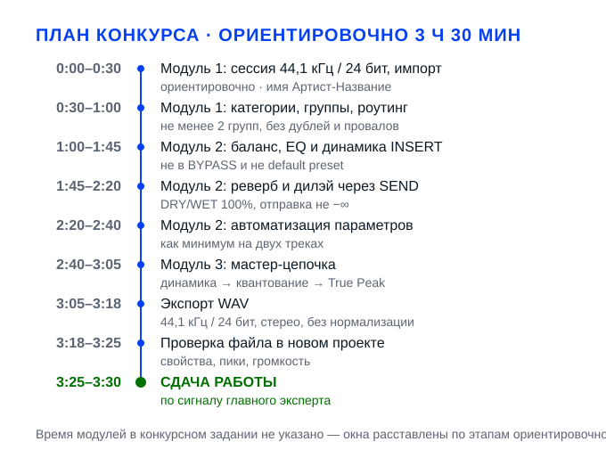
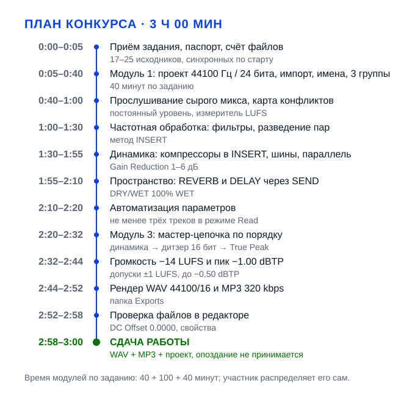

Звукорежиссура (Р)
Задания ниже — официальные файлы «Абилимпикс» (источник: abilympics-russia.ru), разложенные по категориям. Решения написаны по тексту задания, регламенту и критериям оценки; в них указано, что именно проверяет эксперт.
Школьник
14–16 лет, базовый уровень заданияВыдержка из официального конкурсного задания: страницы, относящиеся к категории «Школьник» (стр. 3–7 источника).
Пошаговое решение
Задание для школьников — собрать радиоподкаст длиной ровно 10 минут из выданных исходников: записи дикторского голоса, подборки шумов, джинглов и музыкальных треков. На всё даётся 3 часа: 30 минут на организацию проекта, 120 минут на монтаж и сведение, 30 минут на мастер и экспорт. Нужно создать сессию 44100 Гц и 16 бит с именем из паспорта подкаста, разложить материалы по папкам, переименовать треки строго на одном языке, вычистить голос по сценарному плану, обрезать каждую песню до 2:50–3:10, собрать плейлист на 5–7 минут, вывести хронометраж 10 минут ±5 секунд, применить частотную и динамическую обработку вставками, отправить сигналы на аукс-группы и закончить мастер-цепочкой с лимитером и прибором контроля True Peak. Экспорт — WAV PCM 44100 Гц / 16 бит, True Peak −1,00 dBTP, Integrated −16 LUFS. Баллы чаще всего теряют на хронометраже, на переименовании в двух языках и на обработке в режиме BYPASS.
Задача 1. Организовать рабочую сессию по техническому заданиюМодуль 1 · 30 минут
Первый модуль длится 30 минут и оценивает то, что видно до всякого монтажа: параметры сессии, имя проекта, структуру папок, корректность путей, единый язык в названиях треков и живую маршрутизацию. Это самая дешёвая часть баллов — её берут аккуратностью, а не талантом, и теряют из-за спешки, когда участник сразу тянет файлы в пустую сессию со стандартными 48 кГц и 24 битами. Ниже четыре действия идут в том же порядке, в каком их удобно выполнять: сначала рамка проекта, потом папки, затем импорт и в самом конце имена.
Действие 1.1. Создать сессию с параметрами из задания
Шаг 1.1.1
До первого импорта открываем рабочую станцию и создаём новый проект. В диалоге создания выставляем частоту дискретизации 44100 Гц и разрядность 16 бит, а в поле имени вводим название ровно так, как оно напечатано в паспорте радиоподкаста — с теми же пробелами, дефисами и регистром букв. Путь сохранения выбираем внутри рабочей папки, выданной на площадке, а не на рабочем столе и не в загрузках, потому что оттуда сессия не попадёт в сдачу.
Соответствие названия сессии паспорту и полное техническое соответствие параметров — прямые критерии первого модуля, который длится 30 минут и открывает оценку. Если сессия создана на 48000 Гц или 24 битах, весь дальнейший материал идёт с пересчётом частоты, а эксперту достаточно одного взгляда в свойства проекта, чтобы снять баллы ещё до того, как он услышит подкаст.
Открываем свойства проекта и видим две цифры: 44100 и 16. Заголовок окна сверяем с паспортом посимвольно, включая точки и заглавные буквы: разница в одном символе уже считается расхождением. Убеждаемся, что проект лежит внутри рабочей папки, а не в системном профиле программы.
Самая частая ошибка — оставить в диалоге значения по умолчанию, которые станция запоминает от прошлого пользователя: 48 кГц и 24 бита. Тогда все импортированные файлы помечаются как требующие пересчёта, часть плагинов начинает работать с другим запасом по уровню, а раздел с параметрами сессии закрывается без баллов.
Эксперт проверяет модуль 1 первым делом и смотрит именно свойства сессии и имя проекта: это два клика, которые невозможно объяснить случайностью. Дальше он держит эти параметры в голове до самого экспорта.
Шаг 1.1.2
Сразу после создания проекта настраиваем автосохранение: включаем автоматическое резервное копирование с интервалом 5 минут и отдельно запоминаем сочетание клавиш ручного сохранения. Первое сохранение делаем немедленно, до импорта, чтобы у файла проекта появился реальный путь, а в папке — файл сцены, а не только временные данные. Тут же проверяем, что на диске площадки остаётся не меньше двух-трёх гигабайт свободного места.
Монтаж подкаста — это сотни мелких правок, и каждая несохранённая правка при зависании станции стоит времени, которого в модуле всего 120 минут. Автосохранение относится к организации рабочего проекта: эксперт видит, что участник работает в файле сцены, а не в безымянном документе, и что после перезапуска программа не начнёт спрашивать, куда сохранять.
В папке проекта появился файл сцены с ожидаемым именем и весом больше нуля, а в строке состояния видно, что автосохранение включено. Проверяем свободное место на диске: если его меньше пары гигабайт, экспорт длинного WAV может оборваться на середине.
Работа без сохранения до самого конца — типичная ошибка на площадке: станция падает на рендере, и вместе с ней исчезает вся работа. Не менее обидно сохранить проект в корень чужой папки, где его потом не найти при сдаче.
Эксперт обращает внимание на то, как участник обращается с файлом сцены: сохраняется ли он по ходу, лежит ли проект по нужному пути. Это часть оценки организации, а не отдельный пункт.
Шаг 1.1.3
Проверяем тракт до начала работы: подключаем наушники к интерфейсу, выставляем громкость прослушивания примерно на уровне разговорной речи, включаем прямой мониторинг так, чтобы не слышать задержку собственного голоса. В настройках аудиоустройства ставим буфер, при котором станция работает без треска, обычно это 256 или 512 сэмплов. Отдельно убеждаемся, что на мастер-шине ничего не включено — ни плагинов, ни мониторинга с эффектами по умолчанию.
Оценивают результат на слух и по приборам, поэтому решение, принятое на непроверенных наушниках, почти всегда оказывается неверным по балансу и по уровню. Пустой мастер на старте нужен для того, чтобы позже в правильной последовательности поставить свои приборы: если в шаблоне уже висит чужой лимитер, вы будете измерять не свой микс, а его.
Проигрываем любой тестовый сигнал: звук идёт в оба уха, треска нет, задержка не мешает. Смотрим на мастер-шину — цепочка пустая, фейдер на нуле, индикатор показывает тишину, когда транспорт стоит. Проверьте также, что в настройках аудиоустройства выбран нужный выход, а не встроенный динамик.
Работа в наушниках с выкрученной громкостью даёт привычку к перегруженному низу и тихому верху, и весь микс потом звучит резко. Вторая ошибка — оставить на мастере демонстрационный лимитер из шаблона и потом не понять, почему экспорт не совпадает с замером.
Эксперт смотрит на мониторинг и на чистоту мастер-шины на старте: по этому видно, понимает ли участник, что мастер — это последний прибор в тракте, а не украшение.
Действие 1.2. Разложить материалы по категорийным папкам
Шаг 1.2.1
Внутри папки рабочей сессии создаём четыре подпапки с понятными именами на одном языке: голос, музыка, шумы, джинглы. Кладём их рядом с файлом сцены, а не внутри служебных каталогов станции, чтобы вся сдача лежала в одном месте. Имя каждой подпапки пишем одним словом без пробелов и без сокращений вроде «шум.матер.»: потом по этим именам эксперт сверяет категорийное размещение.
Категорийное размещение звуковых компонентов по папкам внутри папки рабочей сессии прямо перечислено в результате первого модуля. Проверяется это глазами за десять секунд, и такая проверка либо даёт баллы сразу, либо снимает их сразу: спорить тут не о чем, файлы либо разложены, либо свалка.
Открываем папку проекта в файловом менеджере и видим файл сцены и рядом четыре каталога с осмысленными именами. В каждом каталоге лежит хотя бы один файл нужного типа, а корень папки не забит разрозненными файлами.
Складывать всё в одну папку и рассчитывать, что разберётесь по именам файлов, — верный способ потерять баллы: часть выданных файлов названа кодами, и через час вы уже не помните, какой код был шумом двери. Вторая ошибка — папки с именами на разных языках.
Эксперт открывает папку сессии в проводнике и проверяет структуру до того, как слушать звук. Ему важно увидеть категории, а не их количество. Пустые каталоги и файлы, лежащие в корне папки, он тоже учитывает при проверке структуры.
Шаг 1.2.2
Сначала копируем выданные исходники из общей папки площадки в свою папку проекта, и только потом импортируем их в станцию. Копирование делаем целиком, сохраняя имена файлов, но без переименования на этом этапе: имя файла в системе и имя трека в проекте — разные вещи, и путать их нельзя. Проверяем, что копии открываются и что их количество совпадает с описью.
Сессия должна ссылаться на физические файлы внутри вашей папки, иначе после переноса работы на проверку проект откроется с молчащими треками. Копирование до импорта ещё и защищает от чужой правки: если сосед по площадке откроет общий каталог, ваши исходники останутся нетронутыми.
Сравниваем количество файлов в папке проекта с описью выданного материала, открываем два-три наугад и слышим звук. Пути к файлам в сессии указывают внутрь вашей папки, а не в общий каталог площадки. Наугад открываем два-три файла из папки и убеждаемся, что станция читает их без предупреждений о формате.
Работать прямо из общей папки — самая дорогая ошибка модуля: в момент сдачи выясняется, что половина треков ссылается на сетевой путь, который уже отключён. Ещё одна — переименовать файлы до импорта и потом не найти их по описи.
Эксперт проверяет путь к исходникам и то, лежат ли файлы в сессии: это отдельный пункт результата модуля, и он смотрится в свойствах любого трека. Отдельно он отмечает, названы ли файлы понятно и лежат ли все копии внутри сессии.
Шаг 1.2.3
Разбираем материал по категориям осознанно, а не по алфавиту: в голос идут только файлы диктора, включая дубли и альтернативные дубли, в музыку — треки плейлиста, в шумы — атмосферы, интершумы, звуки окружения, в джинглы — заставки, отбивки и логотипы программы. Если файл вызывает сомнение, слушаем первые пять секунд и кладём по фактическому содержанию, а не по названию. Список сомнительных файлов держим на бумаге рядом с клавиатурой.
Категория определяет дальнейшую обработку: голос получает одну цепочку, музыка другую, шумы третью. Если атмосфера города окажется в музыкальной группе, вы обработаете её компрессором для подложки и получите либо выдавленный фон, либо провал по шумам, а это уже минус по частотной и динамической обработке.
По каждой папке можете за десять секунд сказать, что в ней лежит и почему. Особое внимание джинглам: они короткие, часто названы кодами и легко попадают в музыку, хотя дальше им нужна отдельная группа.
Раскладывать по названиям файлов, не слушая, — почти гарантированная путаница: часть заставок названа как музыка, а часть атмосфер — как эффекты. Потом на сведении вы ищете, откуда берётся посторонний гул в музыкальной шине.
Эксперт смотрит на соответствие содержимого папок категориям и может попросить открыть любую из них. Порядок в категориях читается как понимание структуры радиоподкаста.
Действие 1.3. Импортировать исходники и проверить пути
Шаг 1.3.1
Импортируем файлы пачками по категориям: сначала голос, потом музыка, затем шумы и джинглы. В диалоге импорта следим за параметром, который отвечает за приведение частоты дискретизации: файлы с частотой, отличной от 44100 Гц, станция пересчитает сама, и это нормально, но такие файлы нужно запомнить. Каждую пачку сразу проверяем на слух по первому файлу, чтобы не тащить в проект битые или пустые дорожки.
Импорт по категориям даёт сразу понятную структуру сессии, а не двести дорожек в случайном порядке, которые потом придётся разбирать в спешке. Контроль частоты важен потому, что сессия объявлена на 44100 Гц: файл на 48000 Гц после пересчёта теряет верхние частоты, и об этом лучше знать заранее, чем удивляться на экспорте.
Количество импортированных дорожек совпадает с количеством выданных файлов. На каждой дорожке видна волновая форма, а не пустая полоса, и при проигрывании слышен звук. Ни одна дорожка не помечена как отсутствующая.
Перетащить всю папку разом и получить дорожки вперемешку с дублями — потом полчаса уходит на разбор. Вторая ошибка — согласиться на пересчёт частоты, не заметив, что половина музыки была в 48 кГц, и потерять верх на всей подложке.
Эксперт проверяет корректность импорта и то, что число дорожек соответствует выданному набору: лишние пустые дорожки и потерянные файлы одинаково видны в списке.
Шаг 1.3.2
После импорта раскладываем дорожки по папкам-трекам внутри самой станции, повторяя логику файловых каталогов: папка голоса, папка музыки, папка шумов, папка джинглов. В каждую папку сворачиваем однотипные дорожки, чтобы на экране оставалось четыре строки вместо сорока. Дорожки внутри папки выстраиваем в порядке появления в сценарии, а не в порядке импорта.
Группировка внутри проекта — это та же категорийность, только уже в интерфейсе, и она экономит время на сведении: обработку можно ставить на папку целиком, а не на каждую дорожку. Порядок по сценарию нужен, чтобы монтаж шёл сверху вниз, как читается текст, и не приходилось прыгать по списку.
На экране видно четыре свёрнутые папки с именами, и при разворачивании в каждой лежат дорожки своего типа. Порядок дорожек внутри совпадает с порядком реплик и музыкальных фрагментов в сценарии. Свёрнутые папки занимают по одной строке, и в каждой видно количество вложенных дорожек.
Оставлять сорок дорожек в плоском списке: к середине модуля вы путаете, где музыка, а где атмосфера, и ставите эквалайзер не на тот трек. Вторая ошибка — назвать папки по номерам, которые ни о чём не говорят.
Эксперт смотрит на структуру списка дорожек: свёрнутые категорийные папки читаются как понимание проекта, плоская свалка — как работа наугад. Порядок дорожек внутри папки он проверяет редко, а вот имена и состав — практически всегда.
Шаг 1.3.3
Проверяем пути к файлам у каждой дорожки: открываем свойства и смотрим, что путь ведёт внутрь папки проекта, а имя файла совпадает с тем, что лежит на диске. Отдельно включаем в настройках проекта режим, при котором станция предупреждает об отсутствующих файлах при открытии. Затем закрываем проект и открываем снова — это самый быстрый способ увидеть, что все ссылки живые.
Регионы на дорожках должны ссылаться на реальные файлы внутри сессии, и это проверяется при сдаче. Перезапуск проекта — единственная честная проверка: пока сессия открыта, станция держит файлы в памяти и молча подставляет то, что было загружено раньше.
После перезапуска ни одна дорожка не отмечена как офлайн, все волновые формы на месте, проигрывание с любого места даёт звук. Ни в одном свойстве пути нет адреса общей сетевой папки площадки. Если станция предлагает найти потерянные файлы, отказываемся и исправляем путь вручную.
Не проверять пути до самого конца и узнать о проблеме на сдаче, когда проект открывают на другом компьютере. Ещё одна ошибка — держать часть файлов во временном каталоге станции, который чистится при закрытии.
Эксперт может открыть проект заново или посмотреть свойства дорожки — оба действия показывают, ссылается ли сессия на собственные файлы. Если станция при открытии спрашивает про потерянные файлы, это видно на экране сразу.
Действие 1.4. Переименовать треки одним языком
Шаг 1.4.1
Выбираем один язык для всех названий и держимся его до конца: либо полностью русский, либо полностью английский, включая имена дорожек, папок, аукс-групп и мастер-шины. Сначала записываем на бумаге список названий, которые понадобятся, и только потом вводим их в проект. Смешивать нельзя даже в мелочах: русское «Голос диктора» рядом с английским Music Bus уже считается нарушением.
Задание разрешает только один способ переименования и прямо запрещает смешанный метод, а корректное переименование треков, групп и ауксов входит в результат первого модуля. Это тот пункт, где потерять баллы проще всего: достаточно один раз назвать новую группу на другом языке.
Пройдите по списку дорожек сверху вниз и прочитайте названия подряд: они должны читаться как одна система, без переключения алфавита. Отдельно проверьте мастер-шину и аукс-группы — их забывают чаще всего.
Смешанное переименование — самая частая потеря баллов в модуле 1: участник пишет голос по-русски, музыку по-английски, потому что так короче. Формально это прямое нарушение запрета, и оно фиксируется без обсуждения.
Эксперт читает список дорожек целиком и отмечает любой переход на другой алфавит. Спорить с этим бесполезно: названия либо однородные, либо нет. Названия шин и мастера он смотрит вместе с дорожками, в одном общем списке каналов.
Шаг 1.4.2
Называем дорожки по содержанию и по роли: голос диктора — с номером дубля или фразы, музыка — по схеме исполнитель-название, шумы — по месту и событию, джинглы — по типу заставки. В названии не оставляем кодов выдачи, расширений файлов и слов вроде final и new. Для музыки схема обязательна: сначала имя исполнителя, затем дефис, затем название песни, ровно в этом порядке.
Идентификация музыкального трека по схеме исполнитель-название — отдельный пункт оценки, и проверяется он по названию дорожки, а не по тегам файла. Осмысленные имена нужны и вам: на сведении вы ищете трек по смыслу, а не по номеру, который ничего не значит.
В названии каждой музыкальной дорожки есть исполнитель, дефис и название. В названиях нет расширений вроде wav и mp3, нет служебных слов и нет двойных пробелов. Названия шумов позволяют понять событие, не слушая файл.
Оставить имена файлов как есть — тогда схема исполнитель-название не выполнена ни для одной песни, и пункт закрывается нулём. Вторая ошибка — написать название песни первым, а исполнителя вторым: порядок в задании задан жёстко.
Эксперт выборочно открывает музыкальные дорожки и сверяет названия со схемой. Достаточно одной перевёрнутой записи, чтобы возник вопрос ко всему списку.
Шаг 1.4.3
Отдельно переименовываем шины и служебные каналы: аукс-группы получают имена по типу сигнала, который через них идёт, а мастер-шина — понятное имя проекта. Если в проекте остались пустые дорожки от шаблона, удаляем их, а не оставляем с чужими именами. В конце сохраняем проект и делаем снимок экрана со списком дорожек, чтобы через час было с чем сверить.
Корректное переименование групп и ауксов указано в результате модуля рядом с переименованием треков. Пустые дорожки с чужими названиями портят картину: эксперт видит, что проект не приведён в порядок, и проверяет остальное внимательнее. Названия служебных каналов он читает вместе с дорожками, поэтому шаблонные имена сразу заметны.
Каждая шина называется по типу сигнала, пустых дорожек в списке нет, а снимок экрана совпадает с текущим состоянием проекта. Все имена по-прежнему на одном языке. Снимок экрана сохраняем в папку проекта, чтобы потом не искать его на рабочем столе.
Переименовать дорожки, но забыть про шины и оставить стандартные Bus 1 и Aux 2 — половина пункта не закрыта. Вторая ошибка — удалить служебную дорожку, на которую уже была настроена отправка, и получить пропажу сигнала.
Эксперт смотрит на весь список, включая служебные каналы: именно там чаще всего остаются шаблонные имена, выдающие работу без системы. Список служебных каналов он может раскрыть отдельно, поэтому шаблонные имена не спрятать.
Задача 2. Отредактировать голос диктора и смонтировать выпускМодуль 2 · 120 минут · монтаж
Второй модуль длится 120 минут и делится на две половины: монтаж и сведение. Здесь разбирается монтаж. Нужно прочитать сценарный план, вычистить дикторский голос, собрать выпуск из реплик, джинглов, шумового оформления и музыкальной подложки, обрезать каждую песню плейлиста до 2 минут 50 секунд — 3 минут 10 секунд, оставить следы музыкального монтажа видимыми в проекте и вывести общий хронометраж ровно 10 минут с точностью плюс-минус 5 секунд, закончив ярко выраженной монтажной точкой. Плавное затухание в конце выпуска монтажной точкой не считается — за это снимают отдельно.
Действие 2.1. Прочитать сценарий и разметить голос
Шаг 2.1.1
Открываем сценарный план и переносим его в проект как дорожку-заметку: на пустой дорожке ставим маркеры по структуре выпуска — открывающая заставка, приветствие, первый блок, джингл-переход, рубрика с музыкой, второй блок, финальная заставка. Каждому маркеру даём короткое имя и, если нужно, заметку с номером страницы сценария. Маркеры ставим до всякой резки, пока картина выпуска ещё целиком в голове.
Редактирование голоса ведётся по разработанному сценарному плану, и наличие разметки — единственный способ доказать, что выпуск собран по сценарию, а не на слух. Разметка ещё и экономит время: на 120 минут модуля приходится около сорока реплик и пять-шесть музыкальных фрагментов, и без маркеров вы каждый раз заново ищете, где заканчивается рубрика.
На линейке времени видно не меньше семи маркеров, и их порядок совпадает с порядком блоков в сценарии. К любому месту выпуска можно перейти одним нажатием и сразу понять, какой это блок. Количество маркеров совпадает с числом блоков сценария, включая финальную заставку.
Начинать резку без разметки: через полчаса вы уже не помните, какая реплика была дублем, а какая единственным чистым вариантом. Вторая ошибка — поставить маркеры после монтажа, когда структура уже рассыпалась на безымянные куски.
Эксперт смотрит на маркеры и заметки на линейке: разметка по сценарию читается как понимание структуры радиоподкаста, а её отсутствие — как монтаж по интуиции.
Шаг 2.1.2
Размечаем голос диктора по фразам: ставим маркеры на границах смысловых блоков и отмечаем дубли одним и тем же префиксом, например номер фразы и букву варианта. Проблемные места — оговорки, вдохи, щелчки, посторонние звуки — помечаем отдельным цветом маркера, чтобы потом не искать их на слух. Разметку делаем в один проход прослушивания, не останавливаясь на правку.
Отредактировать голос означает оставить только те дубли, которые читаются чисто, и убрать всё, что мешает слушателю. Один проход разметки без правки нужен потому, что правка на слух занимает втрое больше времени и выбивает из ритма: в 120 минутах модуля такой привычки хватить не может.
У каждой фразы есть выбранный дубль, все остальные помечены как альтернативные. Все оговорки и щелчки отмечены цветом, и их количество совпадает с тем, что вы услышали при первом прослушивании. Число отмеченных проблемных мест должно совпадать с числом правок в следующем действии.
Править с первого прослушивания: половина времени уходит на первые три фразы, а к концу модуля выпуск не собран. Вторая ошибка — не помечать дубли и потом случайно поставить в выпуск вариант с оговоркой.
Эксперт может открыть любую часть проекта и увидеть, отмечены ли варианты: это показывает, работал участник по системе или резал первое, что слышал. По разметке он судит и о том, доведён ли монтаж до конца и нет ли брошенных фрагментов.
Шаг 2.1.3
Приводим дорожку голоса в рабочее состояние: включаем отображение спектрограммы и, если нужно, регулируем вертикальный масштаб так, чтобы тихие части читались. Подрезаем края файла до первого и последнего слова и убираем лишнюю тишину в начале, оставив 200 миллисекунд запаса. Проверяем, что на дорожке нет двух наложенных записей в одном месте. Заодно выключаем ненужные solo, иначе часть материала останется неслышной при проверке.
Спектрограмма показывает то, чего не слышно в наушниках на общей громкости: щелчки, шипение, низкочастотный гул от кондиционера. Чистый вход нужен и для того, чтобы дальше работали плагины: если подать в компрессор гул, он начнёт качать уровень на шуме, и голос станет неровным.
На спектрограмме видно тёмный ровный фон между фразами и яркую полосу голоса. Наложений нет, края подрезаны, а в начале дорожки остался небольшой запас тишины для последующей обработки краёв. При увеличении видно, что между фразами остаётся ровный тёмный фон, а не рваные края.
Работать только по волновой форме: на ней не видно, что в паузах сидит широкополосный шум, и он потом вылезает в тихих местах. Вторая ошибка — оставить длинный хвост тишины и потом неверно оценить общий хронометраж.
Эксперт смотрит, включена ли у участника спектрограмма и подрезаны ли края: это признак того, что человек работает с сигналом, а не только с картинкой.
Действие 2.2. Почистить и отредактировать голос диктора
Шаг 2.2.1
Убираем дыхания и щелчки: выделяем каждое дыхание отдельным фрагментом и понижаем его громкость на 12–18 дБ, а не вырезаем в ноль, чтобы не получить провал тишины. Щелчки и причмокивания вычищаем короткими выделениями по 10–30 миллисекунд с плавными краями. Работаем на увеличенном масштабе, чтобы видеть форму каждого щелчка. Каждое выделение делаем с плавными краями, иначе на месте правки появится новый щелчок.
Полное вырезание дыхания даёт эффект рваного эфира: слушатель слышит, что фон исчезает и появляется, и это воспринимается как дефект записи. Понижение уровня сохраняет естественность и одновременно убирает раздражающий звук, что напрямую влияет на оценку качества монтажа голоса.
Слушаем два-три перехода между фразами: фон ровный, дыхание не бросается в глаза и не слышится как отдельный звук. На волновой форме нет вертикальных обрывов и провалов до нуля. Проходим по трём случайным паузам и убеждаемся, что фон в них одинаковый по уровню.
Вырезать дыхания в ноль — самая частая ошибка новичков: в наушниках получается «телефонный» эффект, и голос звучит неестественно. Вторая ошибка — вычищать щелчок куском по 200 миллисекунд и вместе с ним убирать начало слова.
Эксперт слушает именно стыки и паузы: на них слышно, умеет участник работать с тишиной или режет её грубо. Дыхания, сниженные на 12–18 дБ, он считает нормой, а полностью вырезанные — дефектом монтажа.
Шаг 2.2.2
Склеиваем фразы с перекрёстным затуханием: на каждом стыке делаем фейд входа и выхода по 5–15 миллисекунд, а для стыков внутри слова — до 25 миллисекунд. Стык ставим в паузу между словами, а не в середину гласной, и сдвигаем точку на 20–40 миллисекунд в сторону тишины. После склейки проходим по всей дорожке и проверяем каждый шов отдельно, а не на общем прослушивании.
Без перекрёстного затухания на каждом стыке возникает щелчок от резкого перепада уровня, и на десятиминутном выпуске это десятки слышимых дефектов. Проверка каждого шва по отдельности нужна потому, что при общем прослушивании мозг достраивает пропущенное, а эксперт слушает прицельно.
При увеличении масштаба на каждом стыке видна короткая косая линия фейда, а не вертикальный обрыв. На слух стыки не щёлкают, и слова не «съедаются» на границе. Фейды должны быть видны на всех стыках, а не только на тех, что вы правили вручную.
Резать без фейдов и надеяться, что щелчки не слышны: на мониторах их слышно отчётливо, и они считаются дефектом монтажа. Вторая ошибка — ставить стык в середине слова, из-за чего согласная пропадает и фраза теряет смысл.
Эксперт увеличивает масштаб на случайном стыке и смотрит на форму склейки: наличие фейда видно сразу и говорит о владении инструментом. Щелчок на стыке он слышит даже при небольшой громкости мониторинга, поэтому фейды обязательны.
Шаг 2.2.3
Подчищаем фон между фразами: если в паузах слышен гул или шипение, выделяем участок тишины и применяем мягкое шумоподавление с глубиной 6–10 дБ, а не максимальной. Для щелчков и потрескиваний используем точечный реставрационный инструмент. После обработки обязательно сравниваем с оригиналом на коротком фрагменте, включая и выключая плагин. Глубину подавления увеличиваем по 1–2 дБ до момента, когда шум перестаёт быть заметным на слух.
Шумоподавление оценивается не по цифре подавления, а по отсутствию артефактов: на глубине выше 12 дБ голос начинает звучать металлически, с «водяными» призвуками. Мягкая обработка сохраняет естественность тембра, а тембр диктора — основа восприятия всего подкаста.
В паузах фон ровный, без свиста и без «подводных» призвуков на согласных. Разница между обработанным и исходным фрагментом слышна как чистота, а не как другой голос. Проверяем самый тихий участок голоса: там артефакты обработки слышны лучше всего.
Выкрутить шумоподавление на максимум «чтобы точно не было шума»: голос становится сиплым и стеклянным, и это слышно лучше, чем исходный шум. Вторая ошибка — обработать всю дорожку целиком, не проверив самый тихий участок.
Эксперт слушает согласные и тихие окончания: по ним слышно, перегружено ли шумоподавление. Артефакты обработки считаются дефектом, даже если шума стало меньше.
Действие 2.3. Собрать выпуск: джинглы, шумы и подложка
Шаг 2.3.1
Собираем выпуск сверху вниз по маркерам: на открывающую заставку ставим джингл, под приветствие опускаем его уровень на 8–10 дБ и уводим в паузу, дальше идут блоки с репликами, между ними — короткие отбивки по 2–4 секунды. Каждый переход отмечаем маркером, чтобы структура оставалась видимой. Джинглы не накладываем на первое слово диктора: между заставкой и речью оставляем 100–200 миллисекунд.
Наличие необходимого музыкального и шумового оформления — отдельный пункт результата модуля, и проверяется он по факту присутствия заставок и отбивок в нужных местах. Наложение заставки на первое слово — типичный дефект сборки: слушатель теряет первую фразу, хотя формально всё смонтировано.
В начале и в конце звучат заставки, между блоками стоят отбивки, а речь нигде не начинается поверх заставки. Структура на линейке читается по маркерам без прослушивания. Между заставкой и первым словом остаётся слышимая пауза, а не наложение двух сигналов.
Поставить заставку так, что первое слово приветствия уходит под неё, — потеря смысла в самом начале выпуска. Вторая ошибка — использовать одну и ту же отбивку на всех переходах: выпуск звучит однообразно, и оформление не выполняет свою роль.
Эксперт слушает первые двадцать секунд и границы блоков: по ним видно, есть ли оформление и понимает ли участник, зачем оно нужно. Переходы он слушает подряд, чтобы оценить ритм выпуска, а не отдельные фрагменты по выбору.
Шаг 2.3.2
Под реплики кладём музыкальную подложку и шумовое оформление: атмосферу улицы, помещения или студии ставим на отдельную дорожку, уровень выставляем так, чтобы она читалась, но не мешала разборчивости речи. Под музыку на речи делаем автоматизацию уровня: в паузах подложка поднимается до −20 дБ, под фразой опускается до −28 дБ, переходы по 150–300 миллисекунд. Атмосферу заводим в начале блока и уводим в конце.
Музыкальная подложка и шумовое оформление перечислены в результате модуля прямо, а разборчивость речи — то, ради чего подкаст существует. Ручная автоматизация здесь честнее автоматического дакинга: эксперт видит нарисованную кривую и понимает, что уровень подобран осознанно.
Речь разбирается на любом уровне прослушивания, а подложка слышна в паузах. На дорожке подложки видна нарисованная кривая автоматизации с плавными переходами, а не ступеньки. Кривую видно на дорожке при включённом режиме отображения автоматизации, а не только по слуху.
Поставить подложку на постоянном уровне и не трогать её: под громкой фразой музыка маскирует согласные, и часть текста теряется. Вторая ошибка — задрать атмосферу так, что она превращается в шум и снижает общую оценку чистоты.
Эксперт слушает подложку под речью и проверяет, не «спорит» ли она с голосом. Наличие автоматизации уровня на подложке отмечается отдельно, потому что это работа со смыслом, а не с громкостью.
Шаг 2.3.3
Проверяем непрерывность: проходим весь выпуск от начала до конца без остановок и записываем на бумаге все места, где слышна пауза дольше полутора секунд или провал в звуке. Каждое найденное место закрываем атмосферой, коротким шумом или сдвигом реплик. Отдельно проверяем, что между блоками не осталось пустот от неудачных склеек. Все найденные места записываем с таймкодом, чтобы не искать их повторно на слух.
Файл должен иметь непрерывное звучание, без пауз — это прямое требование задания, и оно проверяется прослушиванием. Провал в звуке воспринимается как обрыв записи или как ошибка экспорта, а не как художественная пауза, и снижает оценку сразу по двум пунктам.
На волновой форме нет участков тишины длиннее полутора секунд, кроме предусмотренных сценарием. Индикатор уровня в паузах не падает в ноль: там остаётся атмосфера или подложка. Прослушивание с ноутбучных динамиков тоже не должно давать провалов и обрывов.
Оставить пустоту между двумя блоками и не заметить её при монтаже по фрагментам: на цельном прослушивании она звучит как сбой. Вторая ошибка — закрывать пустоту громким шумом, который перебивает следующую фразу.
Эксперт слушает выпуск целиком и отмечает провалы и паузы: непрерывность — формальный критерий, спорить с ним нельзя. Провал длиной больше двух секунд он отмечает как нарушение непрерывности звучания.
Действие 2.4. Сделать музыкальный монтаж песен плейлиста
Шаг 2.4.1
Отбираем треки для плейлиста и слушаем каждый целиком, отмечая сильные доли и границы куплетов. Для каждой песни намечаем точки входа и выхода так, чтобы уложиться в 2 минуты 50 секунд — 3 минуты 10 секунд: чаще всего это вход с первого припева и выход на последнем сильном ударе. Считаем длительность каждого фрагмента сразу, до резки, и записываем на бумаге.
Хронометраж каждой песни определяется техническим заданием и должен находиться в диапазоне 2 минут 50 секунд — 3 минут 10 секунд, и это отдельный пункт оценки. Планирование до резки нужно потому, что подгонка «на глаз» почти всегда выводит за границу, а переделывать монтаж после сведения дорого по времени.
Для каждого трека на бумаге записаны две точки и посчитанная длительность в пределах 2:50–3:10. Все фрагменты укладываются в диапазон с запасом хотя бы в 2–3 секунды от краёв. Записанные длительности удобно сразу перевести в секунды, чтобы складывать без ошибок.
Резать песню по ровному месту, не считая длительность, и получить 3:25 или 2:40: и то и другое вне диапазона, и пункт не закрывается. Вторая ошибка — вход посреди слова, из-за чего песня начинается с обрывка.
Эксперт измеряет длительность фрагментов по линейке проекта и сравнивает с диапазоном из задания. Точки входа он тоже слушает: обрывок в начале песни считается дефектом монтажа.
Шаг 2.4.2
Режем каждую песню по намеченным точкам и оставляем следы монтажа видимыми: не склеиваем части в один файл, не применяем объединение и не рендерим фрагменты отдельно, а оставляем в проекте два-три разделённых объекта с явными границами. На каждом стыке внутри песни ставим перекрёстное затухание 20–40 миллисекунд строго по сильной доле. Границы подписываем маркерами с номером трека.
Процесс музыкального монтажа должен быть отображён в проекте — это отдельное требование, и проверяется оно по наличию видимых разрезов, а не по звучанию. Склеенный в один объект фрагмент выглядит как цельный файл, и эксперт не может убедиться, что монтаж вообще выполнялся.
В проекте видны разрезы внутри музыкальных фрагментов, на каждом стоит короткий фейд, а границы отмечены маркерами. Если раскрыть объект, видно несколько частей, а не одну. Следы разрезов должны оставаться видимыми и после сохранения и повторного открытия проекта.
Склеить всё в один объект «чтобы было аккуратно» и тем самым уничтожить доказательство монтажа: пункт о музыкальном монтаже закрывается нулём при идеальном звучании. Вторая ошибка — резать не по доле, и стык слышен как рывок ритма.
Эксперт смотрит на объекты в проекте и ищет разрезы: именно наличие видимых границ подтверждает, что музыкальный монтаж выполнялся в сессии. Объединённый в один объект фрагмент он отличает сразу, даже если звучит он совершенно ровно.
Шаг 2.4.3
Собираем плейлист в единую последовательность и считаем суммарную длительность музыкальных фрагментов: целевое значение около 6 минут, допустимый коридор — от 5 до 7 минут. Если сумма выше, сокращаем один из треков внутри допустимого диапазона или убираем фрагмент, но не выходим за 2:50 на каждой песне. Переходы между песнями делаем по 1–2 секунды через атмосферу или отбивку.
Музыкальный контент не должен превышать 6 минут плюс-минус 1 минута — это ограничение задания, и оно связано с общим хронометражом в 10 минут: если музыки больше, на речь остаётся слишком мало времени. Проверка суммы заранее спасает от переверстки всего выпуска в последние двадцать минут модуля.
Сумма длительностей музыкальных фрагментов по линейке находится между 5 и 7 минутами, а каждая отдельная песня — в диапазоне 2:50–3:10. Переходы между треками не оставляют пустот. Число треков в плейлисте совпадает с задуманным, и ни один фрагмент не потерялся при сборке.
Не считать сумму и узнать на финальном замере, что музыка занимает восемь минут: тогда придётся резать уже сведённые фрагменты, теряя обработку. Вторая ошибка — сократить одну песню до двух минут, чтобы уложиться в сумму: это выводит её из диапазона и меняет одну потерю на другую.
Эксперт суммирует длительности музыкальных объектов и сверяет с коридором 5–7 минут. Отдельно он проверяет, что ни одна песня не выпала из своего диапазона ради этой суммы.
Шаг 2.4.4
Сводим музыкальные фрагменты по уровню между собой и относительно речи: включаем громкость на комфортном уровне и сравниваем первый и последний трек плейлиста, подкручивая фейдеры так, чтобы разница не превышала 1–2 дБ. Отдельно проверяем переход из музыки в речь: там не должно быть провала или скачка. Все правки фиксируем на дорожках, а не в общей громкости прослушивания.
Ровный уровень плейлиста нужен и для оценки оформления, и для будущего сведения: если треки отличаются на 5–6 дБ, компрессор на музыкальной шине будет работать по-разному на каждом фрагменте. Правки на дорожках, а не в мониторинге, сохраняются в проекте и видны эксперту.
На индикаторах соседних фрагментов пики отличаются не больше чем на 2 дБ. При переходе из музыки в речь нет ни рывка вверх, ни провала, а фейдеры на дорожках стоят в разных положениях, а не все на нуле.
Крутить общую громкость интерфейса вместо фейдеров дорожек: в проекте остаются треки с разницей в 6 дБ, а вы уверены, что всё выровнено. Вторая ошибка — выровнять музыку по пикам, не слушая громкость на слух: пики совпадут, а воспринимаемая громкость будет разной.
Эксперт смотрит на фейдеры и слушает переходы между треками: рассинхрон по громкости в плейлисте слышен сразу и относится к качеству оформления. Разница в 3–4 дБ между треками плейлиста для него уже заметна и фиксируется в заметках.
Действие 2.5. Вывести хронометраж и поставить монтажную точку
Шаг 2.5.1
Измеряем полную длительность выпуска инструментом выделения: ставим курсор в самое начало первого объекта и растягиваем выделение до конца последнего, затем смотрим длительность выделения. Целевое значение — 10 минут 00 секунд, допустимое отклонение — плюс-минус 5 секунд. Если разница больше, добавляем или убираем целые реплики и отбивки, а не растягиваем паузы.
Общий хронометраж готовой фонограммы должен составить ровно 10 минут с погрешностью плюс 5 секунд, и это измеряемый критерий: эксперт не слушает на глаз, а выделяет материал и читает цифру. Подгонка за счёт пауз ломает ритм выпуска, а подгонка за счёт целых блоков сохраняет смысл.
Длительность выделения от первого до последнего объекта читается как 10:00 с отклонением не больше 5 секунд. В проекте нет объектов за пределами выделения — ни хвостов, ни забытых фрагментов в начале.
Подгонять хронометраж, растягивая тишину между блоками: сумма формально сходится, но выпуск «провисает» по темпу. Вторая ошибка — не заметить объект, выброшенный далеко за пределы выделения, и получить 10:20 при видимых 10:00.
Эксперт выделяет материал и читает длительность — это первое, что он проверяет в модуле монтажа. Отклонение больше пяти секунд фиксируется без обсуждения.
Шаг 2.5.2
Ставим ярко выраженную монтажную точку в конце: последнюю фразу диктора завершаем короткой паузой 200–300 миллисекунд, а затем резко, без затухания, обрываем звук на сильной доле финальной музыкальной фразы. Точку делаем именно обрывом с перекрёстным затуханием 5–10 миллисекунд, чтобы не было щелчка. Никаких длинных фейдов на всю музыкальную концовку.
Концовка монтажа должна заканчиваться ярко выраженной монтажной точкой, а плавное затухание монтажной точкой не является — это прямо сказано в задании. Монтажная точка показывает, что выпуск закончен осознанно, а не оборвался потому, что у участника кончилось время.
На волновой форме конец выпуска выглядит как обрыв на громком уровне, а не как длинная косая линия затухания. При прослушивании финал звучит как удар, после которого наступает тишина. На конечном участке нет длинного спада уровня: последняя доля обрывается на полной громкости.
Сделать затухание на 3–4 секунды, потому что так «красивее»: по заданию это не считается монтажной точкой, и пункт не закрывается. Вторая ошибка — оборвать звук на тихом месте, где обрыв не слышен как акцент.
Эксперт слушает финал отдельно и смотрит форму волновой: обрыв и затухание он различает мгновенно, и это один из немногих критериев, где нет толкований.
Шаг 2.5.3
Делаем контрольное прослушивание всего выпуска целиком, от первой до последней секунды, с блокнотом в руках: отмечаем всё, что цепляет слух — щелчки, провалы, резкие стыки, несовпадение уровней, посторонние шумы. Каждую пометку исправляем сразу после прохода, а не в конце, чтобы не забыть. После правок ещё раз измеряем длительность, потому что она могла измениться.
Один цельный проход выявляет то, чего не видно в монтаже по фрагментам: ритм выпуска, накопленные мелкие дефекты, неравномерность громкости. Повторный замер нужен потому, что любая правка стыка сдвигает хронометраж, а диапазон плюс-минус 5 секунд очень узкий.
В блокноте нет неисправленных пометок, длительность после правок по-прежнему 10:00 плюс-минус 5 секунд, а прослушивание на малой громкости не выявляет новых проблем. Пометки в блокноте должны быть вычеркнуты все, иначе какая-то правка осталась невыполненной.
Пропустить цельное прослушивание и сдавать выпуск по фрагментам: на сдаче обнаруживаются склейки, которых вы не слышали. Вторая ошибка — исправлять всё в конце списка и не перемерить время после правок.
Эксперт слушает выпуск целиком, как слушал бы радио: именно на целом проходе проявляются дефекты ритма и уровня, которые не видны в проекте. Паузы и провисания он слышит на цельном проходе лучше, чем при выборочном прослушивании блоков.
Задача 3. Свести материал: маршрутизация, частотная и динамическая обработкаМодуль 2 · 120 минут · сведение
Вторая половина второго модуля — сведение. Здесь оценивают три вещи, и все три проверяются в интерфейсе проекта, а не на слух: живая маршрутизация на аукс-группы, частотная обработка исключительно методом INSERT и динамическая обработка тоже вставками, с работающей индикацией Gain Reduction, без режима BYPASS и без заводского пресета. Отдельно проверяется, что аукс-группа собрана минимум с двух треков, что сигнал нигде не дублируется и не пропадает, что все шины включены и что динамика есть не только на мастере, но и на отдельных дорожках.
Действие 3.1. Собрать маршрутизацию на аукс-группы
Шаг 3.1.1
Создаём три аукс-группы и одну общую шину: группу голоса, группу музыки и группу оформления, куда идут шумы и джинглы. Каждой группе назначаем выход прямо на мастер-шину, а не на другую группу, чтобы не получить каскад. Имена группам даём на том же языке, что и треки, и выводим их в списке над обычными дорожками. В окне микшера группы удобно поставить рядом с теми входами, которые в них идут.
Организация роутингового перенаправления для объединения однотипных сигналов — обязательный пункт модуля сведения. Прямой выход на мастер нужен для предсказуемости: каскад из трёх групп легко даёт двойной уровень и неочевидную зависимость фейдеров, а проверяющему трудно понять, где именно теряется сигнал.
В списке видно три аукс-группы с осмысленными именами, у каждой в поле выхода стоит мастер-шина. Ни одна группа не направлена на другую группу, и ни одна не имеет выхода в никуда. Проверьте имена групп: они должны быть на том же языке, что и названия дорожек.
Направить группу музыки на группу оформления, чтобы «сэкономить», и получить двойной уровень на мастере при неизменных фейдерах. Вторая ошибка — оставить у группы выход на физический выход интерфейса, из-за чего сигнал не попадает в общий микс.
Эксперт открывает окно маршрутизации и смотрит выход каждой шины: каскад и выход в пустоту видны сразу, это одна из первых проверок сведения. Он же смотрит, не идёт ли сигнал с группы на группу: это видно в том же окне маршрутизации.
Шаг 3.1.2
Отправляем сигналы на группы: голос диктора и все дубли — на группу голоса, каждый музыкальный трек плейлиста — на группу музыки, шумы и джинглы — на группу оформления. Важно, чтобы на каждую группу шло минимум с двух треков: если музыка в выпуске одна, добавляем в группу хотя бы атмосферу или второй музыкальный фрагмент. Тип отправки выбираем такой, при котором уровень отправки регулируется отдельно от основного выхода.
Перенаправление сигнала на аукс-группу не должно идти с одного трека — это прямое требование задания, и оно проверяется по количеству входов у шины. Смысл в том, что группа нужна для совместной обработки однотипных сигналов: одна дорожка в группе означает, что обработку можно было поставить прямо на неё, и организация маршрутизации не выполнена.
У каждой группы в списке входов не меньше двух треков, уровень отправки не равен минус бесконечности, а канал отправки не стоит в MUTE. На индикаторе группы уровень появляется, когда звучит любой из входящих треков.
Сделать группу из одного трека — формально шина есть, но пункт не закрыт, потому что маршрутизация не объединяет однотипные сигналы. Вторая ошибка — отправить треки на группу и забыть включить саму отправку, получив молчащую шину.
Эксперт раскрывает список входов каждой группы: количество входов — первое, на что он смотрит, и один вход сразу вызывает вопрос. Он также смотрит уровень отправки: минус бесконечность означает, что шина осталась пустой.
Шаг 3.1.3
Проверяем маршрутизацию по приборам: по очереди включаем solo на каждой группе и слушаем, что в неё попадает, затем сравниваем уровень мастера до и после включения групп. Убеждаемся, что все шины активны, ни одна не стоит в MUTE, и что при выключении группы её сигнал исчезает целиком, а не частично. Отдельно проверяем, что ни один трек не звучит дважды — и напрямую, и через группу.
Перенаправление не должно приводить к дублированию или пропаданию сигнала, а все аукс-группы должны быть активны — оба пункта перечислены в задании. Дублирование опаснее пропадания: сумма двух копий одного трека даёт плюс 3–6 дБ и неочевидное на слух изменение тембра из-за гребёнчатой фильтрации.
При solo на группе слышны только её треки, при выключении группы сумма на мастере падает ровно на её уровень. Уровень мастера при включении групп не скачет на 3 дБ, а все шины находятся в активном состоянии.
Оставить трек одновременно с прямым выходом на мастер и с отправкой на группу: сигнал звучит дважды, с задержкой в несколько сэмплов, и на слух это даёт странную окраску, которую трудно объяснить. Вторая ошибка — держать шину в MUTE и потом искать пропажу сигнала.
Эксперт включает solo на шинах и смотрит на уровень мастера: дублирование и пропадание он проверяет именно так, потому что на слух это не всегда очевидно.
Действие 3.2. Применить частотную обработку методом INSERT
Шаг 3.2.1
Ставим эквалайзер вставкой на дорожку голоса: включаем фильтр верхних частот срезом 80–100 Гц и пологим скатом, убираем гул в области 250–400 Гц на 2–3 дБ узкой полосой и слегка поднимаем разборчивость на 3–5 кГц на 1,5–2 дБ. Все параметры подбираем, слушая на реальных фразах, а не на синусоиде. После настройки сверяем, что прибор стоит именно в слоте вставки, а не в цепи отправки.
Частотную обработку задание требует выполнять исключительно методом INSERT, и это проверяется по расположению прибора в цепочке. Срез ниже 80 Гц убирает гул кондиционера и топот, область 300 Гц отвечает за «бубнение» на близком микрофоне, а 3–5 кГц — за разборчивость согласных, то есть за то, ради чего подкаст слушают.
Прибор виден в списке вставок дорожки, а не в списке отправок. При выключении прибора тембр меняется, а при включении возвращается. На спектре ниже 80 Гц уровень заметно ниже, чем у исходника. Срез и подъём видно на графике кривой, и он не должен выглядеть как ровная линия.
Поставить эквалайзер в отправку на параллельную шину: обработка есть, но метод не тот, и пункт о частотной обработке закрывается частично или нулём. Вторая ошибка — вырезать широкой полосой середину «чтобы убрать бубнение»: голос теряет тело и звучит тонко.
Эксперт разворачивает цепочку вставок на дорожке голоса и нажимает обход: по разнице слышно, что сделал участник и насколько осознанно выбраны частоты.
Шаг 3.2.2
Обрабатываем музыкальные треки и подложку: на группе музыки ставим эквалайзер вставкой, срезаем ниже 40 Гц, а в области 1–4 кГц делаем широкий провал на 2–4 дБ — именно там живёт речь диктора. На шумовых дорожках убираем крайние верхи выше 12–14 кГц, если они шипят, и срезаем инфраниз. Джинглы обрабатываем отдельно, потому что они звучат громче подложки.
Частотное разведение музыки и голоса — основа разборчивости: если подложка занимает ту же полосу, что и диктор, слушатель напрягается и воспринимает выпуск как шумный. Провал в 1–4 кГц на музыке не делает её глухой, но освобождает место речи, и это слышно даже на ноутбучных динамиках.
При включении и выключении провала на музыке разборчивость речи заметно меняется, а тембр музыки остаётся естественным. На спектре подложки видна выемка в области речевых частот. Выемка не должна быть настолько глубокой, чтобы музыка теряла тело и плотность.
Вырезать середину на 8–10 дБ «чтобы точно не мешало»: музыка становится пустой и дребезжащей, и это слышно как дефект обработки. Вторая ошибка — обработать музыку только на одном треке, оставив остальные плейлиста нетронутыми.
Эксперт слушает переход из музыки в речь и обратно: если на границе речь становится глуше или тоньше, значит частотная обработка сделана неверно. Он же проверяет, не убрана ли середина у голоса: разборчивость для него важнее красоты кривой.
Шаг 3.2.3
Проходим по всем приборам частотной обработки и проверяем три вещи: параметры не стоят в заводском пресете, прибор не находится в режиме BYPASS и обработка реально слышна. Для этого сравниваем звучание с обходом и без него и фиксируем, что именно изменилось. Отдельно считаем, на скольких дорожках стоит частотная обработка: по заданию она не должна ограничиваться одной.
Задание прямо требует проверить, что параметры плагина не находятся в режиме заводского пресета и прибор не включён в обход: это две самые частые формальные потери. Эксперт смотрит не на красоту кривой, а на то, что обработка включена и настроена под конкретный материал.
У каждого эквалайзера снята галочка обхода, кривая отличается от горизонтальной линии, а имя пресета не совпадает со стандартным. Частотная обработка стоит минимум на трёх дорожках или группах, и каждую из них вы можете объяснить.
Оставить прибор в обходе после сравнения и не заметить этого: визуально цепочка заполнена, а обработки нет, и оба пункта — и наличие, и работоспособность — теряются. Вторая ошибка — пользоваться готовым пресетом для другого голоса.
Эксперт нажимает кнопку обхода на каждом приборе и слушает разницу. Если разницы нет, значит прибор в обходе или в заводском пресете, и это фиксируется как отсутствие обработки.
Действие 3.3. Применить динамическую обработку методом INSERT
Шаг 3.3.1
Ставим компрессор вставкой на дорожку голоса: степень сжатия 2,5:1–3:1, атака 10–20 миллисекунд, восстановление 80–150 миллисекунд, порог выставляем так, чтобы индикатор Gain Reduction показывал 3–6 дБ на громких фразах и возвращался к нулю в паузах. Дополнительно включаем де-эссер вставкой на 6–8 кГц, если шипящие вылезают. Проверяем, что прибор стоит в цепочке вставок, а не в отправке.
Динамическая обработка должна осуществляться преимущественно методом INSERT, и это проверяется по расположению прибора. Разброс громкости диктора на записи обычно 10–15 дБ, и без сжатия тихие фразы теряются на фоне музыки, а громкие перегружают лимитер на мастере.
Gain Reduction двигается при речи и стоит на нуле в паузах, значение в пиках фраз находится в диапазоне 3–6 дБ. Громкость голоса на слух ровная, дыхание не выходит вперёд, шипящие не режут слух. Проверьте, что компрессор стоит в списке вставок, а не в отправках: это разные окна.
Выкрутить порог так, чтобы Gain Reduction постоянно висел на 10–12 дБ: голос становится плоским и «задавленным», а шум в паузах поднимается. Вторая ошибка — поставить компрессор в отправку и получить параллельное сжатие вместо вставки.
Эксперт смотрит на индикатор Gain Reduction во время речи: он должен двигаться, но не стоять в максимуме. Неподвижная стрелка означает, что прибор не работает или стоит в обходе.
Шаг 3.3.2
Ставим динамическую обработку на группы и отдельные дорожки, кроме мастера: на группе музыки — компрессор 2:1 с подавлением 2–3 дБ, на группе оформления — 1,5:1 с подавлением 1–2 дБ, на шумовой дорожке — гейт или экспандер, убирающий фон между событиями. На каждом приборе выставляем свои параметры, а не копируем настройки с голоса. Проверяем, что ни один прибор не остался в режиме BYPASS.
Помимо лимитера или максимайзера на мастер-треке динамическая обработка должна присутствовать на других треках — это отдельное требование, и оно закрывает целый пункт. Компрессор на музыкальной группе выравнивает плейлист, а экспандер на шумах не даёт атмосфере «поднимать» общий уровень в паузах.
На индикаторах групп видно движение Gain Reduction, а на шумовой дорожке тихие участки стали тише без провалов в ноль. Динамическая обработка стоит минимум на двух дорожках помимо мастера, и все приборы включены.
Ограничиться одним лимитером на мастере и считать, что динамика закрыта: пункт требует обработки на других треках, и он не закрывается. Вторая ошибка — скопировать настройки компрессора с голоса на музыку и получить «дышащую» подложку.
Эксперт проходит по цепочкам дорожек и групп и считает, где стоит динамика. Отдельно он проверяет, что приборы не в обходе и что параметры отличаются от заводских.
Шаг 3.3.3
Проверяем всю обработку целиком перед переходом к мастеру: по очереди включаем и выключаем каждый прибор, фиксируя, что он реально меняет звук, и записываем на бумаге список приборов с их ролью. Убеждаемся, что ни на одном не горит BYPASS, ни один не стоит в стандартном пресете и что порядок обработки на голосе логичен — сначала частотная, затем динамическая. Все правки сохраняем в проекте.
Формальная проверка «обработка применена» описана в задании через два признака: изменение индикации Gain Reduction и отсутствие режима BYPASS с заводским пресетом. Список приборов на бумаге нужен для последнего модуля: на мастере придётся объяснять последовательность, и лучше, чтобы она была записана заранее.
Для каждого прибора вы можете назвать, что он делает и на каком материале. Выключение любого из них слышно, ни один не находится в обходе, а порядок на голосе — частотная обработка, затем динамическая.
Оставить два прибора в обходе и один в заводском пресете, потратив силы на остальные: проверка идёт по каждому прибору отдельно, и формальные потери складываются. Вторая ошибка — поставить динамику до частотной обработки и потом удивляться, что компрессор качает на гуле.
Эксперт проходит по цепочкам и включает обход на каждом приборе: это занимает у него пару минут, а результат сразу показывает, работал участник с обработкой или только расставил плагины.
Задача 4. Оформить мастер-трек и экспортировать файлМодуль 3 · 30 минут
Последний модуль длится 30 минут и стоит отдельных баллов: обработка мастер-трека, правильное расположение контрольных приборов и экспорт с точными техническими параметрами. Школьникам нужен файл PCM WAV с частотой дискретизации 44100 Гц и разрядностью 16 бит, с True Peak Level не выше −1,00 dBTP и допустимым отклонением плюс 0,50 dBTP, и с Integrated −16 LUFS плюс-минус 1 LUFS. После рендера файл обязательно проверяется в аудиоредакторе: на слух и по приборам, до того как вы поднимете руку.
Действие 4.1. Собрать мастер-цепочку в правильном порядке
Шаг 4.1.1
Проверяем мастер-шину перед сборкой цепочки: там не должно быть посторонних приборов от шаблона и демонстрационных эффектов. Ставим первым прибором динамическую обработку — лимитер или максимайзер с потолком выхода −1,0 dB, порог подбираем так, чтобы подавление на самых громких местах было 2–3 дБ, а не 6–8. Атаку оставляем быстрой, восстановление автоматическим или около 100 миллисекунд.
Организация обработки мастер-трека — отдельный пункт модуля, и порядок приборов проверяется по цепочке. Лимитер первым нужен потому, что он ограничивает пики: если поставить его после измерителя, прибор будет показывать уровень до ограничения, и замер перестанет соответствовать файлу.
В цепочке мастера первым стоит лимитер с потолком −1,0 dB, Gain Reduction на громких местах двигается в пределах 2–3 дБ и не висит постоянно. На выходе мастера нет красного индикатора клиппинга. Дополнительно убедитесь, что на мастере нет приборов, поставленных до лимитера.
Поставить лимитер с потолком 0,0 dB: после конвертации в 16 бит и при межсэмпловых пиках файл выходит за −1,0 dBTP, и технический параметр не выполняется. Вторая ошибка — задавить лимитером 8 дБ, чтобы «было громко»: динамика исчезает, а LUFS уходит выше нормы.
Эксперт открывает цепочку мастера и смотрит порядок приборов и настройки лимитера. Потолок и величина подавления — первое, что он проверяет, ещё до экспорта.
Шаг 4.1.2
Вторым прибором ставим измеритель True Peak и LUFS — именно после лимитера, а не до него. На нём выставляем режим измерения интегрированной громкости за всё время и включаем отображение максимального True Peak. Убеждаемся, что прибор не является плагином другого назначения и что он включён, а не находится в обходе. Прибор ставим в последний слот мастера, чтобы после него в цепочке не оказалось ничего.
Задание требует использовать определённую последовательность устройств для контроля выходного уровня: динамическая обработка, затем прибор контроля True Peak. Такая последовательность даёт замер по факту, то есть по тому сигналу, который уйдёт в файл, а не по сигналу до ограничения.
В цепочке мастера ровно два прибора в нужном порядке, измеритель показывает интегрированную громкость и максимальный True Peak, значения обновляются при проигрывании. Прибор не в обходе. Проверьте, что прибор включён в слот мастера, а не висит на одной из групп.
Поставить измеритель перед лимитером: прибор показывает пики до ограничения, вы видите −0,2 dBTP, а в файле уже −1,0, и решения принимаются по неверным цифрам. Вторая ошибка — держать несколько измерителей и смотреть не на тот.
Эксперт проверяет порядок приборов на мастере — это отдельный критерий. Он смотрит, стоит ли измеритель после динамической обработки и показывает ли он True Peak, а не только пиковый уровень.
Шаг 4.1.3
Выводим громкость в целевое значение: запускаем проигрывание с начала и смотрим интегрированный уровень через 20–30 секунд после старта, затем подстраиваем общий уровень фейдера мастера или входной уровень лимитера, добиваясь −16 LUFS. Регулируем именно до лимитера, а не потолком, и не трогаем громкость в наушниках. Повторяем замер дважды, чтобы исключить случайное значение.
Integrated LUFS −16 с погрешностью плюс-минус 1 LUFS — измеряемый технический параметр, и он проверяется прибором, а не на слух. Подстройка до лимитера сохраняет запас по пикам: если опускать потолок, пики уедут ниже нормы, а True Peak должен остаться в пределах −1,00 dBTP с отклонением плюс 0,50.
После двух прогонов интегрированное значение стабильно держится между −17 и −15 LUFS, а максимальный True Peak не превышает −1,00 dBTP. Изменение фейдера прослушивания на эти цифры не влияет. Запишите оба значения на бумаге: они понадобятся при проверке готового файла.
Гоняться за −16 LUFS, задирая потолок лимитера: громкость формально сходится, а True Peak выходит за −1,00 dBTP. Вторая ошибка — измерять интегрированную громкость на коротком фрагменте: значение скачет и не совпадает с замером готового файла.
Эксперт смотрит замер на измерителе во время вашей работы и повторяет его на готовом файле. Расхождение между проектом и файлом он замечает сразу. Если замер на файле совпадает с замером в проекте, вопросов по мастеру у него не остаётся.
Действие 4.2. Настроить и выполнить экспорт
Шаг 4.2.1
Открываем диалог экспорта и выставляем формат PCM WAV, частоту дискретизации 44100 Гц и разрядность 16 бит. Диапазон рендера — весь проект, а не выделение, и не отдельные дорожки. Нормализацию отключаем: она пересчитает уровень и сломает замер −16 LUFS, который вы только что выставили. Разрядность и частоту проверяем в нижней части диалога, где перечислены итоговые параметры файла.
Экспорт в формате PCM WAV 44100 Гц 16 бит — прямое требование задания, и любое отклонение видно в свойствах файла. Нормализация — самая коварная опция: она поднимает пик до потолка, и файл перестаёт соответствовать и по True Peak, и по интегрированной громкости.
В окне экспорта стоит WAV PCM, 44100, 16 бит, диапазон — весь проект, нормализация выключена. Сводка перед рендером совпадает с этими значениями, а не с настройками по умолчанию. Отдельно убедитесь, что в списке рендера не отмечены отдельные дорожки вместо мастера.
Оставить включённой нормализацию или экспортировать в 24 бита по привычке: файл звучит нормально, но технические параметры не выполнены, и пункт экспорта закрывается нулём. Вторая ошибка — рендерить выделение вместо проекта и получить фрагмент.
Эксперт открывает свойства готового файла и видит частоту, разрядность и формат. Это проверяется программой, а не на слух, и объяснений не предполагает.
Шаг 4.2.2
Задаём имя файла и путь: имя строим из названия подкаста, как в паспорте, без пробелов и служебных приставок, а путь указываем внутрь папки проекта. Включаем сохранение метаданных, если станция это предлагает, и заполняем название и автора. Проверяем, что в папке назначения нет файла с таким же именем от предыдущей попытки. Путь к каталогу копируем из окна проекта, чтобы не ошибиться в написании папки.
Название сессии должно совпадать с паспортом подкаста, и файл сдачи логично продолжает это правило: по имени эксперт находит работу в общем каталоге. Сохранение внутрь папки проекта нужно для того, чтобы сдача была одним каталогом, а не набором разбросанных файлов.
Файл лежит в папке проекта, его имя совпадает с названием подкаста и не содержит пробелов и скобок. Старого файла с тем же именем рядом нет. В свойствах файла видна дата создания, по которой понятно, что это последний рендер.
Экспортировать в загрузки или на рабочий стол: при сдаче файл теряется среди чужих работ. Вторая ошибка — оставить имя по умолчанию, и тогда в общем каталоге появляются три файла с названием untitled.
Эксперт ищет файл по имени подкаста: если его нет в папке проекта, работа может вообще не попасть в оценку, как бы хорошо она ни звучала. Имя файла он сверяет с паспортом подкаста, а не с тем, что записано внутри проекта.
Шаг 4.2.3
Запускаем рендер и дожидаемся его окончания, не открывая других тяжёлых программ. После завершения сразу проверяем размер файла: для 10 минут в 16 битах и 44100 Гц он должен быть около 100 мегабайт, и заметно меньший размер говорит о том, что рендер оборвался. Ничего не переименовываем и не перезаписываем до проверки. Станция показывает прогресс рендера, и прерывать его нельзя до сообщения о готовности.
Оборванный или пустой файл — одна из самых обидных потерь времени: 10 минут стерео в 16 битах занимают примерно сто мегабайт, и любой другой размер сразу показывает проблему. Проверка размера занимает пять секунд и заменяет повторный рендер. Недокачанный файл выглядит рабочим, пока его не откроют на другом компьютере при проверке.
Размер файла в пределах ожидаемого, длительность в свойствах равна 10:00 плюс-минус 5 секунд, а проигрывание с любого места даёт звук. Файл открывается без предупреждений. Открываем файл из папки проекта, а не из истории последних документов станции.
Не проверить размер и обнаружить на сдаче файл в несколько килобайт: обычно это значит, что рендер шёл по пустому диапазону или станция не нашла выход. Вторая ошибка — перезаписать файл вторым рендером с другими настройками и потерять удачный.
Эксперт проверяет размер и открывает файл в редакторе: пустой или короткий файл он видит сразу, до прослушивания. Короткий файл он видит по размеру ещё до открытия и прослушивания работы.
Действие 4.3. Проверить готовый файл и сдать работу
Шаг 4.3.1
Открываем готовый файл в аудиоредакторе и прогоняем измерение: смотрим максимальный True Peak, интегрированную громкость и общую длительность. Сверяем с нормой задания — True Peak не выше −1,00 dBTP с допуском плюс 0,50 dBTP, то есть от −1,00 до −0,50; интегрированная громкость −16 LUFS плюс-минус 1 LUFS, то есть от −17 до −15. Отдельно проверяем в свойствах 44100 Гц и 16 бит.
Проверка готового файла в аудиоредакторе входит в задание отдельным требованием, и именно она показывает, совпадает ли результат с замером в проекте. Любая обработка при рендере может сдвинуть значения, и узнавать об этом после сдачи бессмысленно. Проверка занимает три минуты и снимает риск сдать файл с неверными техническими параметрами.
Измеренные значения попадают в оба диапазона, длительность равна 10:00 плюс-минус 5 секунд, а свойства файла показывают 44100 Гц и 16 бит. Если хотя бы одна цифра вне нормы, файл перерендеривается, а не сдаётся.
Поверить замеру в проекте и не открыть файл: расхождение по громкости на 1–2 LUFS — обычное дело при включённой нормализации или при пересчёте частоты. Вторая ошибка — измерять только пиковый уровень и не смотреть True Peak.
Эксперт открывает сданный файл и снимает те же три значения: True Peak, интегрированную громкость и длительность. Это самая формальная часть оценки, и она проверяется прибором у него на экране.
Шаг 4.3.2
Прослушиваем готовый файл целиком на двух системах: в наушниках и на колонках, если они есть, на небольшой громкости. Отмечаем всё, что слышно только в файле: щелчок на старте, провал на склейке, обрыв в конце, посторонний шум в паузе. Проверяем начало и конец отдельно, потому что именно там чаще всего остаются артефакты рендера. Для сравнения делаем короткие пометки прямо на линейке, чтобы потом быстро вернуться к месту.
Файл и проект звучат по-разному: при рендере отбрасываются хвосты плагинов, а стыки на границах объектов становятся слышны иначе. Прослушивание на двух системах выявляет то, что маскирует одна: наушники подчёркивают детали, колонки показывают баланс.
На старте нет щелчка, в конце звучит та самая монтажная точка, а на склейках ничего не щёлкает. На малой громкости речь остаётся разборчивой, а музыка не пропадает. Слушаем в наушниках и на колонках по очереди, отмечая разницу в восприятии баланса.
Слушать только в наушниках: на колонках обнаруживается, что низ перегружен, а речь тонет. Вторая ошибка — проверить первые секунды и сдать файл, не дойдя до конца. Вторая ошибка — слушать только на одном устройстве и пропустить перегруз низа на колонках.
Эксперт слушает файл на контрольных мониторах: в задании это отдельно оговорено, и именно на них слышны дефекты баланса, не заметные в наушниках. Он слушает финал и первые секунды отдельно: именно там слышны дефекты рендера.
Шаг 4.3.3
Сдаём работу по порядку: сохраняем проект последний раз, проверяем, что в папке лежат и проект, и экспортированный WAV, и подпапки с исходниками. Затем показываем эксперту открытую сессию и готовый файл, называя вслух ключевые параметры — 44100 Гц, 16 бит, 10 минут, −1,00 dBTP, −16 LUFS. Укладываемся в окно сдачи, которое заканчивается вместе с модулем.
Сдача — это не только файл, но и проект: эксперт проверяет маршрутизацию, обработку и видимый музыкальный монтаж именно в сессии. Названные вслух параметры показывают, что участник понимает, что сделал, и экономят время на вопросы, которое в конце конкурса всегда в дефиците.
В папке проекта есть файл сцены, WAV и все подпапки с исходниками, проект открывается без предупреждений об отсутствующих файлах. Эксперт получил файл и видит сессию до окончания времени. Файл сцены открывается двойным щелчком, а рядом лежит экспортированный WAV того же дня.
Сдать только WAV без проекта: значительная часть баллов за маршрутизацию, обработку и монтаж физически не может быть проверена. Вторая ошибка — доделывать последнюю правку после сигнала о сдаче: работу не примут.
Эксперт принимает работу по факту наличия файла и сессии в отведённое время. Опоздание к сдаче означает, что работу не принимают, каким бы хорошим ни был звук.
Студент
учащиеся колледжей и техникумовВыдержка из официального конкурсного задания: страницы, относящиеся к категории «Студент» (стр. 3–4, 7–8 источника).
Пошаговое решение
Задание категории «Студенты» — свести мультитрек эстрадной композиции от 10 до 16 дорожек в стереофайл. Исходники выдают папкой, файлы синхронны по точке старта, аранжировку менять нельзя: ни сдвигать регионы, ни подтягивать доли, ни дописывать партии. Работа идёт по трём модулям: сначала проект с частотой дискретизации 44 100 Гц и разрядностью 24 бита, с переименованными треками, не менее чем двумя группами инструментов и живым роутингом без дублей, затем частотная, динамическая и пространственная обработка с автоматизацией минимум на двух треках, и наконец мастер-цепочка в строгом порядке — динамика, квантование шумов и понижение разрядности, контроль True Peak — с экспортом по техническому заданию. Порядок приборов и метод подключения обработки проверяются отдельно от звучания, поэтому формальные пункты закрываются сразу, а не в последние минуты. Дальше — по шагам, с цифрами и типичными ошибками, на которых теряют баллы чаще всего.

Задача 1. Собрать проект: сессия, импорт, имена, группы, роутингМодуль 1 · параметры сессии, импорт, ≥2 группы инструментов
Первый модуль выглядит как техническая рутина, но именно он решает, дойдёте вы до обработки или нет. Нужна сессия с частотой дискретизации 44 100 Гц и разрядностью 24 бита, все исходники из выданной папки, ровно столько треков, сколько файлов, осмысленные имена на одном языке, не менее двух групп инструментов и живой роутинг без дублей и провалов. Ошибки этого этапа не слышны в наушниках, но эксперт видит их за десять секунд: регион, указывающий на файл вне папки сессии, шина, собранная с одного трека, или трек, переименованный наполовину по-русски, наполовину по-английски, — это снятые пункты, которые потом нечем компенсировать. Поэтому первые сорок минут уходят не на звук, а на порядок в проекте.
Действие 1.1. Принять исходники и создать сессию
Шаг 1.1.1
Копируем папку с исходниками с выданного носителя на рабочий стол, в папку со своим номером участника, и дальше работаем только с этой копией, потому что сетевой диск или флешка могут отвалиться на середине сведения, а регион в сессии мгновенно станет битым. Пересчитываем файлы: в мультитреке вокально-инструментальной или инструментальной композиции их от 10 до 16, и ровно столько же треков должно оказаться в проекте. Каждый файл прослушиваем по пять секунд в наушниках, отмечая на бумаге, что в нём: бочка, бас, гитара, подпевка, и нет ли внутри щелчков и обрывов.
Количество треков в сессии обязано совпадать с количеством выданных файлов — это прямая строка Модуля 1, и проверяется она пересчётом, а не на слух. Копирование заранее снимает самую обидную потерю баллов: если регионы ссылаются на файлы, лежащие вне папки сессии, работа формально считается некомплектной, даже когда сведение идеально. Прослушивание до импорта нужно, чтобы потом не искать причину треска в плагинах, когда треск лежит в исходнике.
В папке участника лежит столько файлов, сколько дорожек обещано заданием, каждый открывается плеером и звучит до конца без обрыва. На бумаге напротив каждого имени стоит назначение инструмента, и ни одна строка не осталась пустой.
Самая частая ошибка — строить проект прямо с флешки: к моменту экспорта часть регионов уже offline, и звук пропадает кусками. Вторая — не пересчитать файлы и потерять один-два трека при импорте: сведение потом звучит «жидко», а причина в отсутствующей подпевке, которую ищут наугад.
Эксперт подходит в первые минуты и сверяет число треков в сессии с числом выданных файлов; заодно смотрит, откуда открыт проект — с рабочего диска или с чужого носителя.
Шаг 1.1.2
Создаём новую сессию и в настройках ставим 44 100 Гц и 24 бита, файловый формат WAV, стерео. Имя сессии пишем по схеме Артист-Название, ровно как в паспорте произведения: дефис без пробелов, латиница или кириллица, но один алфавит на всё название. Сохраняем не в Documents по умолчанию, а в папку участника рядом с исходниками, чтобы весь проект уехал на сдачу одним каталогом вместе с аудио.
Параметры сессии — первый пункт Модуля 1: 44 100 Гц и 24 бита указаны в задании буквально, и любое отклонение читается как невыполнение технического условия. Если создать 48 кГц, импорт потянет ресемплинг, а он ломает синхронность между дорожками и добавляет сглаживание на транзиентах. Разрядность 24 бита нужна для запаса по динамике: на 16 битах тихие хвосты реверба теряют детали, а автоматизация становится слышной ступеньками.
В окне настройки сессии стоят 44 100 и 24, в заголовке проекта — имя по схеме Артист-Название, и оно совпадает с названием в паспорте символ в символ. Путь сохранения проверяем в свойствах сессии: он ведёт в папку участника, а не в системную.
Создать проект «по умолчанию» на 48 кГц и 32 битах с плавающей точкой — потом экспорт не сойдётся с заданием, а пересоздавать сессию на середине означает потерять всю обработку. Вторая ошибка — назвать сессию «New Session» или набором цифр: эксперт ищет работу по имени исполнителя и произведения.
Эксперт открывает окно параметров сессии и заголовок проекта в момент сдачи: это две цифры и одна строка, которые видно сразу и восстановить задним числом невозможно.
Шаг 1.1.3
Исходники синхронны по точке старта, поэтому проверяем её до всякой обработки: ставим курсор в ноль, включаем бочку и бас, затем добавляем гитары и вокал и слушаем первые две секунды. Если включено выравнивание по первому транзиенту или опция определения темпа с подтяжкой долей, отключаем их до импорта. Отдельно смотрим waveform: у всех дорожек звук должен начинаться в одном и том же месте шкалы времени, без пустых секунд в начале.
Синхронность — единственное условие, на котором держится всё дальнейшее: сдвиг одного трека на 10–20 мс уже слышен как размытие атаки и «расстроенный» низ, а на сведении это списывают на неправильную компрессию и лечат не тем. Сдвиг аранжировки и подтяжка долей запрещены заданием, поэтому все подобные функции должны быть выключены до первого импорта, а не после.
Бочка и бас бьют вместе, без «шлепка» и эха; на границе первых двух секунд нет двойного удара. По waveform все дорожки стартуют от одной вертикали, и ни у одной нет пустого лидирующего отрезка. Проверьте на припеве — там рассинхрон слышнее, чем во вступлении.
Оставить включённым автоматическое выравнивание по транзиентам: программа сама сдвинет гитары на несколько миллисекунд, и атака «поплывёт», а обвинят в этом компрессор. Вторая ошибка — вручную подвинуть регион «чтобы попадало в сетку»: изменение аранжировки запрещено, и это видно по расхождению с файлом.
Эксперт слушает первые такты и смотрит на границы регионов: сдвинутые относительно остальных дорожки он замечает и по картинке, и на слух. Смотрит он это в первые две-три минуты, до того как начнётся оценка звука.
Действие 1.2. Импортировать, переименовать, привязать пути
Шаг 1.2.1
Импортируем сразу всю папку, а не по файлу: в окне импорта выделяем все исходники, включаем копирование аудио в папку проекта и, если формат отличается от WAV, конвертацию в WAV 44 100/24. Каждому файлу даём отдельный моно- или стереотрек, ничего не склеиваем и не раскладываем по парам. После импорта сразу сохраняем проект, чтобы на диске появилась папка Audio Files с копиями.
Импорт одной командой с копированием — это и требование к комплектности, и страховка: регионы начинают ссылаться на файлы внутри папки сессии, а не на исходный каталог, поэтому проект переживает перенос на другой компьютер. Количество созданных треков должно совпасть с количеством файлов — это проверяемый пункт Модуля 1, а не вкусовое пожелание.
Считаем треки в окне проекта и сравниваем с числом файлов в папке: значения совпадают, лишних пустых дорожек нет. В папке проекта появился каталог Audio Files, и его размер сопоставим с размером исходников.
Импортировать «как есть», без копирования, и оставить регионы ссылаться на рабочий стол: при переносе проекта на сдачу половина дорожек станет offline. Вторая ошибка — случайно создать два трека из одного файла и потерять другой: пересчёт в конце это покажет, но время уже уйдёт.
Эксперт смотрит на список треков в сессии и на путь, который прописан в свойствах региона; расхождение видно без прослушивания. Если проект собран с копированием, вопросов у него не возникает, и он переходит к прослушиванию.
Шаг 1.2.2
Переименовываем все треки подряд, без пропусков: Kick, Snare, Hi-Hat, Bass, Gtr L, Gtr R, Keys, Lead Vox, Back Vox — или то же самое по-русски: Бочка, Малый, Хэт, Бас, Гитара левая, Гитара правая, Клавиши, Основной вокал, Подпевка. Важно выбрать один язык и держать его до конца, включая группы и шины: смешанное переименование заданием прямо запрещено. Имя должно описывать инструмент, а не содержать номер файла вроде Audio_07_take2.
Имена — это навигация эксперта по вашему проекту: по ним он проверяет, разгруппированы ли треки по категориям и объединены ли однотипные инструменты. Требование «все треки переименованы и имеют корректные названия» вынесено в Модуль 1 отдельной строкой, а запрет на смешанный метод переименования означает, что один английский трек в русском списке — уже нарушение.
Пробегаем глазами сверху вниз по списку: ни одного безымянного трека, ни одного имени из цифр, язык один и тот же во всех строках. Проверьте на группах и шинах — они тоже входят в это требование. Если имя какого-то трека вызывает сомнение, переименуйте его сразу, а не в конце сведения.
Переименовать половину треков и оставить остальные как пришли из папки: эксперт видит явный пропуск. Вторая ошибка — назвать треки по-русски, а группы по-английски, посчитав, что запрет касается только дорожек.
Эксперт читает список треков целиком, а не выборочно, и отмечает как пропущенные имена, так и смешение языков. Отдельно он отмечает треки, оставшиеся с именами вида Audio_05: по ним сразу видно, что переименование не доведено до конца.
Шаг 1.2.3
Проверяем привязку файлов: в окне проекта открываем список клипов и смотрим, нет ли пометки offline и не ведёт ли путь в чужую папку. Если проект собирался с копированием, все регионы должны указывать на Audio Files внутри папки сессии. Для страховки используем функцию поиска недостающих файлов и указываем на свою копию исходников, а не на исходный носитель.
Модуль 1 требует, чтобы регионы ссылались на физические файлы, находящиеся в папке сессии участника: работа с внешними путями считается некомплектной. Практический смысл тот же — при переносе проекта на другой компьютер внешние пути рвутся, и вместо сведения эксперт получает набор пустых дорожек.
Ни один регион не помечен как offline, время звучания каждого трека совпадает с длиной исходника. Простой тест: закройте проект, перенесите папку на другой диск, откройте снова — всё должно звучать. Такой тест занимает две минуты и полностью снимает риск потерянных файлов на сдаче.
Оставить регионы, ссылающиеся на папку «Загрузки» или на сетевой диск: при сдаче проект открывается пустым, и звук оценивать нечего. Вторая ошибка — починить путь только у слышимых треков, забыв про тихую подпевку.
Эксперт открывает проект со своего рабочего места и проверяет, что все дорожки играют без предупреждений о потерянных файлах. Если путь ведёт наружу, он просит открыть проект заново и смотрит, не появились ли предупреждения.
Действие 1.3. Разложить по категориям и собрать группы
Шаг 1.3.1
Раскладываем треки по категориям в том порядке, в котором их удобно сводить: барабаны сверху, затем бас, гитары, клавиши, вокал, эффекты. Категории задание оставляет на ваше усмотрение, поэтому главное — чтобы логика читалась: однотипное рядом, разнотипное раздельно. Дальше красим треки по категориям в разные цвета и сворачиваем в папки с понятными именами, чтобы двадцать дорожек не превращались в сплошную стену.
Требование «разгруппировать треки по категориям, категории определяются конкурсантом индивидуально» проверяется визуально, и аккуратная раскладка сразу показывает, что участник понимает структуру микса. Цвет и порядок экономируют ваши же минуты: на сведении вы будете возвращаться к одним и тем же дорожкам десятки раз, и поиск глазами по неубранной сессии съедает время из второго модуля.
Каждая дорожка лежит в своей категории, ни одна не осталась вне папок, цвета не повторяются у разных групп инструментов. Прокрутите сессию от первой до последней дорожки: порядок должен читаться без пояснений.
Свалить все треки подряд в порядке импорта: на сведении вы будете каждый раз искать вокал в середине списка, а эксперт не увидит категорийного деления. Вторая ошибка — завести десять папок по одной дорожке, это формально группировка, но бессмысленная.
Эксперт смотрит на структуру сессии с первого взгляда: видны ли категории, есть ли имена у папок, не перемешаны ли барабаны с вокалом. Отдельно он отмечает, есть ли у папок имена, а не номера по умолчанию.
Шаг 1.3.2
Создаём не меньше двух групп инструментов: например, шину DRUMS, куда заводим бочку, малый, хэт и оверхеды, и шину GUITARS, куда идут обе гитары и акустика. На каждом треке в разделе отправок выбираем шину как выход (output), а не как send, если это единственный путь сигнала; шину переименовываем по-русски или по-английски в том же языке, что и треки, и красим тем же цветом, что и её источники.
Роутинговое перенаправление требуется в случаях, когда однотипных инструментов больше одного, и минимум две группы — обязательный порог категории «Студенты». Группа нужна не для красоты: на ней удобно обрабатывать барабаны целиком одним компрессором, не разваливая баланс между бочкой и малым, а эксперту видно, что участник умеет работать с шинами, а не только с отдельными дорожками.
В сессии есть минимум две группы, и в каждую заведено два трека или больше. Проверьте это включением соло на шине: должны звучать все её источники, а не один. Имена групп читаемые и на том же языке, что и треки.
Завести шину и подать на неё один трек — формально группа есть, но задание прямо говорит, что перенаправление не должно идти с одного трека, и такой пункт не засчитывается. Вторая ошибка — назвать группу Aux 1 и забыть переименовать.
Эксперт открывает окно роутинга и считает, сколько входов у каждой шины; единица в этом окне — самый частый минус модуля. Если у шины один вход, он почти всегда просит показать, почему инструмент не объединён с остальными.
Шаг 1.3.3
Проверяем роутинг на дубли и провалы: по очереди включаем соло на каждой шине и слушаем, не стал ли инструмент звучать дважды — это слышно как «картонный» удвоенный тембр и всплеск на 3–6 дБ по индикатору. Затем выключаем соло и сравниваем общий уровень до и после включения шины: он не должен ни подскочить, ни просесть. Отдельно проверяем, что с трека не идёт сигнал одновременно и напрямую на мастер, и на группу.
Дублирование и пропадание сигнала — прямое нарушение, прописанное в Модуле 1: эксперт проверяет именно корректность перенаправления, а не только наличие групп. Дубль опасен ещё и тем, что незаметно поднимает уровень на 3–6 дБ, а потом вы жмёте лимитер на мастере, чтобы вернуть громкость, и теряете динамику всей работы.
Соло на шине даёт ровно тот же звук, что и соло на её источниках вместе; индикатор уровня при этом не скачет вверх. Общий уровень микса до и после включения групп одинаковый с точностью до десятых децибела.
Оставить у трека выход на мастер и одновременно send на группу, которая тоже идёт на мастер: сигнал удваивается, и вы этого не слышите, пока не начнёте сравнивать с оригиналом. Вторая ошибка — назначить группу выходом, но забыть снять прежнюю маршрутизацию.
Эксперт проверяет роутинг именно на слух и по индикаторам: дубли он ловит соло на шине, провалы — сравнением общего уровня. Дубль он находит за один прогон: солит шину и слушает, не стал ли инструмент звучать дважды.
Шаг 1.3.4
Проходим по всем шинам и убеждаемся, что ни одна не находится в mute или в выключенном состоянии, а уровень отправки с источников не выставлен в минус бесконечность. На слух это проверяется так: включаем воспроизведение и по очереди солоим каждую группу — звук должен быть у всех. Отдельно смотрим, чтобы на шинах не стояли обходные режимы и чтобы фейдеры не были утоплены в ноль.
Требование «все аукс-группы (шины) должны быть активны» звучит как формальность, но именно на нём теряют баллы те, кто создал группу «на будущее» и не завёл на неё сигнал. Неактивная шина в отчёте эксперта — это недоделанная маршрутизация, а не запас на потом.
Соло каждой шины даёт звук, индикаторы на всех группах шевелятся при воспроизведении. В окне микшера нет ни одной кнопки mute, подсвеченной на шине, и ни одного фейдера в крайнем нижнем положении. Проверка занимает минуту и закрывает целый пункт модуля.
Создать группы заранее, чтобы «потом завести», и в спешке забыть: на сдаче две из трёх шин молчат. Вторая ошибка — держать шину в mute после эксперимента с параллельной обработкой. Третья — оставить шину выключенной после того, как сняли с неё эффект для сравнения.
Эксперт включает проект и проходит по шинам по очереди, отмечая молчащие группы; это одна из самых быстрых проверок модуля. Молчащая шина в его списке — это незакрытый пункт маршрутизации, а не мелкая недоделка.
Задача 2. Подготовить треки: частотная и динамическая обработкаМодуль 2 · EQ и динамика методом INSERT, автоматизация на ≥2 треках
Второй модуль — собственно работа со звуком. Сначала выставляется статический баланс и запас по уровню, потом убирается лишнее фильтрами и узкими вырезами, затем динамика: компрессоры на барабанах, басу и вокале, при необходимости параллельная компрессия через send. Всё это делается методом INSERT — прибор стоит в разрыве трека, а не подмешивается сбоку, и параметры должны быть живыми, а не заводским пресетом. Заканчивается модуль автоматизацией минимум на двух треках: именно она отделяет механическое сведение от осмысленного.
Действие 2.1. Выставить баланс и запас по уровню
Шаг 2.1.1
Выставляем комфортный уровень прослушивания и больше его не меняем: на мониторах это примерно 75–80 дБ по шкале C, в наушниках — громкость, при которой можно разговаривать, не повышая голоса. Ручку громкости на аудиоинтерфейсе фиксируем скотчем или просто запоминаем положение. Мастер-фейдер оставляем в нуле, а запас по громкости делаем фейдерами треков.
Постоянный уровень прослушивания — условие любого сравнения: при разной громкости громкое всегда кажется лучше, и вы будете поднимать то, что на самом деле просто звучит громче. Кроме того, при громком мониторинге легко не заметить клиппинг на мастере, а перегруз — это уже технический брак экспорта, который видно по индикатору.
Положение ручки громкости не меняется в течение всей работы, а пиковый индикатор мастера не загорается красным даже на самых плотных местах. Проверьте на припеве — там суммарный уровень выше, чем во вступлении.
Крутить громкость после каждого плагина: ощущение «стало лучше» будет обманом, а реальный баланс развалится. Вторая ошибка — компенсировать нехватку громкости мастер-фейдером. Третья — слушать в наушниках на разной громкости и сравнивать несравнимое.
Эксперт смотрит на положение мастер-фейдера и на индикатор перегрузки: мастер в нуле и без клиппинга — признак аккуратной работы. Он также отмечает, не менялся ли уровень мониторинга: по этому видно, сравнивал участник честно или на слух «на громкости».
Шаг 2.1.2
Строим статический баланс без единого плагина: все фейдеры в ноль, затем по очереди выводим бочку и бас, добиваясь, чтобы они держали низ и не перекрывали друг друга, потом малый и хэт, потом гитары и клавиши на уровне примерно на 6 дБ ниже барабанов, и последним основной вокал — он должен читаться словами на любом фрагменте, не вылезая вперёд. Баланс проверяем на двух-трёх фрагментах, а не только на первом.
Баланс, выставленный до обработки, — это фундамент: если сразу лезть в эквалайзеры, вы будете лечить тембр там, где проблема в уровне, и получите десять приборов вместо двух. Оценивается в итоге музыкальность сведения, а не количество плагинов, и именно баланс слышно на первой же фразе.
На любом отрезке песни слышны все элементы, вокал разбирается по словам, низ не «бубнит» поверх остального. Проверьте на тихой громкости: баланс должен сохраняться и там. Отдельно послушайте переход из куплета в припев: там видно, не вылезает ли вокал или не проваливается ли ритм.
Начать с обработки, а баланс подгонять по ходу: потом невозможно понять, что именно дало эффект — компрессор или фейдер. Вторая ошибка — сразу вывести вокал громко, чтобы «читался», и замаскировать им всю аранжировку.
Эксперт слушает первые такты и оценивает, читается ли микс: слышны ли инструменты по отдельности и держится ли вокал на своём месте. Если баланс выставлен до обработки, он видит ровные фейдеры и отсутствие компенсаций.
Шаг 2.1.3
Пока идёт первое прослушивание, размечаем проблемные места маркерами: щелчок на 0:14, вдох перед припевом, гул на 1:02, случайный скрип струны. Маркер ставим на долю раньше проблемы, чтобы успеть включить инструмент, и подписываем коротко. Дальше эти метки работают как карта: вы возвращаетесь к ним по одной вместо того, чтобы слушать четыре минуты заново.
Мелкие дефекты в сумме дают то самое ощущение «любительской записи», по которому эксперт отличает аккуратное сведение от случайного. Разметка экономит время второго модуля: на поиск щелчка на слух уходит минута, на переход по маркеру — секунда, а времени на сведение ограничено.
На каждом маркере действительно есть дефект, и он слышен в соло. Ни одна метка не стоит на пустом месте, и ни одна проблема не осталась без метки — проверьте проходом по всей длине с блокнотом. К каждой метке возвращайтесь до начала сведения: правки, сделанные по ходу, легче проверять по списку.
Размечать «на глаз» по waveform, не слушая: на записи с плотной динамикой такая метка уводит в сторону. Вторая ошибка — начать лечить дефект до того, как найден его источник, и править не тот трек. Третья — размечать на слух без пауз, теряя место.
Эксперт видит маркеры в проекте: аккуратная разметка читается как профессиональная привычка и заметна даже без прослушивания. По маркерам он видит, слушал участник материал целиком или начал сразу сводить первый попавшийся фрагмент.
Шаг 2.1.4
Проверяем усиление по всей цепочке: на входе каждого плагина индикатор не должен уходить в красное, а на выходе трека пик держится в районе минус 6–10 дБ, чтобы был запас. Компенсируем громкость на выходе прибора параметром Output или Makeup, а не фейдером, тогда уровень до и после включения плагина остаётся одинаковым и сравнение честным. Проверяем это на самом плотном фрагменте, где сумма больше всего.
Перегруз на входе плагина не слышен как искажение сразу: он проявляется жёсткостью и «стеклянным» верхом, а вы будете искать причину в эквалайзере. Ровный gain staging к тому же нужен для корректной работы компрессоров: порог и степень сжатия зависят от входного уровня, и при разном gain одинаковые настройки дают разный результат.
При включении и выключении любого прибора громкость на слух не меняется, индикаторы не краснеют. Сравните A/B на одном фрагменте: разница должна быть в тембре или плотности, но не в громкости. Если разница слышна только по громкости, компенсация выставлена неверно.
Выкрутить Makeup на компрессоре «чтобы было громче»: трек вылезает из баланса, и дальше вы правите фейдером то, что должен был править гейном. Вторая ошибка — оставить вход плагина в клиппинге и списать жёсткость на характер записи.
Эксперт смотрит на индикаторы входов и выходов плагинов: аккуратный gain staging виден сразу, а перегрузы слышны на общем миксе. Заодно он смотрит, не компенсирует ли участник перегруз фейдером вместо гейна.
Действие 2.2. Частотная обработка методом INSERT
Шаг 2.2.1
Ставим обрезные фильтры на всё, что не является источником низа: на вокал — срез ниже 80–100 Гц, на гитары — 90–120 Гц, на хэт и оверхеды — 300–500 Гц, на клавиши — 60–80 Гц. Фильтр ставим первым в цепочке трека, срез делаем пологим, 12 дБ на октаву, и поднимаем частоту до тех пор, пока не начнёт пропадать тело инструмента, после чего возвращаемся на шаг назад.
Нижние частоты у инструментов, которые там ничего не играют, только занимают место и заставляют лимитер работать вхолостую: каждый лишний децибел низа отнимает запас у мастера. Задание разрешает эквалайзеры и фильтры любого типа, но требует применять их методом INSERT, то есть в разрыве трека, а не подмешиванием.
Срез включён и не в обходе, параметры не заводские: частота и добротность стоят на своих значениях. На слух инструмент не потерял тело, а низ микса стал чище — проверьте соло на бочке и басу после обрезки остальных дорожек.
Обрезать всё подряд на 200 Гц «для чистоты»: гитары и вокал теряют опору и звучат тонко, а микс — пусто. Вторая ошибка — поставить фильтр последним в цепочке, после компрессора, и получить его срабатывание на низе, который потом всё равно будет убран.
Эксперт открывает цепочку трека и смотрит, стоит ли фильтр, в каком он месте и включён ли он, а не в BYPASS. Если фильтра нет вовсе, он отмечает это как отсутствие частотной обработки, даже когда эквалайзер стоит на другом треке.
Шаг 2.2.2
Ищем резонансы: на каждом треке поднимаем узкую полосу с добротностью около 8–10 и проходим по спектру от 200 Гц до 5 кГц, пока не услышим гудящую или свистящую ноту, затем переворачиваем полосу в минус и снимаем 3–6 дБ. Типичные места — 200–400 Гц на бочке и гитарах, 400–600 Гц на клавишах, 2,5–4 кГц на вокале и малом. После каждого найденного резонанса возвращаем полосу в ноль, иначе эквалайзер незаметно превращается в набор случайных вырезов.
Резонанс — это частота, которая звучит громче остальных при любом уровне и накапливается в сумме: три дорожки с одинаковым гулом на 250 Гц дают нечитаемый низ. Точечное снятие 3–6 дБ убирает гул, не задевая характер инструмента, тогда как широкое вырезание «на глаз» делает звук пустым и безжизненным.
После выреза проверьте соло: гул ушёл, а тембр остался узнаваемым. Сравните A/B на одном и том же фрагменте с выровненной громкостью — разница должна быть в чистоте, а не в громкости. Если после выреза гул остался, значит, найдена не та частота.
Резать широкой полосой, чтобы «наверняка убрать»: инструмент теряет тело, и исправить это потом подъёмом уже нельзя. Вторая ошибка — оставить повышающую полосу включённой и забыть про неё, получив свист на 3 кГц.
Эксперт слушает проблемные места и смотрит настройки эквалайзера: узкие срезы с понятной добротностью читаются как осознанная работа. Свистящие и гудящие полосы он слышит сразу, даже в общем миксе.
Шаг 2.2.3
Разводим конфликтующие пары по частотам: в паре бочка и бас снимаем 60–80 Гц у баса и оставляем их бочке, а 200–250 Гц, наоборот, убираем у бочки, чтобы бас читался; в паре вокал и гитары снимаем 2–3 кГц у гитар в тех местах, где играет вокал, и оставляем середину голосу. Движения делаем по 2–3 дБ, не больше, и проверяем результат в общей картине, а не в соло.
Два источника, борющиеся за одну полосу, всегда звучат хуже, чем каждый по отдельности: слушатель слышит не инструменты, а кашу. Освобождение полосы для главного элемента — базовая логика сведения, и именно она отличает микс, где слышно каждую партию, от плотной стены.
В соло каждый инструмент звучит нормально, а в миксе вокал разбирается по словам, бочка и бас не сливаются. Проверьте на припеве — там конфликт проявляется сильнее всего. Если вокал всё равно приходится поднимать, конфликт не решён, а замаскирован громкостью.
Резать середину у вокала, чтобы «освободить место гитарам»: голос теряет разборчивость, и никакая громкость это не исправит. Вторая ошибка — действовать вслепую по анализатору, не слушая фрагмент целиком.
Эксперт слушает именно конфликтные места — вступление с басом и бочкой, припев с вокалом — и оценивает разборчивость. Он слушает именно те пары, где инструменты делят одну полосу, и оценивает, кто из них остался читаемым.
Шаг 2.2.4
Проверяем каждый эквалайзер на три вещи: он не в режиме BYPASS, параметры не совпадают с заводским пресетом, и его слышно при включении. Для проверки делаем A/B на одном фрагменте с выровненной громкостью и слушаем не общий баланс, а конкретный признак: ушёл ли гул, появилась ли читаемость. Затем проходим по всем трекам и убеждаемся, что обработка стоит там, где нужно, а не висит на трёх дорожках из двенадцати.
Требование задания сформулировано жёстко: эксперт проверяет, что обработка применена, параметры не находятся в режиме default preset, прибор не в BYPASS. Заводской пресет — это формально включённый плагин, который ничего не делает, и такой пункт не засчитывается.
Открываем окно каждого прибора: кнопка обхода не подсвечена, значения не равны дефолтным, при выключении прибора звук заметно меняется. Если при выключении ничего не происходит — прибор работает вхолостую.
Оставить плагин включённым с заводскими настройками «чтобы было»: эксперт видит это по неизменённым значениям и снимает пункт. Вторая ошибка — забыть выключить обход после эксперимента и потерять всю работу по треку.
Эксперт проходит по цепочкам и открывает окна приборов: обход и дефолтные параметры он находит быстро, это стандартная проверка модуля. Заодно он проверяет, не стоят ли в цепочке приборы, которые ничего не меняют.
Действие 2.3. Динамическая обработка методом INSERT
Шаг 2.3.1
Ставим компрессор на группу барабанов или на отдельные треки: соотношение 4:1, атака 10–30 мс, чтобы первый щелчок бочки проходил нетронутым, восстановление 80–150 мс, порог выставляем по индикатору так, чтобы снижение усиления было 3–6 дБ на самых громких ударах. В конце компенсируем уровень параметром Makeup, ориентируясь на индикатор выхода. Проверяем на самом плотном фрагменте, а не на вступлении.
Динамическая обработка требуется методом INSERT, и на барабанах она даёт самый слышимый результат: выравнивает разницу между ударами и делает грув плотнее. Слишком быстрая атака съедает щелчок и превращает бочку в бесформенный тон, слишком медленная восстановление не успевает вернуть уровень к следующему удару, и группа звучит провалившейся.
Индикатор снижения усиления шевелится при прохождении сигнала, но не залипает на постоянных 8–10 дБ. На слух удары выровнены, атака на месте, уровень после включения прибора тот же, что до него. Если индикатор залипает, значит, порог выставлен слишком низко.
Вдавить компрессор до 10–12 дБ снижения «чтобы плотнее»: барабаны теряют атаку и звучат как из соседней комнаты. Вторая ошибка — оставить плагин в обходе после настройки, и тогда весь абзац выше не имеет силы.
Эксперт смотрит на индикатор Gain Reduction: он должен двигаться, а не стоять на нуле или в постоянном максимуме. Он также смотрит на соотношение и время восстановления: 4:1 при 80–150 мс — типичный рабочий набор для барабанов.
Шаг 2.3.2
На основной вокал ставим компрессор с соотношением 3:1, атакой 10–20 мс, восстановлением 80–150 мс, порогом на уровне, где снижение усиления составляет 3–5 дБ на громких фразах, и Makeup, возвращающим прежнюю громкость. Если вокал записан с большим разбросом, добавляем второй прибор последовательно с мягкими настройками, а не выкручиваем первый до предела.
Вокал — единственный элемент, который слушатель оценивает в первую очередь, и неровная динамика в нём читается как непрофессиональная работа. Задание требует динамической обработки не только на мастере, но и на других треках, поэтому вокал — обязательная цель, а не опция.
Снижение усиления 3–5 дБ на громких фразах, тихие слова не проваливаются, дыхание не становится громче текста. Проверьте на переходе из куплета в припев: там разница уровней максимальна. Если тихие слова проваливаются, добавьте второй прибор последовательно, а не выкручивайте первый.
Пережать вокал до 8–10 дБ: он звучит плоско и «из телефона», а согласные теряют разборчивость. Вторая ошибка — не скомпенсировать уровень и оставить вокал тише, чем был, посчитав, что так «чище». Третья — поставить компрессор в обход и не заметить этого до сдачи.
Эксперт слушает вокал отдельно и смотрит настройки прибора: соотношение, атаку и восстановление он сверяет с характером материала. По настройкам видно, работал участник с характером голоса или применил первый попавшийся пресет.
Шаг 2.3.3
Если нужно добавить плотности, делаем параллельную компрессию: создаём аукс-шину, ставим на неё компрессор с жёсткими настройками — соотношение 8:1, атака 1–5 мс, снижение усиления 10–15 дБ, — и подмешиваем её к основному сигналу на уровне минус 10–15 дБ. Такой способ через send задание допускает, но только при корректном выполнении, поэтому шину обязательно переименовываем и выводим на мастер.
Параллельная компрессия даёт плотность, не убивая атаку: сухой сигнал сохраняет удар, а подмешанный сжатый добавляет тела. Задание разрешает метод SEND для динамики именно в таких случаях, но подчёркивает, что корректность проверяется — то есть уровень отправки не в минус бесконечности, канал не в mute, а шина активна.
При соло на параллельной шине слышен ровно сжатый сигнал без сухого остатка, уровень отправки не нулевой, шина не в mute. В общем миксе плотность выросла, а атака осталась. Проверьте, что шина выведена на мастер, иначе плотность слышна только в соло.
Отправить на параллельную шину весь микс, а не отдельные треки: получится глобальное уплотнение, в котором пропадёт разборчивость. Вторая ошибка — оставить шину тише слышимости и считать, что приём применён.
Эксперт проверяет именно корректность SEND: уровень, mute, активность шины и то, что сигнал не дублируется с основным путём. Если параллельная компрессия сделана неаккуратно, он отмечает это как ошибку метода, а не как приём.
Шаг 2.3.4
Проходим по всем динамическим приборам и убеждаемся, что они включены, не в BYPASS, параметры отличаются от заводских, а индикатор снижения усиления реагирует на сигнал. Отдельно проверяем, что компрессоры стоят на нескольких треках, а не только на мастере: задание требует динамики помимо лимитера или максимайзера на мастер-треке. Для контроля на секунду включаем и выключаем каждый прибор, слушая, меняется ли звук.
Формальная проверка «применена ли обработка» — отдельный пункт модуля, и именно на нём теряют баллы те, кто настроил прибор, а потом случайно оставил его в обходе или откатил на пресет. Эксперт смотрит не на количество плагинов, а на их работоспособность: движущийся индикатор убеждает лучше любых слов.
На каждом приборе индикатор Gain Reduction двигается, кнопка обхода не подсвечена, при выключении слышна разница. В проекте минимум три трека с динамической обработкой, не считая мастера. Список приборов в проекте должен совпадать с тем, что вы называете на защите.
Держать компрессор с нулевым снижением усиления: формально прибор есть, фактически он ничего не делает, и пункт не засчитывается. Вторая ошибка — включить обход для сравнения и не вернуть его обратно.
Эксперт проверяет каждый прибор по индикации и по настройкам, а не по наличию в списке плагинов. Если компрессоров нет ни на одном треке, кроме мастера, он фиксирует это отдельной строкой: задание требует динамику и на дорожках.
Действие 2.4. Автоматизация параметров
Шаг 2.4.1
Включаем автоматизацию громкости минимум на двух треках: на основном вокале поднимаем припев на 1,5–2 дБ относительно куплета и убираем на 1 дБ первые слова после вступления, а на гитаре приглушаем вступление и открываем её в припеве. Линию рисуем в режиме Touch или Latch, а после записи переводим трек в Read, чтобы значения воспроизводились, а не перезаписывались.
Автоматизация — прямое требование категории «Студенты»: любой параметр как минимум на двух треках. Она нужна потому, что статический фейдер не решает задачу переменной плотности: в куплете вокал должен быть ближе, в припеве — чуть дальше, и без движения уровня микс звучит механически.
На двух треках видны записанные линии автоматизации, при воспроизведении фейдеры двигаются, значения в ключевых точках отличаются от нуля. Проверьте переходы: не должно быть слышно ступеньки. Проверяем на переходах между частями песни, там ступеньки слышны лучше всего.
Записать автоматизацию, а потом случайно стереть её повторным проходом в режиме Write: линия становится ровной, и требование не выполнено. Вторая ошибка — сделать движение в 6–8 дБ, и вокал начинает «рваться».
Эксперт открывает окно автоматизации и смотрит, есть ли линии и на каких треках; он же слушает переходы на предмет ступенек. Он смотрит и на количество точек: две-три осмысленные правки читаются лучше, чем сплошная кривая.
Шаг 2.4.2
На третьем треке автоматизируем параметр плагина, а не громкость: например, уровень отправки на реверб на последней фразе припева, частоту среза фильтра на вступлении гитары или соотношение компрессора в самом плотном месте. Движение делаем плавным, на 2–3 дБ или на 200–300 Гц, и обязательно переводим трек в Read после записи. Проверяем результат на слух: движение должно быть заметным, но не бросаться в глаза.
Параметрическая автоматизация показывает, что участник управляет обработкой, а не просто выставляет её один раз: именно так делается «раскрытие» инструмента к припеву. Задание формулирует требование как автоматизацию любого параметра, поэтому такой ход засчитывается наравне с громкостью и выглядит профессиональнее.
В окне плагина видно, что параметр автоматизирован, а на шкале времени появляется линия с точками. При воспроизведении значение меняется, и это слышно на фрагменте. Убедитесь, что линия привязана к нужному прибору, а не к его копии на другом треке.
Автоматизировать параметр, который ни на что не влияет, например ручку микса выключенного прибора: формально линия есть, фактически ничего не меняется. Вторая ошибка — оставить трек в режиме Write и потерять ручные настройки.
Эксперт проверяет, что автоматизированный параметр действительно влияет на звук, и смотрит на плавность линии. Он проверяет, что параметр действительно связан со звуком: линия на неиспользуемой ручке его не убедит.
Шаг 2.4.3
Проверяем режимы автоматизации по всей сессии: оставленные в Write или Touch треки переводим в Read, иначе при следующем прогоне старые значения запишутся поверх новых. Затем проходим по всей длине композиции с закрытыми глазами и слушаем переходы: не должно быть щелчков, резких скачков и пропаданий. Отдельно смотрим, что линии не выходят за разумные пределы — фейдер не уходит в минус бесконечность и не поднимается выше плюс 6 дБ.
Автоматизация, записанная случайно, — скрытая мина: вы сведёте всё идеально, а на повторном прогоне проект перезапишет уровни, и на сдаче работа будет звучать иначе, чем при настройке. Задание требует осмысленного использования функций автоматизации, и хаотичные линии читаются как непонимание инструмента.
Все треки с автоматизацией стоят в Read, линии плавные, без вертикальных обрывов. Проиграйте композицию целиком два раза подряд: звучание не должно измениться. Ещё одна проверка — открыть окно автоматизации и убедиться, что линии не дублируются и не перекрывают друг друга хаотично.
Оставить трек в Write: при каждом прогоне значения записываются заново, и баланс «плывёт». Вторая ошибка — рисовать автоматизацию на глаз, не слушая, и получить слышимые ступеньки. Третья — оставить в проекте чужую автоматизацию из шаблона, которая двигает то, чего вы не касались.
Эксперт прогоняет проект и смотрит на режимы треков: Read на всех автоматизированных дорожках — признак того, что участник понимает, как это работает.
Задача 3. Пространственная обработка: реверб и дилэй через SENDМодуль 2 · REVERB и (или) DELAY преимущественно методом SEND
Пространство в этом задании делается не вставкой прибора на трек, а отправкой на общую шину: сигнал с нескольких инструментов подмешивается к одному ревербу, и все они оказываются в одном помещении. Задание требует метода SEND и отдельно перечисляет, что именно проверяется: уровень отправки не в минус бесконечности, канал не в mute, параметр DRY/WET стоит на 100% WET, потому что сухой сигнал уже идёт по основному пути и подмешивать его второй раз нельзя. На этой задаче удобно показать объём: вокал отодвигается назад, а ритм-секция остаётся впереди, и микс перестаёт звучать как набор дорожек, лежащих в одной плоскости.
Действие 3.1. Собрать реверб-шину
Шаг 3.1.1
Создаём новую аукс-шину, называем её REVERB или «Реверб» на том же языке, что и остальные треки, и ставим на неё плагин реверба в режиме вставки. Выход шины направляем на мастер, вход — только через отправки с треков, никакого аудио с дорожек напрямую в неё не заводим. На самом приборе сразу выставляем 100% WET и выключаем сухой сигнал, если у прибора есть отдельная ручка Mix.
Задание требует пространственной обработки преимущественно методом SEND и прямо указывает условие: параметр DRY/WET соответствует 100% WET. Логика простая: если оставить сухой сигнал внутри шины, он сложится с основным путём и даст гребенчатый фильтр и лишние 3 дБ уровня. Одна шина на несколько инструментов ещё и держит их в общем помещении, а не в разных комнатах.
На шине стоит реверб, Mix или DRY/WET в положении 100% WET, сухой сигнал не слышен при соло на шине. Выход шины ведёт на мастер, вход — только отправки. После проверки верните шину в исходное состояние, чтобы не оставить соло включённым.
Оставить Mix на 30–50%: при соло на шине слышен сухой вокал, а в общем миксе он складывается с оригиналом и даёт металлический призвук. Вторая ошибка — направить в шину выход трека вместо отправки, и тогда инструмент пропадает из основного микса.
Эксперт открывает шину и первым делом смотрит на DRY/WET и на маршрутизацию: это два самых быстрых признака правильного SEND. Он также смотрит, что шина не дублирует сухой сигнал: при выключении эффекта микс должен только потерять объём.
Шаг 3.1.2
Настраиваем помещение под материал: время затухания 1,8–2,4 секунды для эстрадной баллады, pre-delay 20–40 мс, чтобы атака вокала оставалась разборчивой, размер и плотность подбираем на слух на самом плотном фрагменте. На входе реверба включаем обрез низа ниже 200–300 Гц и срез верха выше 6–8 кГц, чтобы хвост не забивал низ и не шипел. Проверяем на самом плотном фрагменте: там хвост мешает сильнее всего.
Реверб с длинным хвостом и полным спектром съедает разборчивость: низ превращается в кашу, верх — в песок, а вокал теряет слова. Pre-delay отделяет сухой звук от отражений, и слушатель продолжает понимать текст. Фильтрация хвоста — не украшение, а способ освободить полосу для остальных инструментов.
Хвост слышен, но не перекрывает следующую фразу, низ микса не гудит от реверба. Проверьте на паузе после припева: хвост должен уходить, а не висеть стеной. Слушайте на самом быстром фрагменте: там длинный хвост мешает сильнее всего.
Поставить затухание 4–5 секунд «чтобы красиво»: на быстром темпе хвост наезжает на следующую долю и ритм «плывёт». Вторая ошибка — не фильтровать вход, и реверб добавляет бубнёж на 250 Гц. Третья — не отфильтровать верх, и «с» с хвостом начинают шипеть.
Эксперт слушает паузы и переходы: именно там слышно, соответствует ли помещение темпу и жанру. Отдельно он отмечает, не «плывёт» ли ритм от слишком длинного хвоста: на быстром темпе это слышно с первой доли.
Шаг 3.1.3
Отправляем на реверб не всё подряд, а выборочно: вокал — минус 12–15 дБ, малый — минус 15–18 дБ, гитары — минус 18–20 дБ, бочку и бас не отправляем вовсе, чтобы низ остался сухим и плотным. Отправки ставим после фейдера (post-fader), тогда при автоматизации громкости хвост едет вместе с инструментом, а не остаётся на прежнем уровне. Проверяем баланс эффекта на слух в общей картине, а не в соло.
Выборочность — половина качества пространства: если отправить всё, микс превращается в одно облако, и разборчивость падает вместе с оценкой за сведение. Отказ от отправки низа сохраняет атаку и плотность ритм-секции, а post-fader избавляет от самой частой ошибки автоматизации, когда вокал ушёл вниз, а его реверб остался висеть спереди.
Отправки есть с трёх-четырёх треков, уровень каждой не в минус бесконечности, бочка и бас не отправлены. При соло на шине слышен только хвост, без сухого сигнала. Если при соло на шине слышен сухой вокал, значит, отправка идёт слишком громко или Mix не на 100% WET.
Отправить на реверб весь микс, включая бас: низ размывается, и микс теряет опору. Вторая ошибка — поставить отправки pre-fader и потом удивляться, почему хвост живёт отдельно от вокала. Третья — отправить всё и потом удивляться, что вокал потерял разборчивость.
Эксперт смотрит на список отправок: сколько треков отправлено и на каком уровне — это видно в окне микшера без прослушивания. По уровням отправок он видит логику: вокал ближе к слушателю, гитары дальше, низ остался сухим.
Шаг 3.1.4
Проверяем корректность SEND по трём признакам задания: уровень отправки не равен минус бесконечности, канал отправки не в mute, параметр DRY/WET стоит на 100% WET. Дальше проверяем, что сигнал не дублируется и не пропадает: соло на шине даёт только эффект, а выключение шины убирает хвост, не трогая сухой звук. В конце выравниваем уровень шины относительно микса на слух, чтобы эффект был слышен, но не выходил вперёд.
Эти три признака перечислены в задании буквально, и эксперт проверяет именно их, а не общее впечатление от пространства. Ошибка в любом из них означает, что межкомпонентная связь выполнена некорректно, и пункт модуля не засчитывается, даже если реверб звучит красиво.
Уровень отправки виден на индикаторе и не равен минусу бесконечности, кнопка mute на канале не подсвечена, DRY/WET — 100%. При выключении шины сухой сигнал остаётся на месте. Проверку делайте по очереди, по одному признаку, иначе легко пропустить именно тот, что нарушен.
Оставить отправку на нуле и потом «искать, почему не слышно реверба»: сигнал просто не идёт. Вторая ошибка — держать канал в mute после эксперимента и потерять всю пространственную картину. Третья — оставить DRY/WET на 50% и получить гребенчатый призвук.
Эксперт проверяет SEND адресно — уровень, mute, DRY/WET, — и делает это быстрее, чем вы успеете объяснить замысел. Если хоть один признак не выполнен, он записывает это как некорректную связь SEND, и остальные достоинства шины уже не считаются.
Действие 3.2. Дилэй и общая пространственная картина
Шаг 3.2.1
Создаём вторую шину — DELAY, ставим на неё дилэй в режиме вставки, включаем синхронизацию с темпом проекта и выбираем длительность в восьмую с точкой или в четверть, в зависимости от плотности аранжировки. Обратную связь ставим 20–30%, уровень выхода шины — минус 15–20 дБ, отправляем на неё только вокал и, при желании, соло-гитару. Проверяем на слух, попадают ли повторы в сетку, а не только по шкале значений.
Дилэй, привязанный к темпу, не конфликтует с ритмом: повторы попадают в сетку и воспринимаются как часть аранжировки, а не как случайное эхо. Свободная длительность почти всегда «плывёт» относительно долей, и это слышно на плотных фрагментах. Умеренная обратная связь даёт два-три повтора вместо нарастающей лавины.
Повторы попадают в долю, их не больше трёх, хвост затухает. Проверьте на медленном фрагменте: если повторы наезжают на следующую фразу, длительность слишком велика. Если повторы «мажут» мимо доли, проверьте, включена ли синхронизация с темпом и совпадает ли темп проекта с исходником.
Поставить длительность на слух, без привязки к темпу: на смене темпа повторы разъезжаются с ритмом. Вторая ошибка — обратная связь 50–60%, из-за которой хвост нарастает и уходит в свист. Третья — поставить уровень шины так громко, что эффект начинает спорить с вокалом.
Эксперт слушает, попадают ли повторы в ритм, и смотрит, синхронизирован ли прибор с темпом проекта. Он слушает плотные места: если повторы «спорят» с ритмом или забивают вокал, он отмечает это как ошибку пространства, а не как приём.
Шаг 3.2.2
Фильтруем хвост дилэя: срезаем низ ниже 300 Гц и верх выше 4–5 кГц, чтобы повторы не забивали бочку и не шипели. Разводим повторы по сторонам стереобазы, если прибор это умеет, но не шире, чем на 60–70% влево и вправо, иначе в моно они схлопнутся. Уровень шины подбираем так, чтобы эффект проявлялся на паузах и в конце фраз, а в плотных местах не мешал.
Дилэй без фильтрации занимает ту же полосу, что и основной материал, и конкурирует с ним за место в миксе. Умеренное стерео даёт объём, но чрезмерное разведение создаёт эффект «дыры» в центре и проваливается при прослушивании в моно, что для эстрадной фонограммы недопустимо.
На слух повторы не спорят с бочкой, в моно центр не проваливается. Проверьте кнопкой mono на мастере: вокал остаётся на месте, а не уезжает вбок. Разведение шире 70% в каждую сторону проверяйте особенно внимательно: именно там теряется центр.
Развести повторы на 100% в стороны: в моно они частично исчезают, и эффект пропадает. Вторая ошибка — не фильтровать верх, из-за чего повторы шипят на «с» и «ш». Третья — не синхронизировать дилэй с темпом и получить повторы, которые «плывут» относительно бочки.
Эксперт проверяет микс в моно: это стандартная процедура, и потеря центра в ней сразу видна. Стереоширину он проверяет на измерителе корреляции: положительные значения говорят о том, что микс не развалится в моно.
Шаг 3.2.3
Сводим пространство в единую картину: основной вокал — чуть впереди за счёт короткого pre-delay, подпевки — глубже, с большей отправкой на реверб, гитары — между ними, а ритм-секция остаётся сухой и близкой. Затем проверяем корреляцию: индикатор стерео не должен уходить в минус, а моно-прослушивание не должно терять элементы. Напоследок сравниваем громкость шины эффектов до и после включения — она не должна поднимать общий уровень.
Пространственная иерархия — это то, что делает сведение музыкальным: слушатель понимает, кто главный, а кто на втором плане. Проверка корреляции и моно нужна потому, что часть слушателей оценивает трек в наушниках и телефоне, и провал центра читается как брак сведения, а не как приём.
Индикатор корреляции держится в плюсе, в моно слышны все ключевые элементы, вокал впереди. Общий уровень микса при включении шин эффектов не растёт больше чем на 1 дБ. Если прирост больше, сбавьте отправки на 2–3 дБ и перепроверьте на том же фрагменте.
Сделать всё одинаково далёким: микс теряет фокус, и невозможно понять, о чём композиция. Вторая ошибка — оставить эффекты громко, из-за чего общий уровень растёт и лимитер на мастере начинает работать постоянно.
Эксперт слушает, читается ли иерархия планов, и проверяет корреляцию на измерителе. Отдельно он оценивает, не потерялся ли какой-то элемент при переходе в моно: это самая частая потеря на пространстве.
Задача 4. Мастер-цепочка, измерители и экспортМодуль 3 · порядок приборов, True Peak, экспорт по ТЗ
Третий модуль — это выход. На мастер-треке выстраивается цепочка в той последовательности, которую задание перечисляет буквально: динамическая обработка, прибор квантования шумов и понижения разрядности, прибор контроля True Peak-уровня. Порядок проверяется отдельно от звучания, поэтому его нельзя менять «по вкусу», даже если кажется логичнее иначе. Затем микс измеряется: интегрированная громкость, истинные пики, корреляция. И только после этого делается экспорт с параметрами 44 100 Гц и 24 бита, с именем файла по схеме Артист-Название, и обязательная перепроверка готового файла в новом проекте.
Действие 4.1. Выстроить мастер-цепочку в правильном порядке
Шаг 4.1.1
Открываем мастер-трек и собираем цепочку сверху вниз строго по заданию: первым — динамическая обработка, вторым — прибор квантования шумов и понижения разрядности, третьим — прибор контроля True Peak. Ничего не переставляем местами и не добавляем приборов между ними: порядок в задании перечислен явно, и он же проверяется. Пустые слоты между приборами убираем, чтобы цепочка читалась как единая линия.
Задание формулирует последовательность однозначно — динамическая обработка, квантование шумов и понижение разрядности, контроль True Peak, — и эксперт смотрит именно на этот порядок. Логика тоже есть: лимитер последним гарантирует, что ни один прибор после него не поднимет уровень выше допустимого, а квантование стоит до контроля, чтобы измеритель видел уже финальный сигнал.
В окне мастер-трека три прибора стоят в указанном порядке, лишних слотов нет. Сверху вниз читается: компрессор или лимитер, затем dither, затем измеритель True Peak. Сверьте порядок с формулировкой задания дословно: динамика, квантование шумов и понижение разрядности, контроль True Peak.
Поставить измеритель первым, а лимитер последним «как принято»: порядок противоположен заданию, и пункт модуля снимается целиком, сколько бы приборов ни было. Вторая ошибка — спрятать один из приборов в параллельную цепочку, где его не видно.
Эксперт открывает мастер-трек и читает цепочку сверху вниз — это одна из самых быстрых и самых формальных проверок конкурса. Если порядок другой, он отмечает нарушение последовательности отдельной строкой, даже когда звук не пострадал.
Шаг 4.1.2
Первым прибором ставим компрессор на мастере с мягкими настройками: соотношение 2:1, атака 10–30 мс, восстановление 100–300 мс или автоматическое, снижение усиления 1–2 дБ на самых плотных местах. Он нужен, чтобы собрать микс в единое целое и убрать редкие всплески перед лимитером, а не чтобы сделать громче. Если микс уже ровный, достаточно 0,5–1 дБ сжатия.
Динамическая обработка на мастере — первый элемент требуемой цепочки, и задание отдельно оговаривает, что помимо лимитера или максимайзера на мастер-треке динамика должна присутствовать и на других треках. Мягкое сжатие на шине склеивает инструменты: они начинают дышать вместе, а не по отдельности, и микс звучит как единая запись.
Индикатор снижения усиления двигается в пределах 1–2 дБ и не залипает. На слух плотность выросла, атака барабанов не пострадала, уровень после включения прибора компенсирован. Если снижение усиления больше 3 дБ, уменьшите его: мастер должен склеивать, а не жать.
Вжать мастер-компрессор на 6–8 дБ «чтобы громче»: микс теряет динамику, и лимитеру уже нечего делать, а перегруз на выходе растёт. Вторая ошибка — оставить прибор в обходе и считать пункт выполненным.
Эксперт смотрит на степень сжатия: 1–2 дБ читается как осознанная работа, 6–8 дБ — как попытка выиграть громкость. Он смотрит и на компенсацию уровня: после включения прибора громкость должна остаться прежней, иначе сравнение с оригиналом невозможно.
Шаг 4.1.3
Вторым прибором ставим квантование шумов и понижение разрядности: выбираем тип шума и разрядность, соответствующую целевому формату. Если по техническому заданию файл сдаётся в 24 битах, прибор всё равно остаётся в цепочке, но разрядность выставляется 24 бита и формирование шума отключается; если требуется 16 бит, включаем shaping и ставим целевую разрядность 16.
Прибор квантования назван в задании отдельным элементом цепочки, и его наличие проверяется независимо от того, слышно его или нет. Смысл прибора в другом: при понижении разрядности отбрасывание битов даёт коррелированные искажения на тихих хвостах, а формирование шума переводит их в безобидный шум и сохраняет детали. Поэтому он ставится последним в обработке, но до измерителя.
Прибор включён, не в обходе, целевая разрядность совпадает с форматом экспорта. Параметры отличаются от заводских: тип шума выбран осознанно, а не оставлен первым в списке. Проверьте это до экспорта: после сдачи файла исправить настройку уже нельзя.
Поставить прибор с заводскими настройками и разрядностью 16 бит при экспорте в 24: лишний шум и несоответствие формату. Вторая ошибка — выключить прибор, посчитав, что при 24 битах он не нужен, и потерять пункт модуля.
Эксперт открывает окно прибора и сверяет целевую разрядность с параметрами экспорта. Если разрядность прибора не совпадает с форматом файла, он считает квантование настроенным формально и отмечает это в протоколе.
Шаг 4.1.4
Третьим прибором ставим лимитер с контролем True Peak: потолок минус 1,0 dBTP, включённый оверсэмплинг 4x, снижение усиления 1–3 дБ на самых громких пиках. Выходной уровень выставляем так, чтобы интегрированная громкость попадала в выбранный ориентир, а не «до упора». Проверяем, что индикатор истинных пиков не показывает превышение потолка ни в одном месте.
True Peak важен потому, что межсэмпловые пики не видны обычному пик-метру: файл, который «не клипует» по сэмплам, при конвертации в lossy-формат может уйти в перегруз. Потолок минус 1,0 dBTP оставляет запас на эту конвертацию, и именно такой контроль задание называет последним элементом цепочки.
Индикатор True Peak не превышает минус 1,0 dBTP на всей длине, снижение усиления в пределах 1–3 дБ. Проверьте припев и финальный аккорд — там пики выше всего. Проверьте последние секунды отдельно: затухание реверба иногда даёт пик выше, чем основной материал.
Поставить потолок в 0 dBTP «чтобы громче»: после конвертации в mp3 появятся искажения, а эксперт увидит превышение на измерителе. Вторая ошибка — выключить оверсэмплинг и потерять контроль межсэмпловых пиков.
Эксперт смотрит на потолок и на индикацию превышений: это проверяется за несколько секунд и не требует прослушивания. Отдельно он проверяет оверсэмплинг: без него межсэмпловые пики остаются без контроля.
Действие 4.2. Измерить и проверить результат
Шаг 4.2.1
Ставим на мастер измеритель громкости и играем композицию целиком, без остановок: смотрим интегрированную громкость (LUFS) и диапазон громкости. Ориентир для эстрадной фонограммы — около минус 14 LUFS интегрированных, если техническое задание не задаёт другого значения; кратковременная громкость при этом не должна скакать больше чем на 3–4 LU между куплетом и припевом.
Громкость — не вкусовая категория, а измеримая величина, и её проверяют на сдаче. Слишком тихий файл слушатель делает громче и слышит шум и слабую динамику, слишком громкий упирается в лимитер и теряет атаку. Ровная кратковременная громкость говорит о том, что баланс между частями песни выстроен, а не получился случайно.
Интегрированное значение попадает в выбранный ориентир, разница между куплетом и припевом не превышает 3–4 LU. Пересчитайте измерение после любого изменения на мастере — оно меняется вместе с настройками.
Гнать громкость до минус 7–8 LUFS, чтобы «звучало мощно»: микс теряет динамику, а лимитер работает без пауз. Вторая ошибка — измерять не с начала композиции, а с середины, и получить неверное значение.
Эксперт смотрит на показания измерителя и сравнивает их с требованиями технического задания к выходному уровню. Для него это объективная величина: отклонение от нормы он отмечает цифрой, а не на слух.
Шаг 4.2.2
Проверяем истинные пики по всей длине: включаем режим удержания максимума на измерителе True Peak и проигрываем композицию целиком, включая финальный аккорд с его затуханием. Показатель не должен превышать минус 1,0 dBTP ни в одной точке. Если превышение есть, снижаем потолок лимитера на 0,3–0,5 дБ и перепроверяем, а не крутим фейдер мастера. Отметьте, на какой секунде пик максимален: эта цифра пригодится на защите.
Межсэмпловые пики — самая частая причина брака при экспорте: обычный пик-метр показывает минус 0,3 дБ, а после конвертации файл клипует. Требование контроля True Peak в задании стоит не случайно, и проверка производится именно измерением, а не на слух.
Измеритель удерживает максимум не выше минус 1,0 dBTP на всём протяжении. Проверьте отдельно последние секунды: затухание реверба иногда даёт неожиданный пик. Если превышение осталось, снижайте потолок шагами по 0,3 дБ и перепроверяйте, пока удержание не уйдёт ниже нормы.
Смотреть только на пик-метр сэмплов: превышение межсэмпловых пиков останется незамеченным, и файл уйдёт на сдачу с браком. Вторая ошибка — опустить потолок до минус 4 dBTP, потеряв громкость без причины.
Эксперт включает измеритель True Peak и смотрит удержание максимума; это объективная цифра, которую нельзя оспорить. Значение с измерителя он записывает в протокол: это объективный показатель, с которым не поспоришь.
Шаг 4.2.3
Проверяем стереокартину: индикатор корреляции не должен уходить в минус, стереобаза не должна быть перекошена в одну сторону. Слушаем микс в моно — вокал, бочка и бас должны остаться на месте, а не провалиться. Отдельно смотрим на баланс инструментов в наушниках и на мониторах: если в наушниках всё слышно, а на мониторах пропадает середина, значит, где-то есть противофаза.
Корреляция и моно-совместимость — это те параметры, которые определяют, будет ли фонограмма одинаково звучать в телефоне, в машине и в клубе. Отрицательная корреляция означает, что часть сигнала при сложении в моно гасится, и слушатель теряет инструменты, которые вы старательно выводили.
Корреляция в плюсовой зоне, в моно все ключевые элементы на месте, стереобаза симметрична. Проверьте на припеве и на подпевках — там ширина максимальная. Если в моно пропадает низ, вернитесь к проверке фазы на треках с задержкой и к стереорасширению.
Развести инструменты на 100% в стороны и получить провал центра: в моно микс рассыпается. Вторая ошибка — не проверить фазу после задержки на одном из треков и потерять низ. Третья — проверить только наушники и не заметить, что на мониторах пропала середина.
Эксперт слушает микс в моно и смотрит на индикатор корреляции — это две стандартные проверки приёмки. Провал центра он читает как потерю контроля над стерео, а не как художественный приём.
Действие 4.3. Экспортировать и перепроверить файл
Шаг 4.3.1
Ставим локатор в самое начало композиции и в самый конец, включая затухание, и в окне экспорта выбираем: стерео, WAV, 44 100 Гц, 24 бита, без нормализации и без dither внутри окна экспорта — квантование уже стоит в мастер-цепочке. Диапазон экспорта — от нуля до конца, без обрезки последней секунды, иначе финальный аккорд оборвётся на сдаче. Проверяем выделение по waveform, а не по времени в окне экспорта.
Параметры экспорта должны совпадать с параметрами сессии, иначе файл не пройдёт проверку по техническим требованиям: 44 100 Гц и 24 бита указаны в задании, а стерео — сам результат сведения. Нормализация в окне экспорта опасна тем, что пересчитывает уровень после лимитера и разрушает выстроенную цепочку: потолок True Peak уже не действует.
В окне экспорта стоят 44 100 Гц, 24 бита, стерео, WAV, нормализация отключена. Длина выделенного фрагмента совпадает с длиной композиции до последнего хвоста. Проверьте, что последний хвост реверба вошёл в выделение: по waveform видно, где заканчивается затухание.
Включить нормализацию «чтобы громче»: уровень пересчитывается после лимитера, и True Peak снова может уйти выше потолка. Вторая ошибка — экспортировать с 48 кГц, унаследовав настройку от другого проекта.
Эксперт проверяет окно экспорта на сдаче и параметры готового файла — это формальная часть модуля. Он сверяет частоту, разрядность и каналы с заданием: 44 100 Гц, 24 бита, стерео — любое отклонение фиксируется как технический брак.
Шаг 4.3.2
Имя файла пишем по схеме Артист-Название, тем же написанием, что и имя сессии, без лишних слов вроде final, mix или new. Сохраняем в папку сдачи, которую указал эксперт, а не на рабочий стол и не в корень диска. Рядом оставляем папку проекта с аудио, чтобы работа уехала целиком, а не одним файлом без исходников. Проверьте путь сохранения в окне экспорта перед нажатием кнопки: потом файл придётся искать по всему диску.
Имя по схеме — требование задания, и оно проверяется первым при приёмке: по нему эксперт находит работу в общем архиве. Файл с именем final2_new приходится искать вручную, и это занимает время, которое отведено на оценку звучания, а не на поиски. По этой же схеме называют сессию, чтобы не путаться при сдаче.
Имя файла совпадает со схемой Артист-Название и с именем сессии символ в символ, файл лежит в папке сдачи. Проект с папкой Audio Files сохранён рядом. Если имя отличается хотя бы одним символом, переименовывайте файл, а не сессию: проверяется именно сданный файл.
Назвать файл по-своему, например «сведение_итог»: пункт не засчитывается, даже если звук хороший. Вторая ошибка — сохранить только WAV и не сохранить проект: проверить обработку будет нечем. Третья — сохранить файл в корень диска, где его трудно найти.
Эксперт открывает папку сдачи и сверяет имена — это делается до прослушивания. Имя он сверяет посимвольно с паспортом произведения: дефис, регистр, язык — всё это входит в проверку, и расхождение в один символ считается нарушением схемы.
Шаг 4.3.3
Перепроверяем готовый файл: создаём новый пустой проект, импортируем экспортированный WAV и смотрим его свойства — частоту дискретизации, разрядность, число каналов, длительность. Затем ставим измеритель и проходим файл целиком: истинные пики, интегрированная громкость, отсутствие щелчков на границах. Так вы видите то же, что увидит эксперт, и не надеетесь, что «в проекте было нормально».
Проверка готового файла в аудиоредакторе — отдельный пункт задания, и он существует именно потому, что проект и файл могут расходиться: неверный диапазон экспорта, включённая нормализация, потерянный хвост. Повторный импорт ловит все эти ошибки до сдачи, а не после.
В свойствах файла стоят 44 100 Гц, 24 бита, 2 канала, длительность совпадает с композицией. Измеритель на импортированном файле показывает те же пики и громкость, что и в проекте. Проверьте, что файл открывается без предупреждений и не требует поиска аудио.
Проверить только проект и не открыть сам файл: обрезанный финал или потерянный хвост обнаруживаются именно на этом шаге. Вторая ошибка — импортировать файл в тот же проект, где он экспортирован, и получить наложение.
Он открывает сданный файл в аудиоредакторе и сверяет свойства: частоту дискретизации, разрядность, число каналов и длительность, а расхождение с заданием означает для него технический брак.
Задача 5. Сдать работу и объяснить свои решенияМодули 1–3 · комплектность и защита
Финальная часть короткая, но именно на ней теряют то, что набрали. Нужно пройти по чек-листу модулей, сохранить проект вместе с аудиофайлами, сдать работу в отведённое окно и уметь за две минуты показать эксперту, где лежит каждый прибор и почему параметры именно такие. Защита — не формальность: задание проверяет не только результат, но и понимание последовательности обработки, поэтому ответ «поставил, чтобы было плотнее» звучит слабее, чем объяснение с цифрами: потолок минус 1,0 dBTP, 1–2 дБ сжатия на мастере, отправки на реверб минус 12–15 дБ.
Действие 5.1. Пройти чек-лист и сохранить проект
Шаг 5.1.1
Проходим по чек-листу модулей сверху вниз и отмечаем каждую строку: сессия 44 100/24, стерео, имя по схеме; все исходники на месте и переименованы на одном языке; не менее двух групп, в каждой два трека и больше, ни одна шина не в mute; EQ и динамика в INSERT, приборы не в обходе; реверб и дилэй через SEND, DRY/WET 100%, отправки не в минус бесконечности; автоматизация минимум на двух треках; мастер-цепочка в порядке динамика, квантование, True Peak.
Каждый пункт чек-листа соответствует отдельной строке конкурсного задания, и именно по этим строкам эксперт выставляет оценку. Проход по списку занимает пять минут и ловит то, что не слышно: забытый обход, шину в mute, непереименованный трек. Найти это самому дешевле, чем услышать от эксперта.
Все строки отмечены, ни одна не осталась «на потом». Спорные пункты проверяем в проекте, а не по памяти: открываем окно и смотрим значение. Если какой-то пункт не выполняется, вернитесь и закройте его сразу: после сдачи исправить уже ничего нельзя, а время на это ещё есть.
Проверять только звук и не смотреть на формальные требования: микс звучит хорошо, а половина организационных пунктов не выполнена. Вторая ошибка — начать чек-лист за две минуты до сдачи. Третья — проходить чек-лист по памяти, не открывая окна проекта: половина нарушений видна только в настройках.
Эксперт проходит по тем же пунктам при приёмке, и порядок обхода у него тот же — от организации проекта к мастер-цепочке. Он проходит по строкам задания сверху вниз и отмечает выполненное; ваш чек-лист должен совпадать с его списком.
Шаг 5.1.2
Сохраняем проект функцией сбора всех файлов: она копирует в папку проекта всё, что используется, включая сэмплы плагинов, если они есть. После сохранения закрываем и открываем проект заново — так проверяется, что ничего не потерялось и все приборы на месте. Папку проекта и экспортированный файл держим рядом, чтобы сдача была одним комплектом. Папка после сбора должна содержать и файл сессии, и каталог с аудио, иначе комплект неполный.
Проект, открывающийся с потерянными файлами, обнуляет впечатление от сведения: эксперт видит пустые дорожки вместо работы. Сбор файлов гарантирует, что пути ведут внутрь папки, а повторное открытие проверяет это на практике, а не на веру. Заодно видно, что приборы не потеряли настройки при переносе.
Проект открывается без предупреждений о недостающих файлах, все приборы включены в прежнем состоянии, автоматизация на месте. Размер папки проекта включает аудиофайлы. Если после открытия появилось предупреждение, найдите отсутствующий файл сразу, а не на сдаче.
Сохранить только файл сессии без аудио: на другом компьютере проект не откроется. Вторая ошибка — сохранить копию на рабочий стол, а сдать папку из другого места. Третья — собрать проект, но оставить сэмплы плагинов вне папки: на другом компьютере прибор откроется с другими настройками.
Эксперт открывает проект со своего рабочего места: если файлы потеряны, он фиксирует это до прослушивания. Если приборы открылись с другими настройками, он отмечает это как потерю состояния проекта.
Шаг 5.1.3
Сдаём работу в отведённое окно, а не в последнюю минуту: за пять минут до окончания проект уже должен быть сохранён, файл экспортирован и проверен. Подходим к эксперту, называем свой номер, показываем папку с проектом и файлом, коротко перечисляем, что сделано по модулям. Если что-то не успели — говорим прямо, а не пытаемся доделать на глазах у эксперта.
Сдача в окно — формальное условие приёмки: опоздание означает, что работу не принимают, и никакое качество звука это не компенсирует. Спокойная и точная сдача экономит нервы и оставляет время на защиту, а честный отчёт о недоделанном пункте воспринимается лучше, чем попытка скрыть его.
Работа сдана до границы окна, файл и проект на месте, эксперт подтвердил приёмку. У вас осталось время, чтобы показать приборы, если попросят. Сверьте по часам: до границы окна должно оставаться не меньше пяти минут, чтобы успеть ответить на вопросы.
Доделывать микс после объявления сдачи: изменения не будут учтены, а проект может остаться в промежуточном состоянии. Вторая ошибка — сдавать папку, не проверив, что файл действительно экспортировался.
Эксперт фиксирует время сдачи и наличие файла; после этого работа уходит в оценку. Если работа сдана в последнюю минуту, у него не остаётся времени на вопросы, и защита проходит формально.
Действие 5.2. Показать решения эксперту
Шаг 5.2.1
Готовим короткое объяснение на две минуты: как построен проект, какие группы созданы и почему, где частотная обработка, где динамика, почему реверб и дилэй сделаны через SEND, какая автоматизация применена и зачем, в каком порядке стоят приборы на мастере. Каждую фразу подкрепляем цифрой: минус 12–15 дБ отправки, 3–5 дБ снижения усиления на вокале, потолок минус 1,0 dBTP.
Задание проверяет не только результат, но и понимание технологии, и защита даёт баллы за осознанность: эксперт видит, случайно ли получился микс или вы понимаете, что делаете. Цифры в объяснении звучат убедительнее прилагательных и показывают, что параметры выбраны, а не оставлены по умолчанию.
Объяснение укладывается в две минуты и не содержит слов «примерно» и «как-то так». Вы можете, не открывая проект, назвать порядок приборов на мастере и уровень отправки на реверб. Проверьте себя: объяснение должно занимать две минуты без пауз на «э-э».
Говорить общими словами: «сделал красиво», «поработал с эквалайзером». Эксперт не может оценить понимание, и баллы за защиту теряются. Вторая ошибка — путаться в порядке приборов на мастере. Третья — пересказывать чужие формулировки без привязки к своему проекту.
Эксперт задаёт вопросы по ходу показа и слушает, насколько уверенно вы владеете собственной цепочкой. Смотрит он и на то, называет ли участник цифры своих настроек или говорит общими словами.
Шаг 5.2.2
Разбираем типичные вопросы: почему dither стоит до лимитера, а не после; почему бочка и бас не отправлены на реверб; почему автоматизация сделана на громкости, а не только на панораме; почему потолок именно минус 1,0 dBTP; почему в группе два трека, а не один. Отвечаем коротко и по существу, а если решение было компромиссным — говорим об этом прямо и объясняем, чем руководствовались.
Вопросы эксперта почти всегда идут по строкам задания, и уверенный ответ показывает, что работа сделана осознанно, а не по шаблону. Честный разбор компромисса ценится выше, чем попытка защитить любое решение: видно, что участник слышит ограничения своего микса.
На каждый вопрос есть ответ с причиной и цифрой, без пауз и поиска в проекте. Если ответ требует показа — открываете нужное окно за один-два клика. Если ответа нет, лучше признать это прямо, чем придумывать на ходу.
Спорить с экспертом или отвечать «так принято»: это читается как отсутствие понимания. Вторая ошибка — начать переделывать проект во время защиты, меняя то, что уже оценено. Третья — отвечать односложно, не показывая, как решение связано со звуком.
Эксперт оценивает именно способность объяснить свои действия; на этом заканчивается конкурсное задание категории «Студенты». По ответам он видит, работал участник с материалом или собирал проект по инструкции.
Специалист
работающие профессионалыВыдержка из официального конкурсного задания: страницы, относящиеся к категории «Специалист» (стр. 4–10 источника).
Пошаговое решение
Задание категории «Специалисты» — свести выданный мультитрек вокально-инструментальной или инструментальной композиции в стерео. На старте вы получаете папку с 17–25 синхронными по точке старта файлами и три часа на три модуля: организация рабочего проекта (40 минут), процесс сведения (100 минут) и экспорт (40 минут). Требования жёстко измеримые, и именно они определяют оценку: частота дискретизации проекта 44100 Гц и разрядность 24 бита, название проекта по схеме Артист-Название, не менее трёх групп инструментов с корректной маршрутизацией, применение не менее трёх приборов частотной и динамической обработки, автоматизация параметров как минимум на трёх треках, пространственная обработка REVERB и (ИЛИ) DELAY методом SEND с уровнем 100% WET, а на мастер-треке — строгий порядок приборов: динамическая обработка, затем прибор квантования шумов и понижения разрядности, затем прибор контроля True Peak. Итог сдаётся двумя файлами: PCM (WAV) 44100 Гц, 16 бит, dithered, Max True Peak Level −1.00 dBTP, Integrated LUFS −14 (±1 LUFS), DC Offset 0.0000 и MPEG-1 Layer 3 с теми же 44100 Гц, 16 бит dithered, −1.00 dBTP и −14 LUFS. Изменять аранжировку фонограммы запрещено, а многопроцессорные плагины вроде Channel Strip применять можно, но их использование не оценивается — то есть баллы за них не получить, а время потратить можно. Ниже задание разложено на четыре задачи и сорок пять шагов: сначала проект, который эксперт откроет и проверит за минуту, затем частотный баланс, затем динамика и пространство, и только в конце мастер-цепочка и два сдаточных файла.

Задача 1. Собрать рабочий проект, в котором всё на своих местахМодуль 1 · 40 минут
Первый модуль оценивается не на слух, а глазами: эксперт открывает вашу сессию и проверяет частоту дискретизации, разрядность, название проекта, количество треков, корректность имён и путей к файлам, наличие и активность групп. Это самые дешёвые и самые надёжные баллы во всём задании, потому что они не зависят от вкуса и от качества сведения: их либо видно, либо нет. Сорок минут — это ровно столько, чтобы спокойно, без спешки, собрать проект и проверить маршрутизацию, но не столько, чтобы успеть ещё и что-то посводить. Поэтому в первом модуле мы не трогаем обработку вообще: только сессия, файлы, имена и шины.
Действие 1.1. Развернуть сессию с правильными параметрами
Шаг 1.1.1
Запускаем Reaper 6.78, закрываем пустой проект и создаём новый, после чего сразу открываем настройки проекта сочетанием Alt+Enter. На вкладке Project Settings ставим галочку Project sample rate и вписываем 44100, потому что частота дискретизации проверяется в свойствах проекта буквально, а не на слух. Затем переходим на вкладку Media и в поле Recorded media format выбираем WAV с разрядностью 24 bit: именно 24 бита требует конкурсное задание для категории «Специалисты».
Эти два параметра дают начало цепочке баллов: если сессия открыта не на 44100 Гц и не в 24 битах, дальше всё рассыпается. Исходники придут, скорее всего, в 44100 Гц, и при неверной настройке Reaper начнёт пересчитывать частоту на лету, а рендер в чужой частоте даст искажения и сдвиг тональности. Разрядность влияет на точность суммы на шинах: в 16 битах внутренние шины шумят уже на этапе сведения.
Проверьте чтением: в Project Settings стоит 44100, а в поле Recorded media format — WAV 24 bit. Дополнительно откройте File → Project settings ещё раз после сохранения: настройки должны сохраняться вместе с проектом, а не слетать при следующем открытии. Если видите 48000, вы смотрите настройки драйвера, а не проекта.
Самая частая ошибка — выставить частоту только в драйвере аудиоинтерфейса и считать, что проект настроен: в сессии при этом остаётся 48000, и все файлы пересчитываются на лету. Вторая ошибка — оставить разрядность 32 bit float «чтобы точнее»: задание требует 24 бита в проекте, и формально несоответствие фиксируется как невыполненный пункт модуля.
Эксперт открывает Project Settings в первые же секунды проверки модуля и смотрит два поля: частоту и разрядность. Это делается молча и быстро, и если там не то, что в задании, поправить уже ничего нельзя.
Шаг 1.1.2
Сохраняем проект по схеме Артист-Название. Артиста и название берём строго из паспорта задания или из имени папки с исходниками, не придумываем своих: если в паспорте написано «Северный Ветер — Тихий Дом», то файл проекта называется именно так, через дефис, без лишних слов вроде mix, final или v2. Сохраняем через File → Save project as, в диалоге ставим галочку Create subdirectory for project и галочку Copy all media into project directory — так проект и его аудио окажутся в одной папке, и никакая ссылка не отвалится при переносе.
Название проекта — отдельный пункт критериев модуля, и проверяется он сличением с паспортом. Ошибка в одну букву или добавленное слово «микс» уже читается как несоответствие схеме Артист-Название. Копирование медиа решает вторую, более коварную проблему: если оставить ссылки на папку исходников, а организаторы её закроют или перенесут, сессия откроется пустой, и все баллы за импорт и пути сгорят одним движением.
После сохранения откройте проводник и убедитесь, что рядом с файлом проекта лежит папка с медиа и что в ней те же файлы, что вы импортировали. В Reaper нажмите Ctrl+S ещё раз — если в заголовке окна нет звёздочки изменений, проект сохранён. Имя файла проекта должно полностью совпадать с паспортом, включая дефис между артистом и названием.
Типичная ошибка — сохранить проект на рабочий стол под именем вроде «project» и оставить медиа по абсолютному пути в папке организаторов. Вторая — записать артиста латиницей, а название кириллицей в одном имени: схема требует единого вида, а смешанные алфавиты читаются как небрежность и легко превращаются в потерянный балл.
Эксперт сверяет имя файла проекта с паспортом задания дословно, а затем смотрит, лежат ли рядом аудиофайлы. Проект, который открывается с отсутствующими файлами, оценивается как невыполненный импорт.
Шаг 1.1.3
Организуем папку проекта изнутри: в корне создаём подпапки Audio для импортированных файлов, Exports для сдаточных WAV и MP3, Backup для промежуточных сохранений и Notes для заметок по настройкам приборов. Пути держим относительными: File → Save project as с галочками Create subdirectory for project и Copy all media уже даёт это по умолчанию, а проверить можно в Project Settings на вкладке Media.
Структура папок — требование модуля, и одновременно это ваша страховка на три часа работы. Когда экспорт лежит отдельно от медиа, а бэкап — отдельно от всего, вы в третьем модуле не ищете, что именно сдавать, и не перезаписываете случайно исходник результатом рендера. Относительные пути проверяются в критерии «путь к исходникам корректен»: если проект перенести на другой компьютер, он должен открыться с файлами, а не с крестиками офлайн-медиа.
Откройте View → Project media/File bay (Ctrl+B) и посмотрите столбец Path: все файлы должны находиться внутри папки проекта. Проверьте, что в папке Audio действительно лежат те же файлы, что вы получили, и что их количество совпадает с выданным. Если в File bay путь начинается с диска организаторов, копирование медиа не сработало.
Ошибка — сложить всё в одну папку без разделения, а потом в спешке рендерить прямо поверх исходников, заменив, например, kick_in.wav готовым миксом. Вторая ошибка — держать проект на сетевом или съёмном диске: к концу конкурса он может отвалиться, и вы потеряете доступ к собственным файлам.
Эксперт открывает File bay и смотрит пути, а также проверяет, что сдача лежит в предсказуемом месте. Порядок в папке читается как понимание процесса, а не как удача.
Действие 1.2. Импортировать исходники и проверить пути
Шаг 1.2.1
До первого нажатия Insert пересчитываем папку исходников: сколько файлов, как они названы, в каком формате и с какой частотой. Задание говорит про 17–25 треков, и количество треков в сессии должно совпадать с количеством выданных файлов, поэтому считаем и записываем число. Заодно смотрим длину файлов: они синхронны по точке старта, и файл, начинающийся с тишины в несколько секунд, стоит проверить отдельно.
Инвентаризация — это половина критерия «корректно выполнен импорт всех исходников». Если импортировать папку целиком перетаскиванием, легко потерять один-два файла: Reaper может положить их на один трек стопкой или не вставить при конфликте имён, и вы этого не заметите до сдачи. Кроме того, число файлов задаёт структуру групп: пока вы не знаете, что в наборе четыре гитары, вы не спланируете три группы инструментов, которых требует задание.
Сверьте: количество треков в сессии после импорта равно количеству файлов в папке, ни один файл не остался вне сессии. Быстрая проверка — Ctrl+B, File bay: список должен совпадать с содержимым папки один к одному. Если чисел не хватает, ищите дубли имён, которые Reaper проигнорировал молча.
Частая ошибка — импортировать папку перетаскиванием и не заметить, что часть файлов встала на один трек с наложением. Вторая — начать работу с 21 треком из 22 и обнаружить пропажу в конце, когда переделывать маршрутизацию уже нет времени.
Эксперт сверяет количество треков в сессии с количеством выданных файлов: считает имена в сессии и файлы в папке задания, и расхождение на один файл уже читается как неполный импорт. Смотрит он это в начале проверки модуля, до прослушивания.
Шаг 1.2.2
Импортируем через Insert → Media file (клавиша Insert) и добавляем файлы по одному или пачкой, отвечая «Separate tracks» на вопрос о размещении нескольких файлов. Все файлы ставим началом в нулевую отметку: выделяем все айтемы, нажимаем Home и убеждаемся, что левый край каждого стоит на 0:00.000. Файлы не двигаем, не подрезаем и не растягиваем — аранжировку менять запрещено, а сдвиг хотя бы одного трека на несколько миллисекунд ломает фазовую согласованность барабанов и делает сведение мутным.
Точка старта — единственное, что связывает 17–25 файлов между собой. Барабаны, бас и гитары записаны одновременно, и их фазовые соотношения уже выстроены при записи; любое смещение даёт гребенчатую фильтрацию, из-за которой бочка теряет низ, а малый уходит вбок. Кроме того, синхронность — часть формулировки задания: исходники выдаются как синхронные по точке старта файлы, и сохранение этого порядка входит в корректность импорта.
Проверьте визуально и на слух: включите воспроизведение и посмотрите на транспорт — счётчик такта идёт от начала, все волновые формы начинаются на одной вертикали. Затем прослушайте барабаны вместе с басом: атака бочки и басовая нота должны совпадать без шлёпка и размазывания. Металлический призвук означает сдвиг на единицы миллисекунд.
Ошибка — «подвинуть» трек, который начинается позже, чтобы он выглядел ровно с остальными: вы уничтожите синхронность и получите рассинхрон вступления. Вторая — подрезать длинные хвосты айтемов, чтобы таймлайн выглядел аккуратно: вы обрежете реверберационные хвосты и естественные затухания, которые потом невозможно восстановить.
Эксперт включает воспроизведение с нуля и слушает первые секунды: совпадение атак и отсутствие фазовых артефактов видно сразу. Кроме того, он смотрит, не изменена ли аранжировка — лишние или переставленные фрагменты фиксируются как нарушение.
Шаг 1.2.3
Проверяем, что каждый айтем ссылается на физический файл внутри вашей папки. Открываем Source properties для нескольких айтемов (F2 или правый клик → Item properties) и смотрим поля Length и Sample rate, а также путь: длина должна быть реальной, частота той же, что у остальных файлов. Затем прокручиваем таймлайн и ищем айтемы с надписью Source media offline.
Критерий «путь к исходникам корректен» проверяется буквально: регионы на треках должны ссылаться на физические файлы, находящиеся в папке сессии конкурсанта. Если проект тянет файлы из папки организаторов, то при проверке на другом компьютере он откроется с ошибками, и эксперт зафиксирует это как невыполненный пункт. Проверка занимает две минуты и стоит нескольких баллов, которые потом никак не вернуть.
Пройдите по таймлайну от начала до конца с включённым воспроизведением: ни одного пропуска, все дорожки звучат, нигде нет «мёртвых» участков, где айтем есть, а звука нет. В File bay не должно быть строк с отсутствующими файлами, а в Source properties путь должен начинаться внутри папки проекта.
Самая коварная ошибка — оставить ссылки абсолютными на папку исходников: пока вы работаете за этим компьютером, всё звучит, а при переносе проекта эксперт видит пустые треки. Вторая — «починить» офлайн-файл, подложив другой файл с похожим именем: получится рассинхрон и подмена инструмента.
Эксперт проверяет именно переносимость: смотрит пути в File bay и убеждается, что проект живёт внутри своей папки. Это измеримый критерий, никаких допущений здесь нет.
Действие 1.3. Переименовать треки и разложить их по категориям
Шаг 1.3.1
Переименовываем все треки в один стандарт: либо только по-русски, либо только по-английски, без смеси. Имя строим по схеме «инструмент + уточнение», например Kick In, Kick Out, Snare Top, Snare Bottom, Bass DI, Gtr L Rhyth, Lead Vox, Vox Double — так эксперт за пять секунд понимает, что где лежит. Переименование делаем через F2 на выделенном треке или двойным щелчком по имени; служебные префиксы вроде «Audio 01» и «Track 14» не оставляем ни на одном треке, включая шины и мастер.
Оформление названий всех треков — прямая строка критериев модуля, причём оценивается не только наличие имён, но и их корректность. Имя должно описывать содержимое, а не порядок импорта: через два часа вы сами не вспомните, что «Audio 07» — это второй синтезатор, а эксперт и не догадается. Смесь русских и английских названий затрудняет проверку однотипности инструментов, по которой оценивается группировка.
Проверьте прокруткой списка треков сверху вниз: ни одного безымянного или автоматического имени, все имена на одном языке, у каждой группы и шины тоже есть осмысленное имя. Удобный тест — закройте глаза и попросите соседа назвать трек номер семь: если он не может, имя плохое.
Ошибка — переименовать только инструменты, оставив ауксы и мастер как «AUX 1» и «Master». Вторая — писать имена по-разному у одинаковых инструментов: «Vox», «vocal», «Вокал» в одной сессии превращают группировку в угадайку и мешают проверке.
Эксперт читает список треков целиком и смотрит, понятна ли сессия без прослушивания. Это оценочный, но очень быстрый критерий: три секунды на прокрутку.
Шаг 1.3.2
Раскладываем треки по категориям, используя папки-фолдеры Reaper: выделяем барабаны, нажимаем на иконку папки в заголовке первого трека, а на последнем треке группы ставим режим «last in folder». Получаем аккуратно свёрнутые разделы DRUMS, BASS, GUITARS, KEYS, VOCALS, FX — категории определяем сами, но так, чтобы внутри каждой лежали однотипные инструменты. Задание требует не менее трёх групп инструментов, поэтому меньше трёх папок делать нельзя, а больше — можно и полезно: чем яснее структура, тем проще проверить маршрутизацию.
Разноуровневые группы для объединения однотипных инструментов — отдельный пункт критериев модуля, и он про структуру, а не про звук. Когда четыре гитары идут через одну папку, вы обрабатываете их одним эквалайзером и держите один уровень, а не гоняетесь за каждой дорожкой отдельно. Эксперт же по структуре видит, что участник понимает маршрутизацию: сигнал с нескольких треков сводится в общую шину, а не льётся напрямую в мастер.
Раскройте и сверните каждую группу: внутри свёрнутой папки должны оказаться именно те треки, которые к ней относятся, и ни один трек не должен остаться за пределами структуры. Проверьте, что группа не «съела» лишний трек: в Reaper фолдер закрывается по последнему треку с флагом last in folder, и легко случайно захватить соседний инструмент.
Ошибка — сделать папки, но оставить один-два трека вне групп: в критерии это читается как неполная группировка. Вторая, более опасная — поставить last in folder не на том треке, из-за чего в группу попадает лишний инструмент и его уровень начинает управляться чужим фейдером.
Эксперт разворачивает и сворачивает группы, считая их количество и проверяя состав: меньше трёх групп инструментов — невыполненное требование модуля, а лишний трек внутри чужой папки читается как ошибка маршрутизации.
Шаг 1.3.3
Приводим сессию к читаемому виду: задаём цвет по категориям (правый клик по треку → Track color), выстраиваем порядок треков от ритмической основы к мелодии — барабаны, бас, гармония, вокал, эффекты, — и подписываем шины отдельными именами с префиксом BUS. Высоту дорожек делаем одинаковой, айтемы не оставляем с растянутыми до бесконечности краями: F2 → Item properties → Length даёт точную длину. Всё это не про звук, а про то, чтобы сессия читалась как партитура.
Читаемость — это то, по чему эксперт за минуту понимает уровень работы, и заодно ваша собственная экономия времени: когда через час нужно будет сделать автоматизацию на трёх треках, вы найдёте их мгновенно, а не будете открывать по одному. Цветовое кодирование и порядок не входят в измеримые критерии отдельной строкой, но они влияют на оценку оформления проекта и на скорость всей дальнейшей работы.
Сверните все папки: должна получиться компактная карта сессии, где видно 5–7 групп, мастер и ни одной безымянной строки. Проверьте, что цвета различаются в монохромном режиме и что подписи не обрезаны по ширине заголовка — обрезанное имя эксперт прочитает как небрежность.
Ошибка — раскрасить всё в один цвет «чтобы красиво»: смысла ноль, а пёстрое полотно отвлекает. Вторая — оставить айтемы с длинными пустыми хвостами, из-за которых на таймлайне не видно, где реально начинается и заканчивается материал.
Эксперт оценивает оформление проекта в целом и делает это в начале проверки, до прослушивания: порядок треков, подписи, цвета и аккуратность айтемов складываются в оценочную часть первого модуля.
Действие 1.4. Построить маршрутизацию и проверить шины
Шаг 1.4.1
Строим маршрутизацию так, чтобы сигнал с однотипных треков шёл в общую шину. Практически: на шине BUS DRUMS открываем I/O, добавляем receives от всех барабанных треков, после чего в их I/O выключаем Master send, чтобы сигнал не шёл в мастер дважды. То же делаем для гитар, клавиш и вокала — минимум три группы, и в каждой должно быть не меньше двух источников. Для отдельных задач добавляем вспомогательные ауксы: REVERB и DELAY, но они появятся во втором модуле.
Требование задания звучит прямо: перенаправление сигнала на аукс-группу не должно идти с одного трека. То есть группа из одной дорожки не считается группой инструментов — это просто последовательная обработка, и такой пункт не засчитывается. Настоящая группа решает практическую задачу: баланс между четырьмя гитарами вы держите одним фейдером, а компрессию ставите на сумму, которая ведёт себя предсказуемо.
Проверьте по I/O каждой шины: в списке receives видно, с каких треков приходит сигнал, и их не меньше двух. В I/O исходных треков галочка Master send снята, иначе сигнал сложится дважды. Нажмите соло на шине: должны зазвучать все инструменты группы, а не один.
Классическая ошибка — оставить Master send включённым при добавлении сенда: сигнал удваивается, и вы слышите не то, что рендерится, причём удвоение легко принять за «так и должно быть, стало плотнее». Вторая — сделать группу из одного трека и считать требование выполненным.
Эксперт открывает I/O шин и смотрит, сколько источников и выключен ли прямой выход в мастер. Это измеримый критерий: количество групп считается по сессии, и минимум здесь три.
Шаг 1.4.2
Проверяем маршрутизацию на дублирование и пропадание. Способ простой: поочерёдно включаем соло на каждой шине и слушаем, что звучит только её материал, а сумма совпадает по громкости с суммой треков этой группы в режиме обычного воспроизведения. Затем наоборот: включаем mute на шине и убеждаемся, что группа исчезла полностью, а не осталась «эхом» одного инструмента. Разница в 3–6 дБ между соло шины и суммой треков означает удвоение или потерю сигнала, и это надо найти до начала сведения.
Дублирование и пропадание — ровно то, что перечислено в задании как недопустимое, и ошибка почти всегда тихая: сессия звучит, но неверно. Удвоенный сигнал даёт +3 дБ по уровню и неестественную середину, а пропавший канал вы обнаружите только на прослушивании у эксперта, когда исправлять нечего. Проверка занимает пять минут и защищает весь второй модуль, потому что все решения по эквализации и компрессии опираются на правильно собранную сумму.
Сравните уровни: соло шины и сумма её треков при выключенной шине должны совпадать с точностью до десятых децибела, а индикатор мастера не должен прыгать при включении и выключении шины на 2–3 дБ. Дополнительно проверьте моно-совместимость кнопкой Mono на мастере: ничего не должно исчезать.
Ошибка — проверять маршрутизацию на слух в наушниках при громком воспроизведении: удвоение маскируется громкостью. Вторая — забыть, что часть треков осталась с включённым прямым выходом в мастер, и потом сводить шину, которая на самом деле ни на что не влияет.
Эксперт включает соло и mute на шинах и слушает, что происходит с сигналом. Дублирование или пропадание фиксируется как ошибка маршрутизации, даже если звучит красиво.
Шаг 1.4.3
Приводим уровни в рабочее состояние до начала обработки: все шины активны, ни одна не в mute и не в bypass, фейдеры стоят так, чтобы мастер не уходил в клиппинг и держался в районе −18…−12 dBFS по пикам. Открываем шину, смотрим индикатор, при необходимости подрезаем trim на входе плагина или фейдер, но не мастер. Проверяем, что в сессии нет треков с выключенным питанием (power) и что все шины видны в микшере как активные каналы, а не серые.
Активность всех аукс-групп — отдельное требование задания, и оно не формальность: выключенная шина означает, что часть работы просто не попадёт в микс. Кроме того, правильный запас по уровню на входе — условие корректной работы компрессоров и лимитера: если сумма уже клипует до обработки, никакая динамика дальше не спасёт, а оставшийся запас до −1.00 dBTP на мастере придётся выжимать лимитером, что слышно как сплющенный звук.
Проверьте микшер: у каждой шины горит индикатор при воспроизведении, нет серых или перечёркнутых каналов. Мастер держится ниже нуля, а на самом громком месте пики не выше −12 dBFS — это даёт запас для последующей обработки и финального подъёма до −14 LUFS.
Ошибка — оставить шину в mute после проверки и не заметить этого до экспорта: в готовом файле просто не будет, например, всех клавиш. Вторая — выкрутить мастер выше нуля «чтобы громче»: клиппинг на мастере в Reaper не слышен так явно, как хотелось бы, но в файл он попадёт.
Эксперт смотрит микшер целиком: активность шин, отсутствие mute и bypass, запас по уровню. Это видно без прослушивания и проверяется в первую очередь.
Задача 2. Выстроить частотный баланс и развести инструменты по спектруМодуль 2 · часть 100 минут
Частотная обработка — первый содержательный этап сведения, и в задании она оговорена жёстко: выполняется исключительно методом INSERT, то есть прибор стоит прямо в цепи трека или шины, а не подмешивается параллельно. Оценивается не красота отдельного эквалайзера, а результат: разборчивость вокала, читаемая бочка, не забитый низ, отсутствие бубнения и песка. Работаем не по вкусу, а по конфликтам: находим пары инструментов, которые борются за одни и те же полосы, и разводим их так, чтобы каждая пара перестала спорить. Не менее трёх приборов частотной и динамической обработки должно быть применено осознанно, поэтому каждый эквалайзер, который вы ставите, вы потом сможете объяснить одной фразой: что он убрал и зачем.
Действие 2.1. Снять карту конфликтов до первой ручки
Шаг 2.1.1
Первым делом слушаем сырой мультитрек целиком, ничего не трогая, и записываем на бумаге пять-шесть впечатлений: что вылезает, что проваливается, что бубнит, что шипит. Потом выставляем на мастере громкость прослушивания так, чтобы разговорная речь в этом помещении звучала комфортно, и больше её не меняем — уши должны оценивать баланс при постоянном уровне, иначе громкие фрагменты будут казаться лучше сведёнными. На этом же этапе ставим на мастер измеритель громкости, например JS: Loudness Meter Peak/RMS/LUFS, чтобы видеть Integrated LUFS и не гнаться за громкостью вслепую.
Сырое прослушивание даёт план работы, без которого эквализация превращается в кручение ручек: вы начинаете улучшать то, что не мешает, и теряете время из ста минут. Постоянный уровень прослушивания напрямую влияет на оценку амплитудно-частотного баланса: при разной громкости вы будете принимать противоположные решения по одному треку. Измеритель нужен потому, что итог должен попасть в −14 LUFS, и лучше знать, где вы находитесь, с самого начала.
К концу прослушивания у вас на бумаге список из пяти-шести пунктов, и каждый сформулирован как задача, а не как эмоция: не «бас мутный», а «в районе 200–300 Гц у баса и бочки накладывается, низ не читается». Проверьте, что мастер при этом не клипует и индикатор громкости показывает примерные цифры, а не прочерки.
Ошибка — сразу начать с эквалайзеров на первом понравившемся треке: через час окажется, что основная проблема была в другом месте. Вторая — слушать на разной громкости, то прибавляя, то убавляя: выводы будут противоречивыми, а время уйдёт.
Эксперт оценивает амплитудно-частотный баланс готового микса, но наблюдает и за процессом: есть ли на экране измеритель и меняется ли уровень прослушивания хаотично.
Шаг 2.1.2
Открываем спектральный анализатор на мастере в режиме после обработки и смотрим, где стоят основные источники: ReaEQ в режиме большого окна с включённым спектром, либо ReaFIR в режиме Spectrum, либо встроенный анализатор плагина. Дальше идём по парам, которые почти всегда конфликтуют: бочка и бас в районе 60–120 Гц, бас и нижняя середина гитар в 200–400 Гц, гитары и клавиши в 1–3 кГц, вокал и малый барабан в 2–5 кГц, вокал и тарелки в 6–10 кГц. Для каждой пары записываем частоту, на которой они мешают друг другу, и решаем, кто из двоих уступит.
Конфликтные пары — это карта работы, которая делает эквализацию предсказуемой. Когда вы знаете, что бочка и бас борются на 80 Гц, вы убираете у одного и оставляете у другого, вместо того чтобы поднимать низ обоим и получать кашу. Такая логика прямо отвечает критерию разборчивости и амплитудно-частотного баланса: в миксе не должно быть полос, где два инструмента одновременно претендуют на одно место.
У вас есть список из четырёх-шести пар с указанными частотами, и по каждой понятно, кто уступает. Проверить можно так: включите пару соло и посмотрите на анализатор — там, где сумма двух источников даёт горб на 6 дБ и больше, и есть конфликт, который надо разводить.
Ошибка — лечить конфликты подъёмом: поднимаете вокал на 3 кГц, чтобы перекричать гитары, и получаете резкость, а гитары всё равно маскируют. Вторая — работать без списка, по памяти: половина пар останется неразведённой.
Эксперт смотрит на эквалайзеры и видит, стоят ли они по конкретным частотам или включены на всякий случай. Осознанные значения в 80 Гц, 300 Гц или 3 кГц читаются как работа по анализу, а не по вкусу.
Действие 2.2. Расчистить низ и верх фильтрами
Шаг 2.2.1
Ставим ReaEQ первым прибором в цепи каждого трека, кроме бочки, баса и низовых синтезаторов, и включаем фильтр высоких частот: для вокала 80–100 Гц с крутизной 12–18 дБ на октаву, для гитар 90–120 Гц, для клавиш и пэдов 100–150 Гц, для тарелок и эффектов 200–300 Гц. Слушаем не на громкости, а на разборчивости: поднимаем частоту среза до момента, когда инструмент начинает худеть, и отступаем назад примерно на треть октавы. Фильтр ставим на входе цепи, до компрессора, чтобы тот не реагировал на инфранизкий мусор.
Низкочастотный мусор в 30–80 Гц, которого в инструменте нет, съедает запас по уровню и заставляет компрессоры срабатывать на то, чего не слышно. Фильтрация освобождает место для бочки и баса, а заодно убирает гул, который на бытовых колонках превращается в кашу. Это самая дешёвая операция с самым большим эффектом на амплитудно-частотный баланс, и именно её чаще всего пропускают.
Проверьте по анализатору: ниже частоты среза уровень падает на 12 дБ и больше, а сам инструмент на слух не потерял тела. Сравните кнопкой bypass: разница должна быть слышна в чистоте низа, но не в громкости инструмента. Если после фильтра инструмент стал тонким, срез слишком высокий.
Ошибка — поставить фильтр 20 Гц на всё «для порядка»: это ничего не меняет, но создаёт видимость работы и тратит прибор, который мог бы делать полезное. Вторая — срезать вокал на 250 Гц, чтобы убрать бубнение, и потерять грудной тон, который делает голос взрослым.
Эксперт проверяет фильтры на треках и слушает, не потерял ли инструмент тело. Слишком высокий срез слышен сразу как обеднённый, тонкий звук, и это снижает оценку частотной обработки.
Шаг 2.2.2
Разбираемся с верхом: у гитар и клавиш проверяем область 2–5 кГц на резкость, у вокала — 6–8 кГц на шипящие, у тарелок — 8–12 кГц на песок. Действуем узкими полосами: ширина 0,7–1,0 октавы, ослабление 2–4 дБ, и обязательно прослушиваем результат в контексте всего микса, а не соло. Если нужно добавить воздуха, делаем это на вокале и шинах широким шелфом 0,5–1 дБ выше 10 кГц, а не подъёмом узкой полосы — узкий подъём наверху звучит как шипение.
Шипящие и резкость — главные причины, по которым микс кажется «непрофессиональным», даже когда баланс в порядке. Узкая аккуратная коррекция сохраняет характер инструмента, а широкие подъёмы наверху усиливают шум записи и делают звук искусственным. Критерий «отсутствие нелинейных искажений, щелчков и шумов» проверяется именно здесь: чрезмерный подъём верха вытаскивает шум и шипение.
Проверьте на слух в контексте: при включении и выключении прибора разница должна быть в комфорте, а не в характере. На анализаторе смотрите, что полоса не вырезана полностью, а именно ослаблена. Если после коррекции инструмент звучит глухо, вы перестарались с шириной.
Ошибка — вырезать шипящие статическим эквалайзером: они не постоянны, и на одних словах вырежется лишнее, а на других останется. Вторая — поднимать верх всем трекам: суммарно получается яркость без разборчивости и усталость при прослушивании.
Эксперт слушает вокал и тарелки отдельно, потому что шипящие и песок — первое, что выдаёт неопытное сведение. Он обращает внимание и на шум записи, вытащенный подъёмом верха.
Действие 2.3. Развести конфликтующие пары по частотам
Шаг 2.3.1
Разводим бочку и бас. Решаем, кто владеет низом: обычно фундамент на 60–80 Гц отдаём бочке, а бас ведём в 90–120 Гц, либо наоборот — главное, чтобы полосы не совпадали. Уступающему делаем вырез: узкая полоса шириной 0,8–1,2 октавы, минус 2–4 дБ на частоте конфликта, найденной по анализатору. Дополнительно у баса убираем 250–350 Гц на 2–3 дБ, чтобы убрать «картон», а на бочке проверяем 300–500 Гц — там живёт «коробка» малого барабана, и бочке там делать нечего.
Бочка и бас — единственная пара, где конфликт слышен как отсутствие низа при большом его количестве. Когда оба инструмента звучат в одной полосе, сумма перегружает низ, лимитер на мастере начинает работать на этом горбе, и весь микс теряет громкость и плотность. Разведение даёт читаемый низ и запас по уровню, что напрямую влияет на итоговые −14 LUFS и −1.00 dBTP.
Проверьте в моно: бочка должна щёлкать и держать фундамент, бас — пропевать ноты, и при выключении одного второй не должен менять громкость больше, чем на 1–2 дБ. На анализаторе в области 60–120 Гц не должно быть одного узкого пика от двух источников.
Ошибка — поднять бас на 60 Гц «чтобы качало» и получить бубнёж, который на мониторах не слышен, а на бытовой акустике разваливается. Вторая — вырезать у обоих одну и ту же частоту и получить провал в низу.
Эксперт слушает низ на контрольных мониторах и проверяет моно-совместимость: разведение бочки и баса слышно сразу, а бубнёж на 200 Гц остаётся заметным даже на небольшой громкости.
Шаг 2.3.2
Разводим середину: гитары, клавиши и малый барабан. У двух ритм-гитар делаем разные задачи — левой оставляем 800 Гц–1,2 кГц, правой 1,5–2,5 кГц, — вырезая у каждой по 2–3 дБ в чужой полосе. Клавиши и пэды сдвигаем выше или ниже гитар и обязательно подрезаем в 200–400 Гц, где они спорят с нижней серединой гитар. Малому барабану оставляем 2–4 кГц для атаки и убираем у гитар узкую полосу в этом же месте, но не больше 3 дБ, чтобы гитары не потеряли характер.
Середина — самая плотная часть спектра, и именно в ней живёт разборчивость. Если гитары и клавиши занимают одни и те же 1–3 кГц, вокал перестаёт читаться, даже если он громкий: слух не может разделить два источника в одной полосе. Критерий амплитудно-частотного баланса проверяется именно на этой густоте, а не на крайних полосах.
Проверьте на слух текстом песни: слова должны читаться без напряжения при средней громкости. Включите и выключите гитары — вокал не должен выпрыгивать или проваливаться. На анализаторе в 1–3 кГц не должно быть сплошной стены без провалов между инструментами.
Ошибка — вырезать середину у всех сразу и получить пустой, дырявый микс, в котором нет тела и плотности. Вторая, не менее частая — решать конфликт громкостью: убавлять гитары до полной потери, чтобы освободить место вокалу, и получать провал в аранжировке.
Эксперт слушает разборчивость вокала в контексте, не вынимая его из микса. Именно здесь видно, разведены ли гитары с голосом по частотам или просто задавлены по громкости.
Шаг 2.3.3
Работаем с вокалом как с главным элементом: убираем бубнение узкой полосой в 200–350 Гц на 2–4 дБ, убираем «носовой» окрас в 800 Гц–1 кГц, если он есть, и слегка освобождаем 3–5 кГц, если голос спорит с гитарами. Верх оставляем нетронутым, кроме шипящих, а общую яркость добавляем широким шелфом не более 1 дБ. Если в наборе есть дубли или даблы, у них делаем более сильные срезы в 1–3 кГц, чтобы они не спорили с лидирующим вокалом, и панорамируем их по краям.
Вокал — то, на что эксперт обращает внимание в первую очередь, и любая коррекция здесь слышна сильнее, чем на любом другом треке. Бубнение и носовой окрас маскируют слова, а излишняя яркость даёт шипение и усталость. Аккуратная работа с дублями дополнительно показывает, что вы понимаете разницу между лидирующим голосом и подложкой, и это влияет на оценку динамики и баланса всего микса.
Проверьте на трёх фрагментах: куплет, припев и тихое место. Слова должны читаться на средней громкости без вслушивания, шипящие не должны выстреливать, а голос не должен звучать тонко. Сравните с референсом: тембр вокала должен быть сопоставим по плотности, а не по громкости.
Ошибка — «улучшать» вокал подъёмом 2–4 кГц: сначала кажется ярче, потом начинает резать ухо, и на прослушивании у эксперта это слышно как резкость. Вторая — вырезать шипящие статикой и потерять согласные, из-за чего текст перестаёт читаться.
Эксперт слушает вокал в первую очередь: разборчивость текста, естественность тембра и отсутствие шипящих он оценивает на трёх фрагментах — куплете, припеве и тихом месте.
Действие 2.4. Проверить частотную обработку по формальным признакам
Шаг 2.4.1
Проходим по всем трекам и шинам и проверяем три вещи: прибор стоит в разрыве цепи (в слоте FX, а не в параллельном сенде), он не в режиме BYPASS, и его параметры не оставлены в default preset. Практически: открываем FX-цепь каждого трека, смотрим, горят ли индикаторы на приборах, и щёлкаем bypass туда-обратно — звук должен заметно меняться. Если эквалайзер стоит, но все полосы на нуле, это формально прибор, а фактически пустое место, и такая работа не засчитывается.
Задание перечисляет эти признаки буквально: параметры плагина не должны находиться в режиме default preset и прибор не должен находиться в режиме BYPASS. Эксперт проверяет это глазами, не вслушиваясь, и находит пустые приборы за секунды. Кроме того, проверка защищает от собственной ошибки: после серии сравнительных прослушиваний легко забыть прибор в bypass и потом удивляться, почему коррекция «не работает».
По каждому треку у вас есть ответ: прибор включён, полосы сдвинуты, звук при bypass меняется. Проверьте это на слух на трёх-четырёх характерных треках и по индикации на остальных. Если изменение при bypass не слышно, значит, обработка бессмысленная или её нет.
Ошибка — оставить эквалайзер с заводскими настройками и считать, что требование «применена частотная обработка» выполнено. Вторая — использовать многопроцессорный Channel Strip и надеяться на баллы: задание прямо говорит, что такие плагины разрешены, но их применение не оценивается.
Эксперт открывает FX-цепи и смотрит на состояние приборов, а затем проверяет слышимость кнопкой bypass. Прибор в bypass или с заводскими параметрами не засчитывается как применённая обработка.
Шаг 2.4.2
Слушаем результат на разных системах и в моно: в наушниках, на мониторах и в маленьком моно-режиме через кнопку Mono на мастере. Отдельно проверяем три вещи — не гудит ли низ, не режет ли верх, читается ли вокал. Дополнительно сравниваем свой микс с референсом того же жанра, подровняв громкость референса до своего уровня, чтобы сравнение было честным по балансу, а не по громкости. Все найденные расхождения записываем и правим сразу, пока помните, где что стоит.
Амплитудно-частотный баланс оценивается на контрольных акустических мониторах площадки, и это отдельный этап: каждому участнику дают прослушать работу по графику жеребьёвки. Если микс развалился в моно или загудел на мониторах, вы услышите это уже на оценке. Сравнение с референсом при выровненной громкости — единственный способ понять, достаточно ли у вас низа и верха, не поддаваясь эффекту громкости.
Проверка считается пройденной, если в моно ничего не исчезает и не гудит, в наушниках слышны детали, а на мониторах баланс не меняется. Разница с референсом должна быть в характере, а не в количестве низа или верха на 6 дБ.
Ошибка — сводить только в наушниках: низ в них звучит плотнее, и на мониторах его оказывается вдвое больше. Вторая — сравнивать с референсом без выравнивания громкости и всё время поднимать верх, потому что референс громче.
Эксперт слушает работу на мониторах площадки, и это отдельный этап по графику жеребьёвки. Если микс развалился в моно или загудел, вы услышите это уже на оценке, а не во время работы.
Задача 3. Собрать динамику, пространство и автоматизациюМодуль 2 · часть 100 минут
Здесь микс начинает звучать как микс. Задание требует динамическую обработку преимущественно методом INSERT, пространственную — REVERB и (ИЛИ) DELAY — преимущественно методом SEND с проверкой межкомпонентной связи, а автоматизацию любого параметра как минимум на трёх треках. Отдельно оговаривается, что помимо лимитера или максимайзера на мастер-треке динамическая обработка должна присутствовать и на других треках: один лимитер в конце не считается работой с динамикой. И не менее трёх приборов частотной и динамической обработки должно быть применено осознанно. Порядок действий здесь такой: сначала компрессия на отдельных треках, потом дополнительная динамика через параллельные сенды, затем пространство, и только после этого автоматизация — потому что автоматизировать имеет смысл уже выстроенный баланс, а не движущуюся цель.
Действие 3.1. Поставить компрессию в разрыв цепи
Шаг 3.1.1
Начинаем с вокала. Ставим ReaComp после эквалайзера, режим детектора ставим на RMS или Peak+RMS, порог поднимаем до появления 3–6 дБ подавления на громких фразах, ratio 2,5–3,5:1, атаку 10–30 мс, чтобы согласные и атаки проходили нетронутыми, релиз 100–200 мс, чтобы компрессор успевал отпускать между фразами. Включаем в ReaComp индикацию Gain Reduction и следим, чтобы стрелка работала на каждом припеве, а в тихих местах возвращалась к нулю.
Компрессия вокала выравнивает громкость слов и делает текст читаемым — это то, что слышит эксперт первым. Метод INSERT указан в задании как основной для динамики, и он же единственный, при котором подавление реагирует именно на этот сигнал, а не на сумму. Атака 10–30 мс сохраняет разборчивость согласных, а слишком быстрая атака «съедает» атаки и делает голос вялым, что сразу слышно на контрольном прослушивании.
Индикатор Gain Reduction должен отклоняться на 3–6 дБ в припеве и возвращаться к нулю в паузах. Сравните громкость самого тихого и самого громкого слова: разница должна сократиться, но не исчезнуть. Если подавление стоит постоянно на 1–2 дБ, компрессор работает как аттенюатор и ничего не выравнивает.
Ошибка — поставить атаку 1 мс и ratio 8:1 «чтобы плотнее»: голос теряет атаку, звучит сплющенно и с присвистом. Вторая — забыть про релиз и получить «дыхание» компрессора, при котором громкость плавает на протяжённых нотах.
Эксперт смотрит индикацию Gain Reduction на приборах, а затем слушает, сохранена ли естественная динамика голоса: сплющенный вокал с присвистом — заметная потеря в оценке сведения.
Шаг 3.1.2
Обрабатываем ритм-секцию: на бочке ставим ReaComp с атакой 20–40 мс и ratio 3–4:1, подавлением 3–5 дБ, чтобы выровнять удары, а на басу — компрессор с атакой 15–30 мс и подавлением 2–4 дБ, чтобы ноты не выпрыгивали. Перед компрессором на басу ставим гейт или ручную правку уровня айтемов, если в паузах слышен фон. На малом барабане сначала проверяем, не нужен ли гейт: если между ударами есть гул, ставим ReaGate с порогом выше шума и hold 30–60 мс, а компрессию делаем уже после него.
Ритм-секция держит фундамент микса, и её динамика должна быть предсказуемой: если бочка прыгает на 6 дБ, лимитер на мастере будет дёргаться вместе с ней и «качать» весь микс. Задание разрешает динамические процессоры любого типа, включая комбинированные приборы, поэтому гейт и компрессор в одной цепи — нормальная практика, если каждый из них решает свою задачу.
Проверьте: удары бочки звучат ровно по громкости, бас не проваливается между нотами, между ударами малого нет шума и «хвостов». Индикатор подавления работает синхронно с ударами, а не постоянно. В паузах компрессор должен возвращаться в ноль.
Ошибка — поставить гейт с слишком высоким порогом и обрезать тихие удары, из-за чего ритм становится рваным. Вторая — сильно сжать бас и убить атаку, после чего он перестаёт читаться на маленьких колонках.
Эксперт слушает ровность ритм-секции и отдельно проверяет, что динамическая обработка есть не только на мастере: это прямо оговорено в тексте задания для категории «Специалисты».
Шаг 3.1.3
Ставим компрессор на шины для склейки: на BUS DRUMS — ratio 2:1, подавление 2–3 дБ, атака 10–30 мс; на BUS GUITARS — подавление 1–2 дБ; на BUS VOCALS — осторожно, 1–2 дБ, чтобы не сложить компрессию с индивидуальной. Настройки делаем такими, чтобы прибор работал на суммарных пиках, а не постоянно: индикатор должен отклоняться на самых громких местах и стоять почти на нуле в остальное время.
Компрессия на шине склеивает однотипные инструменты в единый образ: четыре гитары начинают дышать вместе, а не по отдельности. Это и есть разноуровневая обработка, которая отличает шинную маршрутизацию от простого сложения. Кроме того, именно шинные компрессоры дают тот приборный состав, которого требует пункт о не менее трёх приборах частотной и динамической обработки.
Проверьте: при включении и выключении шинного компрессора образ группы меняется, но громкость остаётся примерно той же. Подавление больше 4 дБ на шине — признак перебора: сумма начинает «дышать» целиком и теряет атаку.
Ошибка — поставить на шину тот же агрессивный пресет, что на отдельный трек: сумма сжимается вдвое сильнее, чем каждый элемент, и микс становится плоским. Вторая — сжать шину вокала до состояния, когда индивидуальные компрессоры уже не работают.
Эксперт слушает, есть ли на шинах обработка и не перегружена ли она. Плоская склейка с потерей атаки и «дыхание» всей группы сразу читаются как ошибка шинной компрессии.
Действие 3.2. Добавить параллельную динамику и почистить шум
Шаг 3.2.1
Делаем параллельную компрессию для барабанов и вокала: создаём отдельный трек с именем BUS PAR DRUMS, ставим на него компрессор с ratio 8–10:1 и подавлением 10–15 дБ, а с исходной шины отправляем туда сигнал методом SEND в режиме PRE-FADER, после чего на возврате выставляем уровень так, чтобы он подмешивался еле слышно — на 6–10 дБ ниже основной шины. Компрессор на возврате должен быть в режиме, где весь сигнал проходит через обработку, а сухой остаётся на исходном треке.
Параллельная компрессия — единственный случай, когда задание прямо разрешает метод SEND для динамики, и только при корректном выполнении. Смысл в том, чтобы добавить плотности, не убивая атаку: сухой сигнал держит удар, сжатый добавляет тела. Режим PRE-FADER важен потому, что при движении фейдера основной шины соотношение сухого и сжатого сигналов не должно меняться.
Проверьте: при отключении возврата основная шина звучит как раньше, а при включении добавляется плотность без скачка громкости больше 1–2 дБ. В I/O возврата видно, что сенд идёт с шины, уровень не в −∞, канал не в MUTE, а параметр DRY/WET на приборе соответствует 100% WET.
Ошибка — отправить в параллельный компрессор один трек вместо шины: получится обработка одной дорожки, а требование задания про сенд с нескольких источников не выполнится. Вторая — оставить сенд в POST-FADER и потерять соотношение при первом же движении фейдера.
Эксперт открывает I/O возврата и проверяет три признака корректного сенда: уровень не в −∞, канал не в MUTE, DRY/WET равен 100% WET. После этого слушает, добавилась ли плотность без потери атаки.
Шаг 3.2.2
Чистим шум и утечки: на барабанах ставим ReaGate на треки, где слышны утечки соседних микрофонов, с порогом на 3–6 дБ выше уровня шума и диапазоном закрытия не более −30 дБ, а на вокале и гитарах проверяем паузы — если в них слышен фон, используем ручную правку громкости айтемов или автоматизацию, а не агрессивный гейт. На шинах проверяем низкочастотный гул: если он есть, ставим на шину фильтр 25–30 Гц, а не гейт.
Критерий задания требует отсутствия щелчков и шумов, и именно гейт с неверными настройками превращает чистую запись в дёрганое месиво со щелчками на открытии. Утечки в барабанах — нормальная часть записи, и вычищать их полностью не нужно: важно, чтобы они не мешали и не создавали ощущение грязи при прослушивании на мониторах.
Проверьте каждый гейт на слух в паузах: не должно быть щелчков на открытии и «хватания» тихих ударов. Проверьте в соло и в контексте: в контексте гейт должен быть незаметен. Если в паузе слышен резкий обрыв — атака гейта слишком быстрая, увеличьте её до 5–10 мс.
Ошибка — гейтировать всё подряд: живые барабаны теряют связность, и на слух возникает провал между ударами. Вторая — вычищать шум агрессивным гейтом на вокале и получать щелчки, которые в критерии оцениваются как дефект.
Эксперт слушает паузы и переходы: щелчки на открытии гейта и обрывы хвостов фиксируются как нелинейные искажения и шум, а это отдельный пункт критериев.
Действие 3.3. Построить пространство методом SEND
Шаг 3.3.1
Создаём шину REVERB: новый трек с именем BUS REVERB, на него ставим ревербератор (ReaVerb с импульсом зала или Lexicon-типа плагин), параметр DRY/WET ставим на 100% WET, то есть сухой сигнал через шину не проходит совсем. На треки, которым нужен зал — вокал, малый барабан, гитары, — добавляем SEND на эту шину, уровень каждого сенда ставим индивидуально и в режиме POST-FADER, а сам реверб настраиваем так, чтобы время затухания соответствовало темпу: для среднего темпа 1,6–2,2 секунды.
Пространственная обработка REVERB и (ИЛИ) DELAY преимущественно методом SEND — прямое требование задания, и проверяется оно по трём признакам: уровень SEND не −∞, канал SEND не в MUTE, параметр DRY/WET соответствует 100% WET. Схема с 100% WET на шине и отдельными сендами даёт контролируемое пространство: вы управляете глубиной для каждого инструмента отдельно, а не накрываете залом весь микс одним прибором.
Проверьте: при соло на шине REVERB слышен только влажный сигнал без сухого; при отключении сенда на вокале его пространство исчезает, а остальные инструменты не меняются. Уровень сенда на каждом треке не равен −∞ и канал не в MUTE. Возврат не должен клиповать.
Ошибка — оставить на шине DRY/WET в положении 50%, и тогда сухой сигнал просуммируется с исходным, дав гребенчатую фильтрацию и лишние 3 дБ. Вторая — отправить в реверб всю шину барабанов вместе с бочкой и получить размазанный низ.
Эксперт открывает возврат реверба и смотрит DRY/WET, уровень сенда и mute — это измеримые признаки, перечисленные в задании дословно, и они проверяются до прослушивания.
Шаг 3.3.2
Строим шину DELAY: отдельный трек BUS DELAY с дилеем, синхронизированным с темпом проекта — восьмая с точкой или четверть, feedback 20–35%, DRY/WET 100% WET. В дилее обязательно включаем фильтрацию повторов: высокие частоты в повторах приглушаем на 3–6 дБ, низы подрезаем фильтром ниже 200–300 Гц, чтобы повторы не забивали низ. Отправляем туда точечно: отдельные фразы вокала, гитарные вставки, а не весь материал — и дозируем уровнем сенда.
DELAY даёт глубину и движение, которых не даёт реверберация, но бесконтрольные повторы превращают микс в кашу. Синхронизация с темпом важна потому, что несинхронный дилей слышится как ошибка ритма, а не как эффект. Задание допускает и REVERB, и DELAY, и их комбинацию, поэтому две шины — это не перебор, а нормальная практика, если каждая решает свою задачу и обе выполнены через SEND.
Проверьте: повторы попадают в сетку, не наезжают на следующую фразу и не создают ощущения спешки. При выключении сенда эффект исчезает полностью, без остатка сухого сигнала. В повторах нет гула низа — это слышно на мониторах сразу.
Ошибка — поставить feedback 60% и получить нарастающую стену повторов, которая маскирует вокал и уводит внимание от главного. Вторая — отправить в дилей всю шину вокала вместе с дублями и получить смазанную середину, из которой не читается текст.
Эксперт слушает, не мешают ли повторы разборчивости, и проверяет, что дилей подключён сендом, а не вставлен в разрыв одного трека: метод подключения виден в I/O.
Шаг 3.3.3
Настраиваем возвраты: на шине REVERB ставим эквалайзер и убираем низ ниже 250–350 Гц и верх выше 8–10 кГц, чтобы зал не гудел и не шипел; на шине DELAY дополнительно ставим фильтр. Выравниваем уровни возвратов так, чтобы эффект был слышен в контексте, но не выходил вперёд: типично возврат стоит на 8–15 дБ ниже исходных треков. Разводим возвраты по панораме: реверб оставляем в центре или чуть шире, дилей уводим в сторону, противоположную источнику.
Возвраты без обработки — самая частая причина мутного микса: реверберация добавляет энергию во все полосы, включая низ и середину, где и без неё тесно. Эквалайзер на возврате возвращает разборчивость, не убивая пространство, и работает на критерий амплитудно-частотного баланса. Панорама возвратов даёт ощущение объёма, не занимая центр, где живут вокал и бочка.
Проверьте кнопкой bypass на возврате: при включении и выключении разборчивость вокала не должна падать, а низ не должен гудеть. Сравните уровень возврата с уровнем источника: разница 8–15 дБ читается как естественное пространство, меньше — как эффект ради эффекта.
Ошибка — поставить реверб громко и получить «баню», в которой тонет вокал. Вторая — не фильтровать возврат и получить бубнёж на 200 Гц, который потом невозможно убрать ничем, кроме отключения эффекта.
Эксперт оценивает пространство в целом и отдельно смотрит, обработаны ли возвраты: необработанный ревербератор слышен как мутность на середине и гул на низу.
Действие 3.4. Автоматизировать параметры минимум на трёх треках
Шаг 3.4.1
Открываем автоматизацию громкости на вокале: включаем режим Read на треке (клик по кнопке Trim/Read в заголовке, выбор Read), показываем огибающую Volume (V), ставим точки так, чтобы в куплете голос был на 0 дБ, в припеве на +1,5…+2 дБ, а на переходах и вдохах минус 2–4 дБ. Точки ставим с небольшим разгоном в 30–80 мс, чтобы не было ступенек, и обязательно проверяем, что огибающая двигается вместе с музыкой, а не против неё.
Автоматизация громкости вокала — это работа, которую невозможно сделать компрессором: компрессор реагирует на уровень, а вы реагируете на смысл. Задание требует автоматизации любого параметра как минимум на трёх треках, и вокал — самый очевидный кандидат. Без такой автоматизации припев будет вытягивать среднюю громкость вверх, и в −14 LUFS вы попадёте только за счёт лимитера.
Проверьте: при воспроизведении фейдер двигается сам, ступенек и щелчков нет, громкость слов в куплете и припеве воспринимается ровно. На огибающей видно плавные линии, а не набор точек с резкими перепадами. В режиме Read кнопка автоматизации подсвечена.
Ошибка — оставить трек в режиме Trim/Read и удивляться, что автоматизация не работает: в этом режиме Reaper игнорирует огибающие. Вторая — автоматизировать слишком крупно, по такту, из-за чего голос «качается» вместе с музыкой.
Эксперт включает воспроизведение и смотрит на движущиеся фейдеры и огибающие: наличие автоматизации видно сразу, как и её характер — плавный или ступенчатый.
Шаг 3.4.2
Автоматизируем уровень сенда на реверб: на треке вокала открываем огибающую Send к шине REVERB и поднимаем её в припеве на 3–6 дБ, а в куплете опускаем почти до нуля, оставляя едва слышимый зал. То же делаем на малом барабане: в плотных местах сенд выше, в тихих — ниже. Точки ставим до начала фразы, а не на неё, чтобы эффект успевал появиться вместе со словом, а не после.
Пространство должно меняться вместе с музыкой: в припеве зал нужен, в интимном куплете он лишний и мешает разборчивости. Автоматизация сенда — второй трек с автоматизацией, и это именно тот параметр, который показывает понимание пространства, а не только громкости. Задание разрешает автоматизировать любой параметр, поэтому сенд — законный и профессиональный выбор.
Проверьте на слух переход из куплета в припев: зал должен нарастать плавно и не «включаться» рывком. На огибающей не должно быть нулевых значений, если вы не хотите полностью сухого звука. Кнопка bypass на шине должна показывать, что автоматизация действительно меняет уровень.
Ошибка — автоматизировать сенд на самой шине вместо трека-источника и получить изменение пространства для всех инструментов сразу. Вторая — ставить точки прямо на атаку слова, из-за чего эффект опаздывает.
Эксперт слушает переходы между частями и смотрит, какие параметры автоматизированы. Автоматизация сенда на реверб читается как осмысленная работа с пространством.
Шаг 3.4.3
Добавляем третий трек с автоматизацией: на басу можно автоматизировать срез фильтра, чтобы в куплете низ был плотнее, а в бридже появлялся характер; на гитаре — панораму для вставки; на шине вокала — уровень компрессора. Открываем нужную огибающую через правый клик по параметру и пункт Show in track envelope, ставим две-четыре точки и включаем режим Read. Затем пересчитываем: треков с активной автоматизацией должно быть не меньше трёх, и это ровно то, что требует задание.
Третья автоматизация закрывает формальное требование, но смысл не в количестве, а в том, что она решает музыкальную задачу. Именно такие детали отличают сведение от статичной расстановки уровней и влияют на оценку динамики и оригинальности работы. Проверка режима Read обязательна: огибающая, нарисованная в режиме Trim/Read, просто не звучит, и вся работа окажется мёртвой.
Проверьте список: в проекте три трека с включённым Read и видимыми огибающими, и на каждом автоматизация слышна при прослушивании. Убедитесь, что при остановке и повторном старте значения восстанавливаются, а не залипают.
Ошибка — нарисовать огибающие, но не включить Read: визуально всё есть, а звук не меняется, и эксперт это увидит по индикации режима. Вторая — автоматизировать параметр, который потом перекрывается другим прибором, и получить невнятный результат.
Эксперт считает треки в режиме Read и смотрит, какие параметры автоматизированы, а затем слушает, слышна ли разница между частями. Три трека — минимум, указанный в задании.
Действие 3.5. Ревизия приборов и баланса перед мастером
Шаг 3.5.1
Считаем приборы: выписываем на бумаге все плагины частотной и динамической обработки, которые реально работают, и проверяем, что их не меньше трёх, причём разных задач. Эквалайзер на вокале, компрессор на вокале, компрессор на шине барабанов, фильтр на гитарах — это уже четыре осмысленных прибора. Из списка убираем всё, что стоит в bypass или с заводскими настройками, и всё, что является многопроцессорным Channel Strip: такие плагины разрешены, но их применение не оценивается.
Пункт «не менее трёх приборов частотной и динамической обработки» — измеримый критерий, и он проверяется пересчётом слотов, а не на слух. Осмысленный пересчёт нужен и вам: если приборов много, но каждый делает одно и то же, это читается как отсутствие системы. Кроме того, здесь важно не попасть в ловушку с Channel Strip, который заменяет собой несколько приборов, но не даёт баллов за них.
Проверьте: не менее трёх приборов работают и слышны при bypass, каждый решает свою задачу, ни один не оставлен с заводскими параметрами. В списке FX-цепей нет пустых слотов, которые занимают место и внимание эксперта.
Ошибка — наставить десять эквалайзеров по одному движению в каждом и считать, что критерий закрыт количеством. Вторая — поставить Channel Strip и не поставить ничего больше, рассчитывая на зачёт по многопроцессорности.
Эксперт пересчитывает приборы по FX-цепям и проверяет, работают ли они. Многопроцессорные плагины вроде Channel Strip он видит, но в зачёт по этому пункту они не идут.
Шаг 3.5.2
Финально выравниваем баланс после обработки: проходим по шинам и смотрим, не изменились ли уровни после компрессии и эквализации, при необходимости подправляем фейдеры так, чтобы мастер держался в районе −16…−12 dBFS по пикам на самом громком месте. Проверяем моно-совместимость, слушаем переходы, убираем всё, что мешает: лишние сенды, дублирующие приборы, треки с нулевым уровнем. После этого делаем промежуточное сохранение проекта под отдельным именем, чтобы к этому состоянию можно было вернуться, если мастер-цепочка пойдёт не туда.
Мастер-треку нужен запас: чем ближе сумма подходит к нулю, тем сильнее лимитер будет работать в третьем модуле и тем меньше останется естественной динамики. Промежуточное сохранение — страховка на случай, если эксперименты с мастер-обработкой испортят баланс: откатиться к чистой версии займёт минуту, а пересводить заново — полчаса, которых в конце не будет.
Проверьте: на самом громком фрагменте пики мастера не выше −12 dBFS, в моно ничего не исчезает, все шины активны, ни один трек не выключен случайно. Сохранение прошло, в заголовке нет звёздочки изменений.
Ошибка — оставить сумму на нуле и потом выжимать громкость лимитером: получится сплющенный, «громкий любой ценой» микс с искажениями на тарелках. Вторая — не сохранять промежуточную версию и обнаружить, что эксперимент с мастером испортил баланс.
Эксперт слушает баланс целиком и оценивает динамический диапазон: перегруженная сумма слышна как потеря динамики ещё до мастер-обработки, и это отражается в оценке модуля.
Задача 4. Собрать мастер-цепочку, вывести громкость и сдать два файлаМодуль 3 · 40 минут
Третий модуль — самый короткий и самый безжалостный: сорок минут на мастер-цепочку, точную громкость и два экспорта. Здесь всё измеряется приборами и проверяется в аудиоредакторе, поэтому мешает не недостаток вкуса, а спешка. Порядок приборов на мастер-треке задан буквально: динамическая обработка, затем прибор квантования шумов и понижения разрядности, затем прибор контроля True Peak-уровня. Сдаточные параметры тоже заданы с допусками: PCM (WAV) 44100 Гц, 16 бит, dithered, Max True Peak Level −1.00 dBTP с допуском +0,50 dBTP, Integrated LUFS −14 с допуском ±1 LUFS, DC Offset 0.0000; MPEG-1 Layer 3 — 44100 Гц, 16 бит dithered, −1.00 dBTP и −14 LUFS. Работаем в последовательности «сначала измеряем, потом рендерим, потом проверяем готовый файл»: так у вас останется время на исправление, если цифры не сошлись.
Действие 4.1. Собрать мастер-цепочку в предписанном порядке
Шаг 4.1.1
Ставим первым прибором в FX-цепи мастера динамическую обработку: либо аккуратный шинный компрессор с ratio 2:1, атакой 20–30 мс, релизом в автоматическом режиме и подавлением 1–2 дБ, либо лимитер или максимайзер, если компрессии на шинах уже достаточно. Порог подбираем так, чтобы подавление появлялось только на самых громких участках, а в тихих прибор стоял в покое. На этом этапе никакой нормализации не включаем: громкость выводим позже, осознанно, чтобы не компенсировать её дважды.
Порядок на мастере задан в задании перечислением: динамическая обработка идёт первой, потому что она работает с музыкальным сигналом, а не с артефактами квантования. Подавление 1–2 дБ склеивает микс и убирает случайные пики, но не меняет динамику произведения — это то, что называется «мастер-обработка», а не «громче сделать». Слишком сильная компрессия здесь съедает динамический диапазон, который отдельно оценивается в критериях сведения.
Проверьте индикатор Gain Reduction: он отклоняется на 1–2 дБ в самых громких местах и возвращается к нулю. Сравните микс с обработкой и без: плотность добавляется, а динамика и атаки остаются. Если подавление стоит постоянно 4–6 дБ, прибор перегружен и его надо ослабить.
Ошибка — поставить сразу два лимитера подряд «для громкости»: второй начинает работать на артефактах первого, и на тарелках появляется искажённый «песок». Вторая — включить на первом приборе нормализацию по LUFS и потом не понять, откуда берётся плавающая громкость.
Эксперт открывает FX-цепь мастера и проверяет порядок приборов и их состояние. Это измеримая часть модуля, и проверяется она до прослушивания, по слотам и индикации.
Шаг 4.1.2
Вторым прибором ставим квантование шумов и понижение разрядности: это дитзер с шейпингом шума, который переводит сигнал из 24 бит проекта в 16 бит сдаточного файла. В Reaper проще всего использовать встроенный дитзер в диалоге рендера, но задание требует, чтобы прибор стоял в цепочке мастер-трека, поэтому ставим отдельный плагин дитзера (например, JS: Utility/dither или соответствующий прибор из разрешённого набора) и выставляем 16 бит с шейпингом шума второго-третьего порядка, без каких-либо других действий над сигналом.
Понижение разрядности с дитзером — обязательный этап при переходе с 24 бит на 16, и он должен стоять после динамики, потому что дизерить сигнал, который потом ещё раз сжимается, бессмысленно: обработка снова добавит разрядность. Шейпинг шума переносит шум квантования в область выше 15 кГц, где он почти не слышен, и это слышимая разница на тихих затуханиях — именно там 16 бит без дитзера дают характерное «грязное» звучание.
Проверьте: прибор включён, в нём выставлено 16 бит, включён шейпинг шума, и на слух тихое затухание не шипит и не «хрустит». Убедитесь, что прибор не в bypass: при выключении на очень тихом фрагменте разница слышна как добавление зернистости.
Ошибка — включить дитзер дважды: в плагине и в настройках рендера. Двойной дитзер добавляет лишние 3 дБ шума и не даёт никаких преимуществ. Вторая — поставить дитзер перед компрессором: обработка после него сводит всю работу на нет.
Эксперт смотрит порядок приборов и настройки дитзера: 16 бит и включённый шейпинг шума должны быть видны в параметрах, а сам прибор должен стоять вторым в цепи мастера.
Шаг 4.1.3
Третьим, последним прибором ставим контроль True Peak: True Peak-лимитер или измеритель с функцией лимитирования, у которого потолок выставлен на −1.00 dBTP, gain 0 дБ и включён оверсемплинг минимум x4. Лимитер при этом не должен поднимать уровень: его задача — удержать межсэмпловые пики ниже потолка, а не добавить громкости. Если громкость ещё не выведена, gain оставляем нулевым и вернёмся к нему после измерения, но потолок −1.00 dBTP не двигаем ни при каких условиях.
True Peak контролирует пики, которые образуются между отсчётами при восстановлении аналогового сигнала из цифрового, — обычный пик-метр их не видит. Задание задаёт Max True Peak Level −1.00 dBTP с допуском +0,50 dBTP, и этот прибор обязан стоять последним, потому что всё, что стоит после него, может снова поднять уровень. Порядок из трёх пунктов — динамика, квантование, True Peak — указан в задании дословно и проверяется по слотам.
Проверьте: прибор последний в цепи, потолок −1.00 dBTP, оверсемплинг включён, gain 0 дБ. Индикатор True Peak на самых громких местах не должен показывать выше −1.0 dBTP. Если прибор уходит в лимитирование постоянно, значит, сумма слишком громкая и её надо ослабить до мастера.
Ошибка — поставить True Peak-метр перед лимитером и получить красивую цифру, которая не соответствует готовому файлу. Вторая — выставить потолок 0 dBTP «чтобы громче»: при конвертации в MP3 и на бытовых ЦАПах появятся искажения, а измеренный True Peak выйдет за допуск.
Эксперт проверяет последовательность приборов на мастере и параметры последнего: потолок −1.00 dBTP и включённый оверсемплинг видны в интерфейсе прибора без всякого прослушивания.
Действие 4.2. Вывести громкость и проверить пики
Шаг 4.2.1
Измеряем Integrated LUFS по всему треку целиком: включаем воспроизведение с самого начала и слушаем до конца, не перескакивая, потому что интегрированная громкость считается по всему материалу. Смотрим показания на JS: Loudness Meter Peak/RMS/LUFS или на приборе контроля и сравниваем с целью −14 LUFS. Если получилось, например, −17 LUFS, поднимаем gain на первом приборе мастер-цепочки на 3 дБ, а не фейдер мастера, и повторяем измерение с начала.
Integrated LUFS — главная сдаточная цифра, и она измеряется только по полной длительности: короткий фрагмент даёт другую величину, потому что в интеграл входят все части композиции. Допуск задания ±1 LUFS, то есть коридор от −15 до −13, и попасть в него надо до рендера. Поднятие gain на первом приборе, а не на фейдере мастера, сохраняет потолок −1.00 dBTP неизменным.
Проверьте: прибор показывает Integrated LUFS в пределах −15…−13, измерение сделано по всей длине трека, а не по фрагменту. Дополнительно посмотрите Short-term максимум: он не должен превышать интегрированную величину больше чем на 4–5 LU, иначе отдельные части заметно громче остальных.
Ошибка — измерять по припеву и получить −12 LUFS, а потом удивляться, почему готовый файл не проходит по громкости. Вторая — компенсировать нехватку громкости лимитером: потолок −1.00 dBTP не даст поднять уровень, а подавление вырастет до 6–8 дБ и высосет динамику.
Эксперт проверяет Integrated LUFS готового файла прибором: цифра должна попасть в допуск ±1 LUFS от −14. Смотрит он и на Short-term, чтобы понять, ровная ли громкость по частям.
Шаг 4.2.2
Проверяем True Peak по всему треку: на приборе контроля включаем режим True Peak с оверсемплингом x4 и смотрим максимальное значение за всё время. Оно должно быть не выше −1.00 dBTP, а допускается не более +0,50, то есть до −0,50 dBTP. Если пики выше, опускаем потолок лимитера на 0,3–0,5 дБ и повторяем прослушивание: одной правки обычно достаточно, потому что превышение почти всегда локальное — один удар или тарелка.
Именно True Peak, а не обычный пик, определяет, будет ли файл искажаться при конвертации в MP3 и на бытовых устройствах. Допуск +0,50 dBTP в задании не разрешает выходить выше −0,50 dBTP, и это узкое место: перегрузка на 1 дБ слышна как хрип на тарелках и «треск» на служебных согласных. Запас по уровню важен ещё и потому, что MP3-кодер сам по себе может добавить пиков при декодировании.
Сбросьте максимум прибора и проиграйте трек с начала до конца: на индикаторе должно остаться значение не выше −1.0 dBTP. Проверьте несколько самых плотных мест отдельно, включая переходы в припев и финальный аккорд: чаще всего превышение возникает именно там.
Ошибка — смотреть на обычный пик-метр и радоваться нулю: межсэмпловые пики при этом уходят за допуск, и файл формально не соответствует заданию. Вторая — опустить потолок до −3 dBTP «на всякий случай»: громкость упадёт, и в −14 LUFS вы уже не попадёте без перегрузки лимитера.
Эксперт измеряет True Peak готового файла: значение выше −0,50 dBTP фиксируется как несоответствие техническим параметрам, даже если на слух искажений не слышно.
Шаг 4.2.3
Проверяем постоянную составляющую: включаем на мастере прибор контроля DC или смотрим значение в анализаторе, и если смещение нуля не равно нулю, убираем его фильтром высоких частот на 5–10 Гц в первом приборе мастер-цепочки или отдельным прибором DC offset removal, после чего перепроверяем True Peak и громкость. Задание требует DC Offset 0.0000, и это именно то значение, которое измеряется в редакторе после рендера, поэтому проверять надо и до, и после.
Постоянная составляющая сужает запас по пикам и заставляет лимитер работать на смещённом сигнале, а в готовом файле даёт щелчок в начале и конце и лишний расход разрядности. Значение 0.0000 в требованиях — это точка, которую видно в статистике редактора, и её отсутствие читается как невыполненный технический пункт. Убирать смещение надо до лимитера, потому что после него уже поздно: сигнал обрезан по потолку.
Проверьте: прибор контроля показывает DC около нуля, а после рендера в Sound Forge в окне статистики значение DC Offset равно 0.0000 или отличается в четвёртом знаке после запятой. Заодно убедитесь, что фильтр 5–10 Гц не съел низ бочки — на слух это почти незаметно, но проверить стоит.
Ошибка — поставить фильтр 30 Гц вместо 5–10 Гц и потерять фундамент микса, решив заодно проблему с DC. Вторая — не проверять смещение после рендера и сдать файл, в котором редактор показывает ненулевое значение.
Эксперт смотрит статистику готового файла, где DC Offset указан явно: требование 0.0000 проверяется буквально, и любое смещение читается как невыполненный технический пункт.
Действие 4.3. Отрендерить PCM (WAV) и MPEG-1 Layer 3
Шаг 4.3.1
Открываем File → Render (Ctrl+Alt+R) и настраиваем первый файл: Source — Master mix, Bounds — Entire project, Sample rate 44100, Channels Stereo, Resample mode оставляем качественный, Format — WAV, Bit depth 16 bit. Галочку Normalize/Limit выключаем, потому что громкость уже выставлена приборами, а Dither оставляем только если он не включён плагином в цепочке, — двойной дитзер недопустим. В поле File name пишем имя по схеме Артист-Название с пометкой, например «Артист-Название_master», и направляем файл в папку Exports.
Параметры экспорта — отдельный критерий модуля, и они проверяются прибором: 44100 Гц, 16 бит, dithered, PCM (WAV). Ошибка в любом из них делает файл формально несоответствующим, даже если музыка звучит отлично. Отключение нормализации важно потому, что она поднимает уровень до нуля и полностью уничтожает и выставленный потолок, и попадание в −14 LUFS: это самая частая причина, по которой сдаточный файл не проходит по громкости.
Проверьте в диалоге перед нажатием Render: 44100, stereo, 16 bit, WAV, normalize выключена, путь ведёт в папку проекта. После рендера откройте файл и убедитесь, что он существует, имеет ненулевой размер и открывается без ошибок.
Ошибка — оставить Bounds на Time selection и отрендерить десять секунд вместо всей композиции. Вторая — включить Normalize и получить файл с пиками на нуле, который не пройдёт ни по True Peak, ни по громкости.
Эксперт проверяет свойства сдаточного WAV: частоту 44100 Гц, разрядность 16 бит, стерео и длительность. Делается это в редакторе, а не на слух, и занимает меньше минуты.
Шаг 4.3.2
Перед записью нажимаем в диалоге рендера Dry run (no output) и включаем расчёт громкости: Reaper прогонит проект и покажет пик, True Peak, Integrated LUFS, Short-term максимум и LRA. Сверяем цифры с заданием: пик не выше −1.00 dBTP, громкость в коридоре −15…−13 LUFS. Если цифры не сходятся, возвращаемся к мастер-цепочке и правим gain, а не запускаем рендер «посмотрим, что получится».
Dry run — это бесплатная проверка: вы получаете точные цифры того, что будет в файле, не создавая файл. Именно так ловятся расхождения, которые потом невозможно исправить быстро: например, громкость −12 LUFS из-за того, что лимитер добавлял 2 дБ, или пики −0,2 dBTP из-за отключённого оверсемплинга. Тридцать секунд проверки экономят двадцать минут перерендера в конце модуля.
Сравните показания dry run с показаниями приборов в реальном времени: они должны совпадать в пределах десятых. Если dry run показывает одно, а приборы другое, значит, вы слушаете не тот сигнал — например, обработка стоит на другом треке или в цепочке есть выключенный прибор.
Ошибка — пропустить dry run и обнаружить несоответствие только после рендера, когда остаётся пять минут до сдачи. Вторая — верить только приборам в реальном времени и не учитывать, что часть обработки применяется на рендере, а не при воспроизведении.
Эксперт сравнивает показатели готового файла с требованиями задания, и dry run — ваш способ узнать эти показатели заранее, до того как файл записан на диск.
Шаг 4.3.3
Настраиваем второй файл: в том же диалоге меняем Format на MP3 (MPEG-1 Layer 3), Sample rate 44100, Channels Stereo, Bitrate 320 kbps CBR, качество кодирования — максимальное. Дитзер оставляем включённым на 16 бит, чтобы источник перед кодеком был подготовлен так же, как WAV. Имя файла делаем тем же, что у WAV, но с другим расширением, и рендерим в ту же папку Exports, после чего проверяем оба файла на месте.
Задание требует два сдаточных файла, и MP3 — не «на всякий случай», а обязательный результат с теми же требованиями: 44100 Гц, 16 бит dithered, Max True Peak −1.00 dBTP, Integrated LUFS −14. Битрейт 320 kbps CBR выбран потому, что на низких битрейтах кодек сам добавляет пики и искажения, и тогда измеренный True Peak выходит за допуск, а громкость съезжает. Рендер в ту же папку нужен, чтобы не искать файлы в момент сдачи.
Проверьте: в папке Exports два файла с одинаковым именем и разными расширениями, оба ненулевого размера. Откройте MP3 в редакторе: свойства должны показывать 44100 Гц, стерео, и громкость не должна отличаться от WAV больше чем на 0,5 LU.
Ошибка — отрендерить MP3 с битрейтом 128 kbps и получить слышимые артефакты на тарелках и «бульканье» на вокале. Вторая — забыть второй файл совсем: задание требует оба формата, и отсутствие MP3 — это невыполненный пункт модуля.
Эксперт проверяет наличие обоих файлов и их параметры: формат, частоту, громкость и пик. Отсутствие MP3 или WAV — это невыполненный пункт третьего модуля.
Действие 4.4. Проверить готовые файлы и сдать работу
Шаг 4.4.1
Открываем оба файла в Sound Forge или аналогичном редакторе и проверяем три окна: Properties (частота дискретизации 44100, разрядность 16, стерео, длительность), Statistics (пиковый уровень, RMS и DC Offset — должно быть 0.0000) и измеритель громкости с True Peak. Сверяем с заданием по каждому пункту и записываем цифры на бумаге: так видно, что именно проверено, а что забыто. Если хотя бы один параметр не совпал, правим и рендерим заново, пока есть время.
Проверка в аудиоредакторе — обязательный этап, прямо описанный в последовательности выполнения задания. Она ловит именно те ошибки, которые не видны в проекте: неверная разрядность из-за дитзера, смещение нуля, пики выше допуска, обрезанная длительность. Цифры, записанные на бумаге, пригодятся и при сдаче: если эксперт спросит, чем вы руководствовались, у вас есть конкретные значения.
Все пункты совпали: 44100 Гц, 16 бит, стерео, True Peak не выше −1.00 dBTP, Integrated LUFS в пределах ±1 от −14, DC Offset 0.0000, длительность равна длительности композиции. Оба файла открываются без ошибок и звучат одинаково по балансу.
Ошибка — проверять только WAV и считать, что MP3 автоматически такой же: кодек может изменить и пики, и громкость. Вторая — смотреть статистику по выделенному фрагменту и получить красивые цифры, которые не относятся ко всему файлу.
Эксперт проверяет файлы теми же инструментами: свойства, статистику и измеритель громкости. Ваша проверка в редакторе — это репетиция его проверки, только с правом на исправление.
Шаг 4.4.2
Финальный шаг: прослушиваем работу на контрольных акустических мониторах, если по графику жеребьёвки вам предоставлено такое прослушивание, — на той же громкости, на которой вы работали, и без правок на ходу. Затем складываем в папку сдачи два файла, файл проекта со всеми медиа и, если требуется, короткую записку с настройками мастер-цепочки, и сдаём работу в пределах отведённого окна, не откладывая на последнюю минуту: опоздание к сдаче означает, что работу не принимают.
Прослушивание на мониторах — отдельная возможность, предусмотренная организаторами, и последний шанс услышать то, чего не слышно в наушниках: гул низа, резкость верха, недостаток плотности. Сдача полного комплекта защищает от вопроса, где исходная сессия: критерии модуля проверяются в проекте, и без него часть баллов проверить невозможно.
Проверьте комплект по списку: WAV, MP3, папка проекта с медиа, все файлы открываются, имена совпадают со схемой. Убедитесь, что время сдачи зафиксировано и работа принята, а не просто оставлена на столе. Сделайте копию папки на второй носитель, если организаторы это разрешают.
Ошибка — сдавать только аудиофайлы без проекта: часть критериев модуля проверяется в сессии, и без неё они не засчитываются. Вторая — продолжать править микс после сдачи: изменения после фиксации времени не учитываются, а испортить принятый файл можно легко.
Эксперт фиксирует время сдачи и комплектность, а затем оценивает файлы и проект по критериям модуля. Комплектность проверяется первой: без проекта часть критериев не проверить.